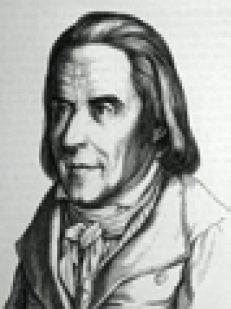
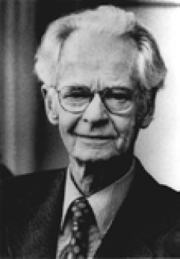
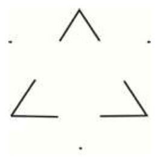

P
paleopsikoloji Bkz. eski insanlar psikolojisi; JUNG, Carl Gustav.
panik Bkz. panik bozukluğu.
panik atak (panic attack) Sıklıkla görünürde gerçek bir tehlike içermeyip kişinin tehlike olarak algıladığı, tehlikenin eşiğinde olduğu duygusu eşliğinde birdenbire ortaya çıkan ve şiddetli tedirginlik, korku, dehşet, kapana kısılmış olma, çaresizlik duygusu; aklını, kendini yitirme, çıldırma korkuları ve soluk darlığı, çarpıntı, titreme, göğüs ağrısı, boğulma duygusu, baygınlık, geçici felç gibi bedensel belirtilerle ortaya çıkan bir akut kaygı nöbeti; panik nöbeti, panik bozukluğu. Panik bozukluğunda duyumsanan şey öyle ürkütücü oluyor ki kişi, yeniden panik nöbeti yaşamaktan ölesiye korkuyor ve nöbetten kaçınmak için, günlük yaşam etkinliklerinin büyük ölçüde kısıtlanması gibi önemli savunma mekanizmaları ile alan korkusu gibi belirgin fobiler de oluşturuyor. Panik nöbetlerinin başlangıcı, her zaman durumsal bir tetikleyiciyle ilişkili olarak ortaya çıkmıyor; gökten zembille inmiş gibi, beklenmedik bir anda da görülebiliyor. Duruma bağlı olan nöbetler ise nerdeyse değişmez bir biçimde durumsal bir tetikçinin etkisi (ipucu) görülür görülmez ya da böyle bir beklenti söz konusu olur olmaz ortaya çıkıyor. Panik nöbeti bir de durumsal bir yatkınlığa bağlı olarak ortaya çıkıyor. Belli bir durumsal tetikçi duyulduğunda belirebiliyor. Panik hastaları, sıklıkla kalp krizi, astım krizi gibi korkularla hekime başvuruyorlar. Panik nöbetleri, panik bozukluğunun tipik bir özelliği olmakla birlikte bedenselleştirme bozukluğu, travma sonrası stres bozukluğu ve şizofreni bozuklukluğunda da görülebiliyor. Bkz. panik bozukluğu.
panik bozukluğu (panic disorder) 1. Kaza, arızalanan bir asansörde kalma, yangın, deprem gibi önemli tehdit içeren olaylarla karşılaşıldığında ağız kuruluğu, çarpıntı, hızlı soluma, terleme, dehşet ve çaresizlik duygusu gibi bedensel, özerk ve ruhsal tepkilerle yaşanan akut kaygı durumu. Tehlike karşısında gösterilmesi doğal ve sağlıklı olmakla birlikte panik, geçici felç ya da baygınlığa yol açabiliyor. Bu dehşet duygusunu, belirsizlik yorgunluk, engellenme, telkin ve başkalarının histerik davranışları daha da artırıyor. Ortada bir tehlike yokken yaşanan abartılı panik, çoğu kez bir panik bozukluğunun habercisidir. Paniğe, dış kaynaklı stresler ya da iç kaynaklı kaygı yol açıyor. Bu nedenlerle panik bozukluğu, kimi durumlarda ağır panik nöbetleri biçiminde de yaşanabiliyor. 2. Gerçek ya da varsayılan bir tehdit karşısında çok sayıda kişinin yoğun duygularla, özyıkıcı, akıl dışı davranışlarla tepki gösterdiği bir tür kitlesel davranış. Saatlerce, kimi zaman günlerce süren ağır panik nöbetleri. Bkz. kaygı.
pankreas bezi (pancreas gland) Sindirim olayına katılan birtakım salgıları ve ensülin salgılayan bez. Bu bez, midenin arkasında yer alıyor. Dış salgılarını 12 parmak barsağına boşaltıyor. İç salgısı olan ensülin ise karbonhidrat metabolizmasında önemli bir rol oynuyor; eksikliği şeker hastalığına yol açıyor.
paradigma (paradigm) Genel bir tanımla “bir dünya görüşü, dünyayı belli bir algılayış ve anlayış biçimi; değerler dizisi. Özelde ise, 5 ayrı alanda şu anlamları üstleniyor: 1. Bilim tarihi; özellikle Thomas Khun’un bilim tarihi çözümlemesinde, bilimsel sorunlara yaklaşımı tanımlayan yol gösterici varsayım, kuram ve yöntemler toplamı. Khun’a göre, doğal bilimlerde ve toplumda, her biri kendinden öncekilerden daha kapsamlı olan ilerlemeci bir paradigmalar evrimi gerçekleşiyor. 2. Sosyal psikolojide, üretim ilişkileri, bireylerarası etkileşim, devlet-birey ilişkisi, resmi ideoloji ve benzerleri de içinde olmak üzere, kapitalist paradigma, toplumcu paradigma gibi, belli bir toplumsal yapı modeli. 3. Araştırmalarda, örneğin, işlemsel koşullama gibi, araştırmanın çeşitli aşamalarına ilişkin deneysel bir tasarım, plan, incelenen sürecin ya da davranışın modeli. 4. Bir sorunun çözümü ya da anlaşılması konusunda, örneğin, depresyona yönelik bilişsel paradigma ya da psikanalitik paradigma gibi, benimsenen, temel kabul edilen belli bir kuramsal ya da bilimsel yaklaşım. 5. Dilbilimde, “yaparım, yaparsın, yapar; yaparız, yaparsınız, yaparlar” gibi bir sözcüğün aldığı biçimlerin tümü. Bkz. metafor.
paradoksal amaç (paradoxicalintention) Viktor E. Frankl’in logoterapide kullandığı bir teknik; paradoksik niyet. Bunda hastadan, asıl korktuğu şeyin olmasını istemesi bekleniyor. Bunun içinse hastanın, durumu kendine gülünç gösterecek yeni bir bakış açısı geliştirebileceği bir mizah duygusu gerekiyor. Örneğin, toplum karşısında konuşmak zorunda kaldığında kızaran ve tekleyen kişiye, bir daha toplum karşısında konuşurken, kendine şunu söylemesi öneriliyor: “O kadar çok kızarıp terleyeceğim ki dünyadaki en kırmızı ve en sulu kişi ben olacağım.” Bu, hastanın kendine gülmesini, rahatsızlık belirtilerinden uzaklaşmasını sağlıyor. Kekeleme, basit fobiler, saplantılar, erken boşalma ve benzeri bozukluklarda bu teknik, özellikle etkili oluyor. Bkz. aşırı düşünme.
paradoksik niyet Bkz. paradoksal amaç.
parafili (paraphilia) Kılık özentisi, fetişizm, göstermecilik, gözetlemecilik, cinsel özezerlik, cinsel elezerlik, çocuk sevicilik, ölü sevicilik, hayvan sevicilik gibi cinsel heyecan ve cinsel doyum için alışılmadık, tuhaf, toplumun normal kabul etmediği imge, nesne ya da etkinliklerin kullanıldığı ruhsal-cinsel bozukluklara verilen ortak ad; atipik cinsel davranış. Parafili, zararsız gibi görünen etkinlik ve nesnelerden, yaşamı tehdit eden etkinlik ve nesnelere dek büyük çeşitlilik gösteriyor.
paragrafi (paragraphia) Yazıda kimi harf ve sözcükleri atlama ya da yerlerini değiştirme, kimi hatalı, ilgisiz sözcükleri yineleyip durma gibi bir yazma bozukluğu. Paragrafi en çok beyin lezyonlu hastalarda, kimi zaman da şizofrenlerde görülüyor.
paralel dağılımlı işlem modeli Bkz. koşut dağılımlı işlem modeli.
paralellik kanunu Bkz. koşutluk yasası.
parametre (parameter) 1. İstatistikte, olasılık dağılımına bağlı olarak hesaplanan ve örneklemi değil; onun alındığı evreni istatistiksel bir değerle özetleyen ortalama, standart sapma ve benzeri sayısal bir değer. Bkz. parametrik istatistik. 2. Bir araştırma ya da deneydeki denetlenebilen, ayrı değerler verilebilen bir değişken.
parametrik istatistik (parametric statistics) Yapısı bilinen ve çoğunlukla normal bir dağılım gösteren evrenlerden elde edilen örneklemler üzerinde yapılan istatistiksel işlemler. Bu işlemler; parametrik çözümlemeler, toplama, çıkarma, bölme gibi aritmetik işlemlerin yapılmasını; dolayısıyla ortalama, standart sapma gibi parametrelerin tanımlanmasını olanaklı kılan aralık ya da oran ölçekli verilerle yapılabiliyor. Araştırmalarda, parametrik olmayan istatistikler yerine daha çok, parametrik istatistikler kullanılıyor; çünkü bunlar, daha doğru sonuçlar veriyor ve daha güçlü çözümleme teknikleri sağlıyor.
parametrik olmayan istatistik (nonparametric statistics) Parametre hesaplarına ya da duyarlı dağılım varsayımlarına dayanmayan, sıralı ya da nominal ölçeklerle toplanan istatistiksel teknikler.
paramnezi Bkz. anı karışıklığı.
paranoid (paranoid) 1. Düzenli ya da geçici, çoğunlukla görkemlilik ya da zulüm kuruntularıyla ortaya çıkan; ancak kişilik bozulmasına ya da parçalanmasına ilişkin başka belirtileri pek göstermeyen bir psikoz olan paranoya ile ilgili. 2. Paranoya hastalığına sahip kişiler. Bu terim, bu tür eğilimleri daha hafif düzeylerde gösteren kişiler için de kullanılıyor. Bkz. paranoid durum; paranoid düşmanlık; paranoid düşünce; paranoid erotizm; paranoid kişilik bozukluğu; paranoid şizofreni; paranoid-şizoid konum; paranoya; paranoyak kişilik.
paranoid biçim Bkz. manik depresif psikoz.
paranoid durum (paranoid state) Paranoyadaki kadar ayrıntılı ve düzenli ya da paranoid şizofreni kadar bulanık ve dağınık olmayan görkemlilik (megalomani) ya da zulüm kuruntularıyla ortaya çıkan geçici, akut psikotik bozukluk. İş değiştirme, evden ayrılma, başka ülkeye göç etme, sığınma, tutsak düşme gibi yaşam koşullarındaki birdenbire ve sıklıkla yaşanan değişiklikler, bu tür kuruntuları tetikliyor.
paranoid düşmanlık (paranoid hostility) Başkalarının kendisine tuzak kurmaya, kötülük etmeye çalıştığı biçimindeki kuruntulardan kaynaklanan öfke ve kuşkulandığı kişilere zarar verme isteği.
paranoid düşünce (paranoid ideation) Gözetlendiği, denetlendiği, horlandığı, dışlandığı, kötülük edildiği gibi aşırı abartılı, kuşkucu bir düşünce yapısı. Bu düşünce yapısı, psikotik bozukluğun tipik bir belirtisidir. Bkz. referans düşünceleri.
paranoid erotizm (paranoid eroticism) Aşkının gerçekleşmesini engelleyen koşullar ya da kişiler yüzünden karşılıksız kalan bir aşk ilişkisi kuruntuları besleme biçimindeki paranoya türü; aşk paranoyası. Aşk paranoyağı, sıklıkla ünlü ya da güçlü birisine âşık olduğu kuruntusunu sergiliyor ve ona mektupla, telefonla, internet aracılığıyla ya da ziyaretine gitme girişimleriyle boşuna iletişim kurma çabalarına yöneliyor.
paranoid kişilik bozukluğu (paranoid personality disorder) Çevresindeki insanların gizli güdülerine, hizli amaçlarına kafayı takma, aşırı kuşkuculuk,, kendi yanlışını üstüne almaktan kaçınma, aldatıldığına, kullanıldığına inanma, kendi önyargı ve tutumlarını haklı çıkaracak ipuçları bulmak amacıyla çevreyi dikkatle tarama gibi başkalarına karşı yaygın yersiz kuşkuculuk ve güvensizlik; kolaylıkla kırılma ve öfkelilik, pireyi deve yapma, inatlaşma, saldırıya geçme gibi aşırı duyarlık; duygusal soğukluk, mizah duygusundan, sevecenlik duygularından yoksunluk gibi duygusal sığlaşma; kendi duygularını başkalarına yansıtma ve benzeri belirtilerle ortaya çıkan kişilik bozukluğu. Bu kişilik bozukluğunu, öbür kişilik bozukluklarından ayıran, onlardaki inatçı (kalıcı) kuruntularla sanrıların bunda görülmemesidir. Genellikle savaşta tutsak düşme, göçmenlik, sığınmacılık ya da evinden ilk kez ayrılma gibi köklü çevre değişikliği yapan kimi kişilerde birden bire ortaya çıkan ve altı aydan kısa süren paranoid bozukluğa akut paranoid kişilik bozukluğu (acute paranoid disorder) deniyor. Bkz. suçluluk kuruntusu.
paranoid şizofreni Bkz. görkemlilik kuruntusu; şizofreni.
paranoid-şizoid konum (paranoid-schizoid position) M. Klein’e göre, bebeğin doğumu bir saldırı olarak algılaması ve 3-4 aylık oluncaya dek bir yok edilme korkusu ve zulüm görme kaygısı geliştirmesi. Buna göre bebek, kendi ölüm içgüdüsünce kendini yıkımdan korumak için saldırganlığını dışsal bir nesneye yansıtıyor; kendi saldırganlığını cezalandırıcı nesneye yöneltiyor ve memeyi bir oranda iyi, yararlı bir nesne olarak; bir oranda da kötü, nefret edilen nesne olarak içine yansıtıyor ya da içselleştiriyor ve bilinçdışına itiyor. Bkz. iyi meme; kötü meme.
paranoid yapı Bkz. psikoz öncesi yapı sunuflaması
paranoya (paranoia) Klinik anlamıyla son derece sistemli, inatçı, kalıcı, zulüm ya da görkemlilik kuruntuları, kuruntulu kıskançlık, kuşkuculuk, güvensizlik, kavgacılık gibi özelliklerle tanımlanan ve net, tutarlı düşünme eşliğinde gelişen bir psikotik bozukluk; paranoid psikoz, yansıtımca. Paranoya, yansıtma mekanizmasının abartılarak kullanılması sonucunda oluşturulan ve sürekli sabuklamaların, kuşku ve bilinçsiz suçluluk duygularının yoğun olduğu psikoz çeşidi olarak da tanımlanıyor. Bu hastalık, organsal öğesi en zayıf ruh hastalığı olarak biliniyor. Sanrıların yer almaması, bilincin açık olması ve gerçek bunamanın yer almaması, paranoyanın ayırt edici nitelikleridir. Hastanın akıl yürütme gücü, mantık örgüsü normal olduğundan, hasta ilk bakışta “onuruna fazla düşkün birisi”sanılabiliyor. Paranoyanın Ortaya Çıkmasına Yol Açan Nedenler: Bu konuda şunlar ileri sürülmüştür: (1) Paranoid yapılı kişinin, yaş dönümü denen orta yaşa gelmesi. (2) Daha önceki yaşantıların acı ve düş kırıklıkları yaratmış olması. (3) Gençlikle birlikte birçok umut ve fırsatların yitirilmesi. (4) Hormon yıkımı ile birlikte cinsel gücün ve yaşamın gerilemesi. (5) Yaşlılığın yaklaştığının sezilmesi. (6) Bedensel kusur ve çirkinliklerin bulunması. (7) Tutukluk ya da tutsaklık. (8) Alışılmadık, yabancı bir çevrede bulunmak. (9) Çevrenin anlayışsızlıklarına ve haksızlıklarına uğramak. (10) Zehirlenmek. (11) Gebelik gibi bedensel ve toplumsal-ruhsal zorlanmalarla karşılaşmak. Bununla birlikte küçük ve önemsiz de olsa paranoyanın ortaya çıkmasında hemen her zaman bir ilk gerçek çekirdek bulunuyor. Koca bir sabuklama düzeni, bu ilk neden üzerine kuruluyor. Psikanalitik görüş, konuyu tek açıdan; kendinin ağırlık verdiği açıdan yorumlamıştır. Buna göre paranoyaklarda eşcinsel eğilimler vardır. Bunun sonucu olarak bireyde, karşısındaki kişi için önce “Ben onu seviyorum.” düşüncesi uyanıyor. Bu düşünce ayıplandığından ve toplumsal yaşan kurallarına ters düştüğünden, kişide dayanılmaz bir kaygı yaratıyor. Bu kaygıyla baş edebilmek amacıyla birey, tepki geliştirme mekanizmasını kullanarak bu düşünceyi, benliğinin daha kolay katlanabileceği “Ondan nefret ediyorum.” biçimine çevirerek bu kuruntu sabuklamasını oluşturuyor. İlk ve temel olan eşcinselliğin ayıbından ve onun yarattığı kaygıdan bu yolla kurtulmaya çalışıyor. Bilinçdışı oluşup işleyen mekanizmalardan habersiz birey, bilinçdışı zincirin son halkası olan kuruntuların bilincindedir. Birey, bilinçli ruhsal yaşamını onlara göre yönlendiriyor. Paranoidlerde ruh çözümlemeleri sonucu ortaya çıkan bir başka nokta, bunlardaki kimseyi sevmeme; yalnızca kendilerini sevme biçimindeki ben odaklı duygulardır. Büyüklük sabuklamalarının çekirdeğini de bu belirti oluşturuyor. Akıl hastanelerindeki hastaların yaklaşık yüzde ikisini oluşturan paranoyakların yüzde 75’i erkektir. Paranoyanın Oluşum Evreleri: Paranoya, 40-45 yaşlarında ortaya çıksa da hastalığın çekirdeği, çocukluk yaşlarından bu yana gözlemlenebiliyor. Çocukluktaki paranoid çekirdek, zamanla çeşitli değişim ve gelişimlerden geçerek paranoyaya dönüşüyor. Paranoid yapı, yanlış akıl yürütme, büyüklenme, özgüven yokluğu, alınganlık ve toplumsal uyumsuzluk özellikleriyle varlığını belli ediyor. Paranoid çocuklar, kaprisli ve huysuz oluyorlar. Sıcak ve sürekli arkadaşlık kuramıyorlar. Böyle bir çocuk, delikanlılık çağına geldiğinde çeklingenliği, özgüvensizliği ve alınganlığı ile ilgi çekiyor; karşı cinsle rahat bir ilişki kuramıyor. Cinsel güçlükler içinde bunalıyor ve dikkafalılığa başvuruyor. Kişisel inançlarından milim sapamıyor. Daha ileri yaşlarda ise çok çalışkan, ciddi, aşırı alıngan, kuşkucu, güvensiz, onuruna aşırı düşkün, verdiği sözü ne pahasına olursa osun tutan bir kişi kimliği kazanıyor. Kendisini tutkuyla belirli ülkülere adıyor. Dikkatli bir gözlemci, tüm bu niteliklerin temelinde her zaman, normal dışı gelişim göstermiş olan bir benliğin doyurulması amacının bulunduğunu görebiliyor. Kişinin paranoyak durumuna gelmeden önce geçirdiği evrelerin her biri, kimi zaman yıllarca sürüyor. Paranoid kişi, bazen bu evrelerden birine de takılıp kalabiliyor. Paranoya Yerleşmeden Önce Hastanın Yaşadığı Dönemler: (1) Çözümleme ve Yorumlama Dönemi: Bu evrede kişi, çevresinde olup biten olayları dikkatle izliyor, onları gelecekteki sabuklamalarını besleyecek biçimde çözümlüyor. Kendisinde ve kendisine karşı gösterilen davranışlarda bu amaca hizmet edibilecek pek çok özellik buluyor. Herkesin gülüşünden, bakışından, konuşmasından kuşkulanıyor; onlara hep olumsuz anlamlar yüklüyor. (2) Kuruntu Sabuklamaları Dönemi: Bu ikinci evrede sıra, çözümleme sonuçlarını yorumlayarak birtakım kuruntu sabuklamaları oluşturmaya geliyor. Hastaya göre, çevresinde kendisine kötülük yapmak, kendisini küçük düşürmek, aşağılamak, öldürmek için fırsat kollayan kişi ya da örgütler vardır. Çevresindekilerin ve kendisinin her durumunu, bu kuruntularının yorumlanmasında araç olarak kullanıyor. Örneğin, rastladığı cenaze, onun ölümünün yakın olduğunu anımsatmak için hazırlanmış bir düzendir. Her olağan beden rahatsızlığı, zehirlendiğinin kanıtıdır. (3) Büyüklük Sabuklamaları Dönemi: Bu evrede hastada çeşitli büyüklük (megalomani) sabuklamaları yer almaya başlıyor. O, çok güçlü bir yol gösterici, soylu, varlıklı bir kişi, peygamber, dahası bir tanrıdır. Bu nedenle onu çekemeyenler vardır. Onlara karşı var olan durumunu koruması, bu yolda savaşım vermesi gerekiyor. Görüldüğü gibi bu evreye giren kişi, ikinci evrede oluşturduğu kuruntularını büyüklük sabuklamaları ile açıklamaya yöneliyor ve paranoyak kimliğini kazanmış oluyor. (4) Çöküntü ve Çözülme Dönemi: Paranoyada tam bir bunama görülmüyor. Her insanda 60’lı yaşlarda, önceki yılların dirikliğinde, istek ve tutkularında zayıflama oluyor. Bu nedenle paranoyaklarda da sabuklamalar, eski canlılığını yitiriyor. Böyle de olsa bunlar, daha direngen ve katı tutumlarıyla ayırt ediliyorlar. Bunlardan zor altında her şeyi Tanrı’ya bırakarak yaşamlarını sürdürenlerin, bunadıkları sanılmamalıdır. Paranoya Biçimleri: Paranoya, genellikle 7 farklı biçimde kendini gösteriyor. (1) Kuruntu Paranoyası: SBu paranoya biçimi, sklıkla yaşanıyor. Kuruntulu (perseküte) paranoyak, belirli bir kişinin isteği ile birilerinin kendisini izlediğini, kendisine kötülük etmek istediklerini ileri sürüyor. Bu kişilerin amaçlarını gerçekleştirmek için boyacıyı, şoförü ve başkalarını kullanarak, kılık değiştirerek kendisini izlediklerini savunuyor. Hasta, önlem olarak mahallesini, köyünü, kentini, ülkesini değiştirebiliyor. Ne ki gittiği her yere, sabuklamalarını da birlikte götürdüğünden, onları gittiği yerde de yaşıyor. Bunlar, kendilerine karşı kuruntu geliştirdikleri kişilerden kurtulmak için resmi makamlara; giderek uluslar arası adalet kurumlarına bile başvuruyorlar. Buralardan istediği sonucu alamayan hasta, kurtulmak için o kişi ya da kişileri öldürebiliyor. (2) Soyluluk Paranoyası: Bu biçimdeki paranoyayı geliştirenler, büyük ve soylu bir aileden geldiklerini; anne ya da babaları olarak bilinen kişilerin gerçek anne babaları olmadığını savunuyorlar. Bu savlarını akla uygun duruma getirmek için de geçmişteki kimi olayları, sabuklamalarıyla uyuşacak biçimde yorumluyorlar. Örneğin, A ülkesinin başkanının ülkemizle görüşmeye gelirken onu karşılayanlar arasında kendisi de bulunmuştur. Başkan orada halkı selamlarken kendisine özellikle gülümsemiş ve içten el sallamıştır. Başkanın ailesinden bir kızın nişanlanması için soylu bir damat arandığına ilişkin çıkan haberler, kendisinin görüp okuması için yayımlanmıştır. (3) Buluş Paranoyası: Bu tür bir hasta, ya yeni bir buluş yaptığını ya da bilinen bir buluşun kendisinin olduğunu ileri sürüyor. Bu buluşunun (!) patentini almak için ilgili kuruluşa başvuruyor. Hastanın buluşları, çoğunlukla şimdiye dek görülmemiş ya da bilimin şimdiye dek çözemediği alanlarla ilgili oluyor. Hasta, örneğin, denizde, yerde, yer altında ve havada yürüyen bir araç yapmıştır; kansere ilaç bulmuştur. (4) Gizemli Paranoya: Gizemli (mistik) paranoyak, kendisinde tanrısal bir gücün olduğunu; insanlığa yeni bir din yaymak ya da insanlığı kurtarmak için Tanrı’nın kendisini görevlendirdiğini savunuyor. Türlü olağanüstü olaylar gösterebildiğini öne sürüyor. Bu sabuklamalarını çevreye yaymak için konuşmalar düzenliyor, gazetelerde yazılar yazıyor. Kimi zaman bu paranoyakların, çevrelerinde geri zekâlılar ve histeriklerden bir inanmışlar grubu oluşturarak toplumu tedirgin ettikleri de görülüyor. Böyle durumlarda o hasta öldüğünde ya da hastaneye yatırıldığında, çevresindeki sabuklar dağılıyor. (5) Hak Arama Paranoyası: Bu paranoya biçiminde hasta, yenildiğine inandığı hakkını elde etmek için sürekli bir savaşıma girişiyor. Gazetelere, yenilen hakkına ilişkin yazılar yazıyor. Yaşamını, bu sabuklamaları yolunda mahkeme kapılarında dolaşmakla geçiriyor. Avukatının ya da yargıcın, karşı tarafla birlik olup hakkını yediklerini düşündüğü için hukuk öğrenimi yapanlara ya da oğluna, kızına hukuk öğrenimi yaptırıp davasını sürdürenlere rastlanmıştır. Bu hastaların, haklarını yediğini ileri sürdükleri kişiyi öldürdükleri de rastlanan olaylardandır. (6) Aşk Paranoyası: Bu tür bir hasta (erotoman), genellikle nüfuzlu ve önemli bir kişinin kendisine âşık olduğunu ileri sürüyor. Aşk paranoyakları da öbür paranoyaklar gibi günlük olayları ve anılarını, bu sabuklamalarını besleyecek biçimde yorumluyorlar. Bu paranoyaya daha çok, evlenmemiş ya da dul kalmış kadınlarda rastlanıyor. Örneğin, hekim, hastayla senli benli olmuşsa o, bunu hekimin kendisini sevmekte olduğu biçiminde yorumlayarak, bu gerçek olmayan sevgiyi mektuplarla, telefonlarla sürdürmeye kalkıyor. Bu hastanın kuruntusuna göre, ünlü sinema oyuncusu, kendisine âşıktır; ancak bunu kendisinin doğrudan açıklamasına toplumsal düzeyi elvermemektedir. Bu yüzden, aşkını gazetelerde yayınlattığı fotoğraflarla; filmlerde aldığı rollerle anlatıyor. Hasta, genellikle uzun bir düşsel dönemden sonra eyleme geçiyor. Erkek paranoyak, kendini bu denli çok seven (!) kızla evlenme girişiminde bulunuyor. Doğal olarak isteği geri çevrilince de bu düşsel sevgiliye ve onun çevresindekilere karşı küskünlük ve kızgınlık geliştiriyor. Onlara kötülük yapmaya bile girişebiliyor. (7) Kıskançlık Paranoyası: Gerçekte çocukluk döneminde başlayıp bir aşamaya dek herkeste görülebilen kıskançlık, paranoyaklarda hastalığa dönüşüyor. Kıskançlıkta gerçek sevgiden çok, büyüklenme ve özbenlik sevgisi baskın bulunuyor. Bu nedenle en tipik kıskançlıklara paranoyaklar arasında rastlanıyor. Örneğin, kıskanç bir erkeğe göre her eylem, üstü kapalı biçimde ya karısını baştan çıkarmaya ya da karısının kendisini aldattığını anlatmaya yöneliktir. Karısı kendisine aşırı sevgi gösteriyorsa bunu, kendisini aldatmakta olduğunu örtmek için yapıyordur. Paranoyak kıskançlık gösteren kadın, kocasının omzunda bir saç teli gördüyse bu, kesinlikle onun gizli sevgilisinden düşmüştür. Kıskançlık, alkoliklerde daha kolay filizleniyor. Ruhsal çözümlemeler, bu tür hastaların cinsel güçten yoksun, gizli eşcinsel ya da ileri aşamada eksiklik duygulu kişiler olduklarını ortaya koyuyor. Paranoyanın Tedavisi: Kişiye paranoya tanısı konulabilmesi için, onun hastalığının, şizofreni, organsal akıl hastalığı, organsal akıl belirtisi gibi bozukluklardan kaynaklanmadığının belirlenmesi gerekiyor. Paranoya, iyileştirilmeşi şimdilik olanaksız, süreğen bir psikozdur. Bununla birlikte, özellikle başlangıç döneminde uygulanan ruhsal çözümleme (psikolojik analiz) ile tepkilerin yumuşatılması biçiminde bir yarar sağlanıyor. Ömür boyu paranoid yapılarıyla ülke yönetmiş olan kişiler vardır. Bkz. bunamalı paranoya; dinsel kuruntular; paranoid; paranoid erotizm; psikoz öncesi yapı sınıflaması ((3) paranoid yapı); referans kuruntusu; suçluluk kuruntusu.
paranoya biçimleri Bkz. paranoya.
paranoyak kişilik (paranoiac character) Temel belirtisi, kendi güçlüklerinden ötürü çevresini suçlama eğilimi olan bir kişilik tipi. Bkz. paranoya.
parapsikoloji (parapsychology) Var olan bilimsel veri ya da yasaların ışığında açıklanamayan telepati, gaipten haber verme, duyu ötesi algı, psikokinezi gibi normal ötesi olguların sistemli olarak incelenmesi.
parasempatik işlevler Bkz. merkez sinir sistemi.
parasempatetik sinir sistemi Bkz. özerk sinir sistemi; sempatik sinir sistemi.
parataksis (parataxis) H. S. Sullivan’ın bütünleşmemiş bir düşünce tepedeğeri ya da çeşitli tutum, beceri, ilişki ve benzerlerinin büyük ölçüde birbirinden koparıldığı bir kişilik için kullandığı terim. Bkz. parataksik çarpıtma, parataksik tepedeğer; sentaksi.
parataksik çarpıtma (parataxic distortion) H. S. Sullivan’ın, çocukluk yaşantılarından kaynaklanan çarpıtılmış algı, yargı ve ilişkileri belirtmek için kullandığı terim. Örneğin, anne babanın, çocuğa gösterdiği soğuk, reddedici, eleştirici davranışların çocukta oluşturduğu değersizlik duygularının etkisiyle çocuk, başkalarının tutumlarını yanlış yorumluyor. Bu çarpıtma, kaygıya karşı benliğini savunma amacına hizmet ediyor. Bkz. konsensüs yoluyla geçerlik.
parataksik mod Bkz. parataksik tepedeğer.
parataksik tepedeğer (parataxic mode) H. S. Sullivan’ın akıl yürütme ve mantık evresine daha ulaşmamış olan küçük çocuklara özgü yaşantıların öznel, otistik yorumu ve anlatımı için kullandığı terim; parataksik mod.
paratimi (parathymia) Ruhsal durumun çarpıtılması. Paratimi, şizofrenik bir bozukluktur. Bu bozukluk sırasında kişi, örneğin, kendisine büyük bir miras kaldığını duyduğunda ağlıyor; duruma hiç uymayan bir tepkide bulunuyor.
paratip (paratype) Tipten uzaklaşan, tipe uymayan. Kalıtsal bir eğilimin ya da özelliğin bireysel dışavurumuna yol açan çevresel etkenlerin bütünü.
paratiroid bezi (parathyroid glands) Boğazda tiroid bezinin ardında yer almış olan; kalsiyum ve fosfor metabolizmasını denetleyen ve paratiroid hormonunu salgılayan bez.
paratiroid hormonu (parathormone) Paratiroid bezinin salgıladığı ve kemikle kandaki kalsiyum-fosfat düzeylerini ayarlayan bir hormon. Kandaki paratiroid hormonunun yüksekliği, yüksek kalsiyum ve düşük fosfat düzeyini; düşüklüğü ise düşük kalsiyum, yüksek fosfat düzeyini gösteriyor. Kandaki kalsiyum düzeyinin düşmesi, kas seyirmesine, sinirlerde kolay uyarılabilmeye; ağır olaylarda konvülsiyonlara yol açıyor.
parazitik süperego Bkz. parazitik üstbenlik.
parazitik üstbenlik (parasitic superego) Psikanalize göre, bireyin çocukluğunda oluşan ve sonraki etkilerle sentezlenen, üstbenliği ile çatışan telkinler ya da buyruklar içeren geçici bir üstbenlik. Örneğin, düşman propagandasına boyun eğme, etkili bir önderin kışkırtmasıyla kendi ahlaksal değerlerine ters düşen eylemlere girişme, bu üstbenliğin etkisiyle gerçekleştiriliyor. Bu geçici üstbenliği geliştiren kişi, gerçek üstbenliği ile çelişen; ancak, suçluluk duymadan geçici olarak güruh ruhsal tepkileri gösterilebiliyor.
parçacılık (partialism) Kişinin, cinsel eşinin bacakları, göğüsleri gibi vücudunun yalnızca bir yerine dokunmaktan vücudunun yalnızca bir yerine dokunmaktan cinsel doyum sağlama biçimindeki bir tür cinsel sapma. Bu eğilim, cinsel organları temsil eden simgesel bir nesnenin, cinsel eşin yerine konan fetişizmle ilişkili değildir.
parçalanma (frag mentation) 1. Farklı parçalara ayrılma, parçaların bütünleşmesini önleme ya da bir ve daha çok parçanın bütünden ayrılması. 2. Normalde bütünleşmiş olan düşünce ya da eylemlerin birbirinden kopması demek olan ruhsal bir bozukluk. Bu bozuklukta örneğin, kişide çağrışım ilişkileri zayıflıyor; kişinin düşüncelerinde bulanıklık baş gösteriyor ya da kişide tuhaf eylemler gözlemleniyor.
parçalanmış büyüme (split growth) Aynı bireyin farklı özelliklerindeki büyüme hızının birbirinden oldukça farklılık göstermesi.
parçalara bölerek öğrenme Bkz. öğrenme; öğrenme stratejisi.
Parkinson hastalığı (Parkinson illness) Daha çok 50-70 yaşları arasında görülen bu hastalık, bedensel titremelerle kendini belli ediyor. Ellerde başlayan titremeden sonra, konuşma ve yazma bozuluyor; yüz, bir maske gibi anlatımsız bir görünüm kazanıyor. Depresyona da girebilen hasta, iyileştirilebiliyor.
parmak emme (thumb or finger sucking) 1. Genellikle 3. ay ile 4-5 yaşına dek çocuğun baş parmağını, kimi zaman da ayak parmağını, kurdele gibi bir eşyayı emerek, duyduğu emme isteğini doyurması. Çocuğun ilk bir yıl içinde parmağını emmesi doğal sayılıyor. Bu eylemin, organlarını ve çevreyi tanıma ve keşfetme gereksiniminden kaynaklandığı düşünülüyor. Ayrıca, korkma, acıkma, anneden ayrılma ve uykuya dalma sırasında da çocuğun parmağını emdiği gözlemleniyor Parmak emme, çok emzirilen çocuklarda da görülüyor. Yeterli sevgi görmeyen, özgüvensiz, yalnız, sinirli çocuklarda parmak emmeye daha sık rastlanıyor. Bu zararsız; ancak, rahatsız edici davranışın ortadan kaldırılması için çocukla ailesi arasındaki ilişkilerde var olan aksaklıkların giderilmesi; sert davranışlara hiçbir zaman yer verilmemesi gerekiyor. Küçük çocuklara ise, emzik verilmesi öneriliyor. Bkz. çocuk ve ergende görülen uyumsuzluklar. 2. Psikanalize göre parmak emme, çocukluktan kalma cinsel isteklerin anlatımı olan bir kendi kendine cinsel doyum sağlama yoludur.
parmak söyleyişi Bkz. işaret dili.
pasif Bkz. edilgin.
pasif içedönüklük Bkz edilgin içedönüklük.
pasif kelime hazinesi Bkz. edilgin sözcük dağarcığı.
pasif öğrenme Bkz. edilgin öğrenme.
pasif öğretme Bkz. edilgin öğretme.
pasif saldırgan şahsiyet Bkz. edilgin saldırgan kişilik.
patlama eylemi (raptus action) Katlanılmaz derecede aşırı gerilime yönelik bir tepki. Kişi, bu eylem sırasında kendini iğdiş etmeğe, başkalalarını ya da kendini öldürmeye, yangın çıkarmaya yönelik birdenbire, yıkıcı ya da özyıkıcı bir dürtüye kapılıyor; birdenbire, düzensiz hareketlerle katatonik şizofrenlerde gözlemlenen katılığa giriyor.
patlama sağaltımı Bkz. patlama tedavisi.
patlama tedavisi (implosive therapy) Davranışçı tedavi tekniklerinden biri; patlama terapisi, patlama sağaltımı. Bu teknik de temelde sistemli duyarsızlaştırma gibi sönmeye dayanıyor. Patlama tedavisi, kısa süreli bir tedavi tekniğidir. Sistemli duyarsızlaştırmada olduğu gibi, hastayla işbirliği yapıldıktan sonra kaygı aşama sırası oluşturuluyor ve tüm davranışçı tedavilerdeki gibi hasta, tedavi sonrasında izleniyor. Patalama tedavisinin sistemli duyarsızlaştırmadan en önemli farkı, bunda gevşeme tekniklerinin kullanılmamasıdır. Bu tedavi uygulamasında yalnızca istenmeyen davranışın söndürülmesine odaklanılıyor. Aşama sırası, olabildiğince canlı yaşatılıyor. Tedavi eden kişi, imgelem gücünün yanı sıra, işitsel, görsel ve dokunsal olanakaları da kullanıyor. Patlama tedavisini ilk kez, 1961 yılında Thomas Stampfl, duyarsızlaştırmaya seçenek olarak kullanmıştır. Patlama tedavisine, kişinin duyduğu kaygıdan dolayı yaşamının tehlikeye girdiği ve kullanılacak başka bir teknik bulunamadığı durumlarda başvuruluyor. Çünkü patlama tedavisinde kaygı, gerçek yaşamdan verildiği için risk oluşturuyor; sorun, olduğundan daha kötü duruma gelebiliyor; bu uygulamaya herkes dayanamıyor ve tedaviyi bırakabiliyor. Bkz. davranış değiştirme teknikleri; sistemli duyarsızlaştırma.
patlama terapisi Bkz. patlama tedavisi.
patojenik aile yapısı (pathogeniç famıly pattern) Hastalığa hazırlayıcı aile yapısı.
patoloji (pathology) Hastalığın nedenleri, doğası, hastalıktan kaynaklanan yapısal ve işlevsel değişiklikler gibi tıbbın hastalığın bütün yönlerini inceleyen dalı; hastalıklar bilimi.
patolojik kumar (pathologicalgambling) Kumar oynama dürtüsüne yenik düşme sonucu ailesel, toplumsal ilişkilerde, yasalarla ciddi sorunların yaşanmasına yol açan süreğen, ilerlemeli bir dürtü denetleme bozukluğu; hastalıklı kumar.
patonevroz (pathoneurosis) Psikanalize göre, bedensel bir hastalığa, o hastalığın yarattığı kısıtlamalara ilişkin sakatlığın yadsınması ya da hastalığınm, kendisine verilmiş bir ceza olduğu inancı gibi nevrotik belirtiler.
PAVLOV, İvan Petroviç (1849-1936) Rus hekim, fizyoloji bilgini; sindirim sistemi üzerindeki çalışmalarıyla tanınmış; koşullu rerflekslere ilişkin temel bulgularıyla psikolojide çığır açmış kişi. Pavlov, Riazan’da doğdu; Leningrat’ta öldü. Bir köy papazının oğlu olarak Rizanda din eğitimi gördükten sonra, 1870’te, sonraki adı Leningrat olan St Pertersburg’daki üniversitenin hukuk fakültesine kaydoldu. Ancak, başta I. M. Seçenov olmak üzere, yapıtlarını okuduğu fizyoloji bilginlerinin etkisinde kaldı ve doğa bilimleri öğrenimini yeğleyerek fizyoloji ve kimyaya ağırlık verdi. 1875’te bu okulu bitirişinden kısa bir süre sonra Tıp ve Cerrahi akadamisinde, daha sonra Askeri Tıp Akademisi’nde Tıp öğrenimine başladı. 1879’da bu okulu bitirince, aynı kurumda fizyoloji laboratuarının yöneticiliğine getirildi. Bir yandan da doktora çalışmalarını sürdürdü. 1883’te doktorasını tamamladıktan sonra, bir bursla Almanya’ya gitti. Orada iki yıl, Breslau’da H. Heidenhain’ın laboratuarında sindirim sistemi; Leipzig’de de K. Ludvig ile birlikte kardiyovasküler sistem fizyolojisi üzerinde çalıştı. Ülkesine döndüğünde bir süre geçici görevlerde bulunduktan sonra 1890’da Askeri Tıp Akademisi’nin farmakoloji alt bölümünün başkanı oldu. Bu görevi, 1924’e dek sürdürdü. Onun yanı sıra, 1891’de, yeni kurulan Deneysel Tıp Enstitüsü’nün başkanlığını da üstlendi. 1925’te SSCB Bilimler Akademisi yöneticiliğine getirildi. Buraya bağlı olan Fizyoloji Enstitüsü’ndeki çalışmalarını da yaşamının sonuna dek sürdürdü. Pavlov, sindirim sistemi üzerindeki çalışmalarıyla 1904’te Nobel Fizyoloji ve Tıp Ödülü’nü kazandı. 1912’de Légion d’honneur unvanını aldı. 1917 Ekim Devrimi’ni başlangıçta benimsemeyen ve yönetime ilişkin açık eleştirilerini 1930’lardan sonra değiştiren Pavlov’a 1921’de Lenin’in imzasını taşıyan kararla yaşamının sonuna dek bilimsel araştırmalarında güçlü destek sağlandı. Bu, dünyaca ünlü bilim adamının onuruna SSCB Bilimler Akademisi 1934’te Pavlov Ödülü; 1949’da da Pavlov Madalyası koydu. Birçok bilimsel kuruma onun adı verildi. Pavlov, 60 yılı aşkın süreyi kapsayan araştırmalarında özellikle üç ana konuya ağırlık verdi. Bunların ilki kalp ve kan dolaşımı üstüne araştırmalarıdır. İkincisi sinir sistemi incelemeleri; üçüncüsü de koşullu refleksler (tepkeler) üzerindeki çalışmalarıdır. Pavlov, son dönem araştırmalarını koşullu refleksler üzerinde yoğunlaştırdı. Bu çalışmaları, psikoloji ve psikiyatriyi derinden etkiledi. Sindirim sistemi araştırmaları sırasında deney hayvanı olarak kullanılan köpeklerde yiyeceğin görülmesiyle birlikte başlayan tükürük salgılamasının temel ve tutarlı bir tepki olduğu anlaşıldıktan sonra, bir tür koşullanmayla gerçekleşen refleks türündeki benzer tepkiler, Pavlov’un laboratuvarında düzenli bir biçimde incelenmeye başlandı. Pavlov, başlangıçta öznel ve psikolojik kökenli diye yorumladığı; bu nedenle de kuşkuyla karşıladığı bu olguyu, nesnel yöntemlerle inceleyebileceğini düşündü. Seçenov, daha önceleri davranışın, genel olarak genişletilmiş refleks kavramıyla açıklanabileciğini ileri sürmüş; üst düzeyde refleksler olarak yorumladığı davranışın, özellikle beyin kabuğunu kapsayan sinirsel refleksler biçiminde gerçekleştiğini belirtmişti. Seçenov’un bu savlarından yola çıkan Pavlov, koşullu refleksleri köpeklerin davranışları düzeyinde inceledi ve bu davranışların temelini oluşturabilecek fizyolojik mekanizmalar ile beyindeki sinirsel etkinliklere ilişkin bir kuram ortaya koydu. Pavlov ve asistanları, hayvanın ağzına her konuluşunda koşulsuz reflekse yol açan et ya da seyreltik asit gibi koşulsuz uyaranların, başka uyaranlarla nasıl eşleştirilerek koşullu reflekslerin oluşturulabileceğini sistemli bir biçimde incelediler. Bugün klasik koşullama ya da Pavlov koşullaması diye adlandırılan yönteme göre, zil sesi ya da benzeri koşullu uyaranın hayvana dinletilmesinden kısa bir süre sonra, koşulsuz uyaran sunuluyor ve hayvanın tepkisi ölçülüyordu. Başlangıçta yalnızca koşulsuz uyarana bir tepki gözlemlenirken, koşullu uyaran ve koşulsuz uyaranın sık sık eşleştirilerek hayvana algılatılması sonucu, koşullu uyaran da bir reflekse (koşullu reflekse) yol lmış fizyoloji araştırmalarında kullandığı yöntemlerden yararlanarak yürüttüğü bu araştırmalarla, oldukça yalın görünen koşullu refleks olgusunu tüm ayrıntılarıyla inceledi. Koşullu uyaranla koşulsuz uyaran arasında ancak birkaç saniyelik aralığın, en iyi koşullama sonucunu verdiğini; koşullu uyaranın, koşulsuz uyarandan sonra sunulmasının koşullamayı gerçekleştirmediğini belirledi. Bir koşullama sonucu, kullanılan koşullu uyarana benzeyen uyaranların, daha az yoğunlukta da olsa, bir tepkiye yol açtığını ortaya çıkarmakla da davranışta genelleme mekanizmasına ışık tutmuş oldu. Bunlardan başka, bir deneyde iki uyarandan yalnızca biri koşulsuz uyaranla eşleştirildiğinde, hayvan, eşleştirilen uyarana koşullu bir refleks geliştiriyor; başlangıçta büyük olasılıkla bir genelleme sonucu eşleştirilmeyen uyarana yolladığı refleks, giderek gücünden yitiriyordu; yani ketleniyordu. Koşullama, üst düzeyde de gerçekleştirilebiliyor; zincirleme koşullama sonucu bir deneyde koşullu uyaran olarak kullanılan bir uyaran, bir ikinci deneyde zorlukla da olsa, koşulsuz uyaran işlevi kazanabiliyordu. Pavlov, koşullamadan yola çıkarak üst düzey beyin işlevleri, insan psikolojisi ve psikopatoloji konularında kapsamlı ve tartışmalı kuramlar geliştirdi. Kuramsal görüşlerinin sınırlarını oluşturan koşullu reflekslerin temelinde, beyin kabuğunu da içeren bir fizyolojik mekanizmanın yer aldığı görüşü oluşturuyordu. Ona göre, koşulsuz tepkiler, beyin kabuğunu gerektirmiyor; ama koşullu uyaranın neden olduğu fizyolojik değişiklik, bir uyarma mekanizması aracılığı ile beyin kabuğunda oluşuyordu. Böylece, eşleştirilen koşıllu-koşulsuz uyaran ikilisi, beyin kabuğunda bir tür fizyolojik bağ kuruyordu. Koşullu uyaranın, koşullama ile belirli bir odaktan başlattığı uyarma, bir yayılma mekanizmasıyla beyin kabuğunda giderek daha geniş bir alanı etkileyebiliyor; deneylerde gözlemlenen genelleme, koşullu uyaranın odağından uzaklaştıkça gücünü yitiren bir tür uyarmanın yayılması mekanizmasıyla gerçekleşiyordu. Koşullama, temelde birbirine karşıt bu iki mekanizmanın etkileşimi ile ortaya çıkıyordu. Örneğin, uyarma ağırlıklı bir koşullama sürecinden sonra, koşullu uyaranın ardından koşulsuz uyaranın sunulmadığı söndürme denen deneysel işlemde koşullu tepkinin giderek gücünü yitirmesi, ketleme mekanizmasına bağlıydı. Pavlov, uyarma ve ketleme mekanizmasının etkileşimine dayalı önerileriyle ruhsal hastalık olgularını açıklamaya ve köpekler üzerinde yaptığı deneylerle bu olgulara benzer davranış kalıplarını köpeklerde oluşturmaya çalıştı. Örneğin, koşulsuz uyaranla eşleştirdiği bir daire ile, eşleştirilmeyen bir elips arasındaki ayrımı giderek azalttı ve köpek, o ayrımı algılayamadığında, Pavlov’un deneysel nevroz adını verdiği davranış bozukluğu göstermeye başladı. Bu ve bunun benzeri çalışmalardan yola çıkan Pavlov, koşullama süreçlerinin, ruh hastalıklarının kökenindeki mekanizmaya ışık tutabileceğini savundu. Koşullamanın temelinde yattığını varsaydığı uyarma ve ketleme mekanizmaları aracılığı ile ruhsal hastalıklar için kimi tedavi yöntemleri de önerdi. Ayrıca, insan kişiliğini, bireyin fizyolojik yapısında var olan uyarılma ve ketleme eğilimleri arasındaki denge ile bu eğilimlerin yeğin, koşullama konusundaki en önemli katkılarından birini de yaşamının son yıllarında gerçekleştirdi. İkincil sinyal sistemi diye adlandırdığı dilin, koşullamaya nasıl aracı olduğunu gösterdi. Ona göre, yaptığı deneylerde kullandığı türden koşullu ve koşulsuz uyaranların eşleştirilmesiyle oluşturulan koşullama, insanların birçok hayvan türüyle paylaştıkları birincil sinyal sisteminin sonucudur. İkincil sinyal sistemi olan dil aracılığı ile insanlar, ayrıca doğrudan koşullanabiliyor; sözcükler, hem koşullu hem de koşulsuz uyaran işlevi görebiliyordu. Pavlov, bu katkısıyla bir yandan, koşullamanın kapsamını genişletti; öte yandan niteliğini de oldukça değiştirerek özellikle çocukların dil ve zihinsel gelişiminin koşullama yöntemleriyle incelenmesine kapı açtı. Pavlov, uzun araştırmacılık yaşamında bilimsel dürüstlük, kuşkuculuk ve titizlik ilkelerinden ödün vermemesiyle de ünlendi. Koşullama mekanizmalarının açıklığa kavuşturulmasında en önemli rolü oynamakla kalmadı; sonraki araştırmacılara da ulaşmaları gereken bilimsel standart konusunda örnek oldu. Beyin mekanizmalarına ilişkin görüşleri ile psikiyatri (ruh hastalıkları bilimi) konusundaki savları, daha sonraki bulgularca desteklenmemiş olsa da koşullu refleks, psikoloji ve fizyolojiye temel bir kavram olarak yerleşti. Pavlov’un çalışmaları, birçok ülkede psikoloji araştırmlarını, özellikle de öğrenme kuramlarını önemli ölçüde etkiledi. Başlıca yapıtları: Lektsiy o rabote glavnkpişçevaritelnik zelez (1897) (Temel Sindirim Bezlerinin İşlevleri Üstüne Dersler), Eksperimentalnaya psikologya psikopatologya na zivotnik (1903) (Hayvanlarda Deneysel Psikoloji ve Psikopatoloji), Dvadtsatiletni opit obektivnogo izuçenya visşey nervnoy deyatelnosti (povedenya) zivotnik (1923) (Hayvanların Üst Sinirsel Etkinlikleri Üzerine Yirmi Yıllık Deney), Lektsiy o rabote bolşik poluşari golovnogo
Pavlovculuk (Pavlovianism) Ruhsal süreçlerin, fizyolojik süreçlerden oluştuğunu ve bu yoldan incelenmesi gerektiğini savunan Pavlov’un koşullama ile ilgili görüşünü benimseyen akım; Pavlov okulu. Bkz. PAVLOV, İvan Petroviç.
Pavlov koşullaması Bkz. klasik koşullama.
pazarlamacı yönelim (marketing orientation) Erich Fromm’ın, çağdaş toplumda kişinin ticari bir meta olarak görüldüğü ve kişiliğin, piyasa değeriyle ölçüldüğü bir kişilik yapısı tanımı. Ona göre bu yönelimde ticari ya da toplumsal yaşamda başarı sağlama gizilgücü bulunan özelliklere bilgi, yaratıcılık, bütünlük, kendini adama gibi değerlerden daha fazla önem veriliyor. Bu da ilişkilerin sığlaşmasına ve kişinin hem kendine hem de topluma yabancılaşmasına yol açıyor. Bkz. özgürlükten kaçış yaklaşımı.
pazar nevrozu (Sunday neurosis) Nevrotik belirtilerin hafta sonlarında ve tatillerde ağırlaşması. Ferenczi ve başka kimi psikanalistler, bastırılan dürtülerin ve bir zamanlar suçluluk duygusu yaratan, ilk sahne gibi düşlemlerin, tatil günerinde su yüzüne çıkıyor olabileceğini savunuyorlar. Varoluşçu V. E. Frankl, buna başka bir açıklama getiriyor. Ona göre pazar sıkıntısı, varoluşsal boşluktan kaynaklanıyor. Hafta içi, kendini işine vererek anlamsızlık duygusundan kaçabilen kişi, yapacak bir iş bulamayınca anlamsızlık, boşunalık duyguları da yoğun bir biçimde bilince ulaşıyor ve kişiyi anlamlı-anlamsız bir şeyler yapmaya zorluyor.
Pearson korelasyon katsayısı (Pearson product moment coefficient of correlation) +1 ile -1 değerleri arasında değişen bir sayı. Bu sayı, iki değişken arasındaki sürekli ilişki derecesini gösteriyor. Türlü formüllerle hesaplanıyor.
pedagog Bkz. eğitim bilimci; eğitimci.
pedagoji Bkz. eğitim; eğitim bilimi.
pedagoji tarihi Bkz. eğitim tarihi.
pediyatri (pediatrics) Tıbbın, çocukluk hastalıklarının ortaya çıkışı, gidişi ve tedavisi ile ilgilenen dalı. Bu dal bugün, bebeklikten ergenlik dönemine dek sağlıklı gelişimin sağlanmasına yönelik çalışmalar yapıyor.
pedofili Bkz. çocuğa yönelik sapıklık.
pedoloji Bkz. çocuk bilimi.
pekiştireç (reinforcer, reinforcement agent) Tepkiyi güçlendiren uyarıcı ya da olay; pekiştirici. Pekiştirici, ödül gibi olumlu ya da ceza gibi olumsuz; birincil ya da ikincil olabiliyor. Örneğin küçük çocuklar için şeker, çikolata birincil pekiştirici; toplumsal bir övgü ya da toplumsal bir armağan, ikincil pekiştirici oluyor. Bkz. ödül.
pekiştirici Bkz. pekiştireç.
pekiştirici uyarıcı (reinforcing stimulus) Denek, istenen tepkiyi yaptıktan sonra uygulanan koşullanmamış uyarıcı ya da ödül.
pekiştirme (reinforcement) 1. Türlü teknik, süreç, ödül ya da ceza aracılığı ile bir tepkinin yinelenme sıklığını ya da olasılığını artırma ya da azaltma. Pekiştirme, davranışçı yaklaşımda hem bir öğrenme ilkesi hem de davranış değiştirme tekniklerinden biridir. Öbür öğrenme ilkeleri genelleme, ayırt etme ve söndürme; davranış değiştirme teknikleri ise biçimlendirme, cezandırma ve sistemli duyarsızlaştırmadır. Bkz. pekiştireç (pekiştirici). 2. Klasik koşullamada, koşullu bir uyarıcının, örneğin, zil sesinin, yeniden yeniden koşulsuz uyarıcıyla ilişkilendirilmesi. 3. İşlemsel koşullamada, doğru tepkiden sonra ödül ya da yanlış tepkiden sonra ceza verme. 4. Hull’un kuramında, öğrenmenin zorunlu bir koşulu olarak, belli bir dürtünün (gereksinimin) giderilmesi. Bu kurama göre öğrenmenin olabilmesi için pekiştirmenin gerçekleşmiş ve bir itkinin giderilmiş olması gerekiyor. Bkz. birincil pekiştirme.
pekiştirme aralığı (reinforcement interval) Deneylerde istenen tepki ortaya çıkıncaya dek ödüllendirmenin belirli, değişmeyen aralıklarla sürdürülmesi.
pekiştirme basamağı (gradient of reinforcement) “Ödül ne kadar yakın ise, bir dizi eylem içinde bir eylem, o kadar çok pekiştirilir.” genelleme ya da ilkesi. Başka deyişle tepki, pekiştirmeye ne kadar yakın ise o tepki o kadar güçleniyor.
pekiştirme çizelgesi (Schedule of reinforcement) Uyarıcı-tyepki öğreniminde, deneğin tepkiyi kaçıncı uygulamada pekiştireceğini belirleyen çizelge.
pekiştirme varsayımı (reinforcement hypothesis) 1. İ. P. Pavlov’a göre, koşullanmamış bir uyarıcı-tepki etkinliği ile geçici bir yakınlığı bulunan bir uyarıcının tepkiye yol açma eğiliminin bulunduğu varsayımı genellemesi. 2. C. Hull’e göre, bir uyarıcı-tepki etkinliği ile bir dürtü gidericisinin bir arada bulunmasının, uyarıcının tepki uyandırma eğilimini güçlendireceği genellemesi. 3. Öğrenmenin pekiştirmeye bağlı olduğunu savunan kuram.
pekiştirme yasası Bkz. pekiştirme varsayımı.
pelteklik (lisp, lisping) 1. Dilini dişleri arasına almış gibi konuşma ve bu nedenle z, s, J, ş seslerini kusurlu söyleme. 2. Peltek konuşma durumu.
penis (penis) Erkeğin cinsel ilişki ve işeme organı. Bkz. üretken sevgi.
penise imrenme (penis envy) Psikanalitik yaklaşıma göre, kadının erkek cinsel organına sahip olma (erkek olma) isteği. Kız çocuğu, penisin kendisinde bulunmadığını keşfettiği üretken dönemde kötülüğe uğramış, penisinin yok edilmiş olduğuna inanıyor ve bunun için annesini suçluyor; yeniden penise sahip olmak istiyor. Freud’a göre bu, kadınların evrensel isteğidir ve kadınlık gelişiminin doğal bir parçasıdır. Bu istek, kadını önce penis; sonra çocuk isteği biçiminde erkeğe yöneltiyor. Bkz. iğdiş karmaşası; Oedipus karmaşası.
penis korkusu (castration complex) Psikanalize göre iğdiş edilme korkusu. Bkz. iğdişlik karmaşası.
pepelik Bkz. kekemelik; pepemelik.
pepemelik (stuttering, stammering) Sözcüklerin ilk seslerini güçlükle söyleme ve birkaç kez yineledikten sonra arkasını getirme durumu; dil dolaşıklığı ya da dil tutukluğu; pepelik, kekemelik.
peptid (peptide) İki ya da daha çok amino asidin birleşmesiyle oluşan ve proteine benzeyen; ancak ondan daha kısa olan bir molekül. Bu moleküller de birleşip proteinleri oluşturuyor. Vücutta üretilen peptidlerin birçoğu, birer hormon, sinir düzenleyici ya da sinir iletici işlevi görüyor.
perde anı (screen memory) Psikanalize göre, ürkütücü ve katlanılmaz olan bir anının gizlenmesini, bilinçten uzak tutulmasını amaçlayan ve bir ölçüde doğru olan ya da hastanın kurgulamış olduğu anı. Bu tür anılar, rahatsız edici de olsa anımsanıyor ve kişi bunları örneğin, rahatsızlığının, talihsizliğinin nedeni olarak gösterebiliyor: Babasının istismar ettiği bir kız, bu travmayı şiddetle bastırıyor; bunun yerine üvey babası, uzak akrabası ve benzerlerinin istismarlarına ilişkin anılarını öne çıkarıyor. Bkz. perde savunma.
perde savunma (screen defense) Psikanalize göre, rahatsız edici gerçek duygu ya da olayları gizlemek amacıyla bilinçdışı kullanılan bir anı, düşlem ya da rüya imgesi. Bkz. perde anı.
performans (performance) 1. Başarı, elde edilen iyi sonuç. 2. Bir şeyin değerini belirleyen nitelikler. 3. Bir sporcunun güç sınırı, elde edebileceği en iyi derece.
performans kaygısı (performance anxiety) Bir işi yapamama korkusu. Sıklıkla başarısızlık korkusundan kaynaklanan bu kaygı, iktidarsızlıkta olduğu gibi, cinsel bir etkinlikle ve sınav kaygısı biçiminde ortaya çıkıyor. Bkz. beklentisel kaygı.
perhiz (obstinence) Alkol, sigara, uyuşturucu, cinsel ilişki ya da çeşitli yiyeceklerden; tedavi sırasında alışkanlık yaratan psikoaktif maddelerden uzak durma. Bunların dışında kumar, aşırı yeme gibi davranış alışkanlıklarından vazgeçme anlamında da kullanılıyor.
perhiz hezeyanı Bkz. perhiz sabuklaması.
perhiz kuralı (abstinence rule) Çözümsel tedavinin, hastalık belirtileri için olabildiğince yerine koyma yoluyla doyum bulabileceği bir biçimde düzenlenmesi kuralı. Bu tedavide uzman, kural olarak hastanın isteklerini gidermekten ve uzmana biçtiği rolleri oynamaktan kaçınıyor. Tedavi sırasında uzman, hastanın özellikle sevgi ve sevecenlik beklentilerini yanıtlamayı reddediyor.
perhiz sabuklaması (abstinence delirium) Alkolizm ya da uyuşturucu bağımlılığının uzaklaşım belirtileri arasında yer alan bir sabuklama türü; perhiz hezeyanı.
periferal sinir hastalığı (peripheral neuropathy) Duygusuzluk, karıncalanma ve yanma duygusu, ağrı, kas zayıflığı, anormal refleksler, kısmi felç gibi belirtilerle daha çok ellerde ve ayaklarda; kimi de kol, bacak ve yüzde ortaya çıkan sinir, kas bozukluğu. Vitamin eksikliği, alkol, diyabet; kurşun, arsenik, civa gibi toksik maddeler ve kimi ilaçların yan etkileri, bu hastalığın nedenleri arasında gösteriliyor.
periferal sinir sistemi (peripheral nervous system) Sinir sisteminin, beyin ve omuriliğin dışında kalan ve duyu organlarından gelen duyu sinyallerini merkez sinir sistemine; merkezi sinir sisteminden gelen sinyalleri ise kaslara ve iç organlara ileten sinirlerden oluşan bölümü. İstemli ve istemsiz bütün kas hareketleri ile salgı bezlerini denetleyen bu sistem, bedensel sinir sistemi ve özerk sinir sistemi olarak ikiye ayrılıyor.
perimenopaz (perimenopause) Belirtilerin görülmeye başladığı menopaz öncesi dönemle menopazdan sonraki ilk birkaç yıllık dönem.
persona (persona) Jung’a göre, kişinin toplum beklentilerine karşı takındığı maske. Bunu kişiye, yaşamı boyunca oynaması beklenen bir rol olarak, toplum veriyor. Maske, öbür kişiler üzerinde belli bir etki yaratmak ve çoğu kez, kişinin gereksiz yere gerçek özelliklerini gizlemek amacıyla kullanılıyor. Toplum, kişiyi, toplum içi kişilik demek olan personaya göre değerlendiriyor. Benlik, personayla özdeşleştiğinde birey, gerçek duygularından çok, bilinçli kişliliğinin, kendi gerçek kişiliği olduğunu sanıyor ve kendine yabancılaşıyor. Böyle olunca, bağımsız bir kişi olması gerekirken, toplumun bir yansıması olarak yaşamını sürdürüyor. Bkz. analitik psikoloji; ilk örnek; kişilik.
personalite Bkz. kişilik.
personel psikolojisi (personnel psychology) Bir kişinin endüstride, silahlı kuvvetlerde ya da başka herhangi bir kurumdaki görevleriyle ilgili, ruhsal özelliklerini inceleyen uygulamalı bir psikoloji dalı; işgören psikolojisi. Bu dal, personelin seçimi, işe yerleştirilmesi, işte ilerlemesi, denetimi, morali ve öbür sorunlarını, öğrenci personelinin benzer sorunlarını da ele alıyor. Çoğu kez okullarda; arada bir de endüstride kişisel ve mesleksel rehberlik ve psikolojik danışma konularını da içeriyor.
perspektif (perspective) 1. Bir nesne, durum ve benzerleri konusunda genel bir yaklaşım, bir bakış açısı. 2. Nesnelerin birbirine göre konumu, büyüklüğü ve uzaklığı gibi özelliklerinin iki boyutlu bir yüzeyde üç boyutluymuş gibi algılanacak biçimde yerleştirilmesi. Bkz. doğrusal perspektif.
pervers yapı Bkz. psikoz öncesi yapı sınıflaması.
PESTALOZZI, Johann Heinrich (1746-1827) İsviçreli eğitimci; çağdaş ilköğretimin öncüsü. Pestalozzi Zürih’te doğdu; Brugg’da öldü. Küçük yaşta babasını yitirdi. Yoksulluk içinde geçen çocukluğu ve içinde yaşadığı koşullar, onda toplumsal adalet duygusunu güçlendirdi. Döneminde Avrupa’yı saran aydınlanma duygusundan etkilendi. İnsanlığa hizmet amacıyla din adamı olmayı istediyse de üniversitedeki teoloji (tanrıbilim) derslerinde başarı gösteremedi. Ardından, hukuk ve siyasal bilimleri denedi. Bu dönemde insancıl davranışlarını, yardımda bulunduğu insanlar bile kuşkuyla karşıladı ve köktencilikle suçlandı. Eğitimini yarıda bırakarak, J. J. Rousseau’nun düşüncelerinin de etkisiyle doğaya yöneldi. 1769’da Birr’deki Neuhof adlı çiftliğine yerleşti. İyi tarım yaparak yoksullukla savaşabileceğini umuyordu; ancak başarılı olamadı. Yeni bir girişim kararı aldı: Çevredeki ilgiden yoksun kimi çocukları bir araya topladı ve 1774’te ilk eğitim denemesine girişti. Çalışmanın, sade, sağlıklı yaşama ile sevecen bir ortamın, bu kimsesiz ve mutsuz çocuklara, mutlu ve umutlu bir gelecek hazırlayacağına inanıyordu. Bu amaçla onlara eğitimin yanı sıra iplik bükmeyi, kumaş dokumayı öğreterek onların ilerde yaşamlarını kazanacak duruma gelmelerine çalıştı. Pestalozzi’nin bu denemesi, eğitimde ve kimsesiz, suçlu çocukların eğitiminde yeni bir çığır açtı. Pestalozzi de insanlığın gelişmesinin ancak, her insanın kendini geliştirmesine bağlı olduğu; insanların gelişmelerine de ancak öğretmenlerin yardımcı olabileceği inancı ile öğretmenlikte karar kıldı. Ne ki parasal sıkıntılar nedeniyle Pestalozzi 1779’da okulunu kapatmak zorunda kaldı. 1780’de, düş kırıklıklarını ve karamsar düşüncelerini Bir Münzevinin Akşam Saatleri adıyla yayımladı. Bu kitapta ayrıca, eğitimin doğa ile uyumlu olması gerektiğini ve insan mutluluğunun evdeki güvenli yaşama bağlı olduğunu özellikle vurguladı. Onu asıl üne kavuşturan, Lienhardt ve Gertrud adlı romanı oldu. Büyük bir ilgiyle karşılanan bu romanında Pestalozzi, kırsal yaşamın ilk kez gerçekçi bir betimlemesini yapmıştı. Bunun yanı sıra bu kitapta toplumsal gelişimin, eğitim yoluyla sağlanabileceğini savundu. Bu romanın kahramanı olan kadın, yolsuzluklara karşı çıkıyor; düzenli ev yaşamıyla hem köy okulundaki çocuklara hem de topluma örnek oluyordu. Ayrıca, kitabında, sonraki yazılarında da sıklıkla değindiği, öğrenimin ilk yıllarında annenin, çocuk üzerindeki etkisini de vurguluyordu. Pestalozzi’ye düşüncelerini uygulama olanağı, elli yaşından sonra, 1789 Fransız Devrimi sonrasında doğdu. Devrim, İsviçre’de de etkisini gösterdi ve kantonlarda özgürlük ve eşitlik yolunda ayaklanmalar başladı. Fransız ordularınca işgal edilen İsviçre’de kısa süreli bir cumhuriyet kuruldu. Bu sırada Pestalozzi Fransa’ya çağrılarak, düşünceleriyle devrimin gerçekleşmesine katkıda bulunmuş kişi olarak Fransız yurttaşlığı ile onurlandırıldı. İsviçre, içinde bulunduğu savaşlar nedeniyle ortada kalan binlerce kimsesiz ve öksüz çocukla ilgilenmek zorunda kalınca hükümet, Pestalozzi’yi 1799’da Stans’da açılan Kimsesizler Yurdu’nun başına getirdi. Pestalozzi, çok az sayıdaki yardımcılarıyla birlikte, bu çocukların yıkılmış dünyalarını onarmak, onlara mutlu bir ev ortamı yaratmak için uğraştı. Bu çok yorucu çalışmalar, onun yaşamının en mutlu günleri oldu. Pestalozzi, 1800’de Burgdorf’ta bir yatılı erkek okulunun yöneticiliğine getirildi. 1804’e kadar bu görevi sürdürdü. 1801’de bir ölçüde, savunduğu eğitim ilkelerini sergilediği Gertrud Çocuklarını Nasıl Eğitiyor? adlı kitabını yayımladı. Pestalozzi, kitabında sözcüklerin ve sayıların ezberlenmesi yerine duyular yoluyla algılanmaları gerektiğini ileri sürdü. Bunların yanı sıra, çocuğun doğal yetilerinin nasıl geliştirileceğini, düşünmenin nasıl öğrenileceğini; gözlemden kavrayışa geşiş sürecini ve düşünceye nasıl kesinlik kazandırılacağını ayrıntılı biçimde işledi. Bu yöntem, aritmetik, yabancı diller ve coğrafya gibi derslerde yepyeni uygulama biçimlerine yol açtı. Ne ki zamanın hükümetleri, bu ileri eğitim yöntemlerini benimsemedi ve geleneksel öğrenme kalıpları varlığını korudu. Yalnızca, çocukların onurunu kırıcı ağır disiplin cezaları, bir ölçüde azalmış oldu. Pestalozzi, geliştirdiği eğitim felsefesini “kafa, yürek ve el eğitimine aynı değeri vermek”diye özetliyordu. O, bu felsefesini 1805’te görev aldığı Yverdon’daki yatılı erkek okulunda uygulama olanağını elde etti. Daha sonra da meslek seçimi ve yurttaşlık eğitimi ve benzeri konulara eğildi. Yverdon’daki enstitüde uygulanan ilerici yöntemler, Avrupa’nın her yanından buraya öğrenci akmasına yol açtı. Okula, aralarında F. Fröbel, R. Owen, J. E. Herbart, Stael ve K. Ritter gibi ünlü eğitimcilerin de bulunduğu birçok ziyaretçi gelerek burada uzun süren incelemelerde bulundu ve Pestalozzi’nin yöntemlerinden yararlandılar. Pestalozzi’ye göre eğitimin amacı, çocuğun doğasına uygun olarak gelişimini sağlamaktır. Buna göre okula ve öğretmene düşen görev, çocuğun doğal yeteneklerinin özgürce gelişimi için gerekli ortamı hazırlama ve yönlendirmeyi yapmaktır. Eğitim, her çocuğun özelliklerine uyacak biçimde esnek olmalı ve çocuğun değişim ve gelişimine uygun olarak belirlenmelidir. Kitaplardan çok, gözleme dayanan, dünyada olup bitenleri kavramayı sağlayıcı yöntemler izlenmelidir. Pestalozzi, İnsanlığın Gelişiminde Doğanın Oynadığı Role İlişkin Araştırmalarım adlı kitabında, insandaki gizilgücün, onun ahlaksal ve zihinsel yetilerini geliştireceğine olan kesin inancını dile getirdi. Pestalozzi, eğitim anlayışıyla birlikte felsefeyi, siyaseti ve iktisadı da içeren yazılarının hemen tümünde toplumsal sorunlara eğildi; halkın yaşam koşullarının değiştirilmesinin zorunlu olduğu üzerinde durdu. Devrim niteliğindeki eğitim ilkeleri, çağdaş eğitimin gelişmesine ışık oldu. Ne ki 20 yıl yöneticiliğini yaptığı ve bütün dünyanın ilgisini üzerine toplayan Yverdon Enstitüsü’nün o hayranlık uyandıran eğitim ortamı, sonraki yıllarda öğretmenlerin birbiriyle anlaşamaması ve bitmez tükenmez ziyaretçiler yüzünden bozuldu. Okul, edinmiş olduğu ününü ve öğrencilerini yitirdi. Pestalozzi’nin yapıcı çabaları sonuç vermedi; kalan az sayıdaki öğrencileriyle 1825’te Neuhof’a çekildi. Pestalozzi, “En iyi öğretmen, yaşamın kendisidir.” biçiminde özetlenebilecek olan Kuğunun Türküsü adlı kitabının yayımlanmasından kısa bir süre sonra, dünyaya küskün bir kişi olarak yaşama gözlerini yumdu. II. Dünya Savaşı’ndan sonra, yersiz yurtsuz ve kimsesiz kalan milyonlarca çocuk için çare aranırken Pestalozzi’nin okulları akla geldi ve ilk Pestalozzi Okulu, 1946’da İsviçre’nin Trogen kentinde kuruldu. Daha sonra, başka ülkelerde de bu tür olkullar açıldı. O okulların çok daha geliştirilmişi ve kapsamlısı ise Pestalozzi Okulu’ndan önce köy enstitüleri adıyla Türkiye’de açılmıştı. Başlıca yapıtları: Abendstunde eines Einsiedlers (1780) (Bir Münzevinin Akşam Saatleri), Lienhardt und Gertrud (1781-1787) (Lienhard ve Gertrud), Meine Nachforshungen über den Gangder Natur (1797) (İnsanlığın Gelişiminde Doğanın Oynadığı Role İlişkin Araştırmalarım), Wie Gertrud ihre Kinder lehrt (1801) (Gertrud Çocuklarını Nasıl Eğitiyor), Schvanengesang (1826) (Kuğunun Türküsü).

Pestalozzi akımı (Pestalozzianism) İsviçreli eğitimci J. H. Pestalozzi (1746-1827) ile onu izleyenlerin eğitim öğretisi ve uygulama sistemi; Pestalozzi yöntemi. Bu sistem, eğitimi eşya dersleri ile kazandırılan duyu izlenimleri ve algılamalarla başlayıp adım adım soyut düşüncelerin kavranılıp uygulanmasına doğru giden bir zihinsel gelişim olarak görmüştür. Bu gelişim, zihnin bütün gücünü işletmesi ile, uyumlu biçimde sürüyor. Bunun için, bir derste incelenecek konuların, en yalın parçalarına bölünmesi ve bunların her biri öğrenildikten sonra da bu parçalardan bir bileşim oluşturulması isteniyor. Bu sistemde anlayış ve höşgörü, temel özelliktir. Bkz. PESTALOZZİ, Johann Heinrich.
peşin hüküm Bkz. önyargı.
peşin seçim Bkz. peşin tercih.
peşin tercih (foreclosure) Marcia’nın tanımladığı bir kimlik statüsü; peşin seçim. Bu statüde kişi, seçenekleri değerlendirmek için zaman harcamıyor, çok erken yaşta ve sıklıkla öz kavramını pekiştirmek için başkalarının, örneğin, anne babasının onun yaşamı için belirlediği plana uygun davranarak kimlik arayışını zamanından önce noktalıyor. Örneğin, baba mesleğini seçerek babasının yanında çalışan tamirci çocuğu, kimlik arayışına bile girmeden, kimlik sorununa nokta koyuyor. Bkz. insanın sekiz çağı ((5) Kimlik Karmaşasına Karşı kimlik Duygusunun Gelişimi); kimlik kazanımı; moratoryum.
Peter Panizm (Peter Panism) Kişinin büyüdüğünü, yaşlandığını kabullenememesi. Bunun tipik dışavurumları arasında doğum günlerini atlama, saçlarını boyama, yüz gerdirme, yaşına uygun giyinmekten kaçınma, sıklıkla “O denli yaşlı değilim”i yineleyip durma davranışları sayılabilir.
PIAGET, Jean (1896 1980) Gelişim psikolojisi alanındaki çalışmalarıyla tanınan İsviçreli yapısalcı bilgin ve düşünür. Piaget, Neuchâtel’de doğdu; Cenevre’de öldü. Çocuk denecek yaşta zoolojiyle ilgilenmeye başladı. 15 yaşında bu alanda yaptığı çalışmalarla Avrupalı zoologlar arasında ün kazandı. 1918’de Neuchâtel Üniversitesi’nde zooloji dalında doktorasını tamamladı. Aynı yerde felsefe öğrenimi yaptı. Bu arada psikolojiye yöneldi ve gördüğü biyoloji eğitimini, epistemolojiye duyduğu ilgiyle bütünleştirdi. Zürich’te Jung ve Bleuler’in öğrencisi olduktan sonra 1919’da Paris’e gitti ve Sorbonne’da iki yıl öğrenim gördü. Orada Alfred Binet Enstitüsü’nde ilkokul öğrencileri için okuma testleri hazırladı. Bu çalışmaları ve kendi çocukları üzerindeki gözlemleri, çocukların derslerde yaptığı hataların ratgele olmadığını; belli yaş dönemlerinde özgül hatalar yapıldığını ortaya çıkardı. Buradan, yetişkinliğe dek çocuğun, bir dizi zihinsel gelişim evresinden geçtiği sonucuna vardı. 1921’de Sorbonne’dan ayrılmadan önce bulgularını yayımlamaya başlayan Piaget, o yıl İsviçreye döndü ve Cenevre’deki J. J. Rousseau Enstitüsü’nün başına geçti. Orada çocuklardaki uslamlama süreçleri üzerinde çeşitli deney ve araştırmalarını sürdürdü. 1926-1929 yılları arasında Neuchâtel Üniversitesi’nde felsefe dersleri verdi. 1929’dan ölümüne derk Cenevre Üniversitesi’nde çocuk psikolojisi profesörü olarak çalıştı. 1955’te Cenevre’de Uluslararası Genetik Epistemoloji Merkezi’ni kurdu ve yöneciciliğini yürüttü. Piaget’ye göre çocuk, sürekli, kendi kafasındaki gerçeklik modelini yaratıyor ve onu yeniliyor. Böylece oluşturduğu basit kavramlar, her evrede daha yüksek kavram düzeylerinde bütünleşiyor. Piaget, özellikle Fransız antropolog Claude Levi-Strass’un yapısalcı görüşünden de etkilenerek sürdürdüğü araştırmalarının sonucunda bilişsel gelişimin her zaman aynı sırayı izleyen, kalıtsal olarak belirlenmiş olan dört evreden geçtiğini varsaydı. Çalışmalarını giderek, düşünmenin, düşünsel süreçlerin gelişimi üzerinde yoğunlaştıran Piaget, kendi kuramsal yaklaşımına bilginin ve düşünmenin gelişiminin incelenmesini dile getirmek amacıyla genetik epistemoloji (kalıtsal bilgibilim) adını verdi. Bilişsel gelişimin dört evresini bilişsel gelişim kuramı olarak sistemleştirdi. Piaget’nin bilişsel gelişim kuramı, çocuk eğitiminin önemli ölçüde değişimine yol açtı. Öğretimde basit pekiştirme yöntemlerinin yeterli olmayacağı; belli kavramların özümsenebilmesi için bilişsel gelişimin belli bir aşamaya gelmiş olması gerektiği ortaya konuldu. Öğretmenin görevinin de yalnızca bilgi aktarmak olmadığı; çocuğa, dünyayı keşfetmesinde rehberlik etme işlevini de üstlenmesinin zorunlu olduğu anlaşıldı. Piaget, bunların dışında bir de Uluslar arası Genetik Epistemoloji Merkezi’nde 40 ciltlik bir bilimsel yayını yönetti; Fransız psikoloji bilgini Paul Fraisse’le deneysel psikoloji; ABD’li dilbilimci Chomsky’yle dil öğrenme üzerinde çalışmalar yaptı. Fizik, biyoloji, psikoloji, bilgibilim gibi alanlar arasında bir bireşim yapmakla uğraşan Piaget, 20. yüzyılın en büyük gelişim kuramcısı kabul ediliyor. Başlıca yapıtları: Le langage et la pensée chez l’enfant, 1923 (Çocukta Dil ve Düşünce, 1938); Le Jugement et la raisonnement chez l’enfant, 1924 (Çocukta Hüküm ve Muhakeme, 1939); De la logique de l’enfant alalogique l’adolescent, 1955 (Çocuğun Mantığından Ergenin Mantığına); Mécanismes perceptifs, 1961 (Algı Mekanizmaları); Le structuralisme, 1968 (Yapısalcılık, 1982); L’epistémologie genetuque, 1970 (Genetik Epistemoloji: Çocukta Ruhsal ve Zihinsel Gelişme, 1984); Psychologie et epistemelogie, 1970 (Epistemoloji ve Psikoloji: Bir Bilgi Kuramına Doğru).

Piaget kuramı Bkz. bilişsel gelişim kuramı.
Piaget’nin bilgi kuramı Bkz. bilişsel gelişim kuramı
Piaget’nin bilişsel gelişim aşamaları Bkz. bilişsel gelişim kuramı
Piaget’nin bilişsel gelişim kuramı Bkz. bilişsel gelişim kuramı.
Piaget’ye göre ahlak gelişimi Bkz. ahlak gelişimi
piblokoto (piblokto) Eskimolar; özellikle Eskimo kadınları arasında rastlanan kültürel sendrom. Hasta, ağlıyor, çığlık atıyor, giysilerini yırtıyor, hayvan sesleri çıkararak karlar üzerinde koşuyor. Bir iki saat süren bu bunalımdan sonra bilincini yitiriyor. Kendine gelince olayı anımsamıyor. Duruma ilişkin boşinançlar nedeniyle bunalım sırasında hasta yakınları ona yardım etmiyor. Bu bozukluğun, uzun süreli engellemeler ve bastırmalardan kaynaklandığı düşünülüyor.
Pigmalion etkisi (pygmalion effect) Kişinin, Bir süre sonra başkalarının; özellikle şu ya da bu yanıyla kendisinden üstün gördüğü insanların, ona ilişkin beklentilerine denk düşen davranışlar göstermesi. Bunun ilginç örneği, öğretmenin bir öğrencinin başarılı ya da başarısız olacağına ilişkin beklentisinin, söz konusu öğrenciyi başarılı ya da başarısız kılmasıdır. Bkz. deneyci önyargısı; kendini gerçekleştiren kehanet.
pigmalionizm (pygmalionism) Kendisinin yaptığı heykele âşık olunca aşk cazibesi tanrıçası Venüs’ten ona can vermesini isteyen ve sonra ondan bir çocuğu olan Kıbrıs mitoloji kralının adına ilişik gösterilerek, kendi yaptığına, yazdığına hayran kalan yazarlar; hastasının çok az bildiğini varsayarak ona çocuk gibi davranılması gerektiğine inanan psikoterapistler için kullanılan bir terim. Bkz.Pigmalion etkisi.
pika (pica) En az bir ay süreyle, yenilebilir olmayan bir maddeyi yeniden yeniden yeme biçimindeki bir beslenme bozukluğu. Bu bozukluk genellikle 1-2 yaşlar arasında başlamakla birlikte, daha önce de görülüyor. İlk çocukluk çağında sona erenler gibi, ergenliğe dek sürenler de oluyor. Çocuğun yediği maddelerin temel özelliği, besleyici olmamalarıdır. Çocuk, kum, toprak, boya, plastik, ip, saç, kumaş, gübre, böcek gibi şeyleri ağzına götürüyor ve bunları yiyor. Bkz. çocuk ve ergende görülen uyumsuzluklar.
Yediği maddelerden dolayı, zararlı sonuçlar da ortaya çıkabiliyor. Bu çocuklarda kurşun zehirlenmesi ve buna bağlı olarak toksik maddelerin yol açtığı organik beyin bozuklukları, zihinsel işlev bozuklukları ve bellek yitimi görülebiliyor. Yenen kıllar, bağırsakların tıkanmasına yol açıyor. Zekâ geriliği, mineral eksikliği, dikkat ve ilgi zayıflığı, duygusal yetersizlik, Pikayı kolaylaştıran etkenler olarak biliniyor. Çok az karşılaşılan bu bozukluğa her iki cinste de rastlanıyor.
Pik hastalığı (Pick’s illness) Frontal loplarda ve temporal loplardaki bozukluklardan kaynaklanan, daha çok kadınlarda görülen bir hastalık. Bu hastalık, 30-50 yaş arasında görülüyor. Beyin ağırlığının azalışının yanı sıra hastada birdenbire, kişilik değişikliği baş gösteriyor. 4-7 yıl yaşayan hastaya, psikologla işbirliği yapmadığı için, testler ve gözlemle tanı konulmaya çalışılıyor. Klinik açısından bu hastalığın belirtilerini Alzheimer hastalığından ayırmak çok zor oluyor. Düşünme, yoğunlaşma, yeni durumlar ve soyutlamalarla başa çıkma konusunda güçlükler yaşama, yönelim duygusunu yitirme, dilsel ve devimsel becerilerin kötüleşmesi, belleğin zayıflaması, güçsüzlük, kendini tutamama, giderek felç olma, hastalığın başlıca belirtileri olarak ortaya çıkıyor. Hastalık, 4-7 yıl içinde ölümle sonuçlanıyor.
piknik beden tipi Bkz. Kretschmer’in bedensel yapı sınıflaması.
piktofili (pictophilia) Cinsel heyecanın, pornografik resimlerin ya da filmlerin izlenmesine bağımlı duruma geldiği bir cinsel sapma.
pilot uygulama (pilot study) Bir araştırmanın ya da bir değişimin son çerçevesini oluşturmadan önce, uygulamada karşılaşılabilecek zorlukları görmek ve ilk tepkileri (sonuçları) almak amacıyla gerçekleştirilen küçük çaplı ön araştırma ya da uygulama. Örneğin, bir anket formuna son biçimini vermeden önce, soruların kolay anlaşılıp anlaşılmadığının; kapalı uçlu soruların yanıtlanmasında var olan şıkların yeterli olup olmadığının; anketin yanıtlanmasının farklı eğitim ve yaş gruplarına göre ortalama ne kadar bir süre aldığının ya da amaçlanan verileri toplamak için var olan soruların az, yeterli, fazla olup olmadığının belirlenmesi amacıyla anketin sınırlı sayıda kişiye uygulanması. Eğitime getirilmek istenen bir yeniliği tüm okullarda uygulamaya başlamadan önce, bu yeniliğin, seçilen pilot okullarda uygulanarak, genellenebilecek niteliğe kavuşturulduktan sonra tüm okullara genellenmesi.
pirofobi (pyrophobia) Hastalıklı bir yangın (ateş) korkusu; yangın fobisi.
piromani (pyromania) Yangın çıkarmaya yönelik dürtülere direnmeyi başaramama, yangını başlatmadan önce duyumsanan bir gerilim duygusu ve yangın çıkardıktan sonra yaşanan yoğun bir haz, doyum ya da rahatlama duygusu ile tanımlanan bir dürtüsel denetim bozukluğu.
pişmanlık (regret) Kişinin, geçmiş yaşantıları başka türlü olabilirdi diye özlemle, acınma, üzülme ve yakınma biçiminde duygusal tepkide bulunması. Bkz. suçluluk duygusu.
piyano kuramı (piano theory) Helmholtz’un ortaya koyduğu bir perde algısı açıklaması. Buna göre her biri farklı bir frekansa akortlanmış bir dizi titreşim lifinden oluştuğu söylenen bazilar zardaki uyarım noktası, kşinin algıladığı sesin frekansını belirliyor. Örneğin, bazilar zarın ön bölümlerinde yüksek frekanslı sesler, dalga hareketi üretiyor; düşük frekanslı sesler de arka bölümünde dalga hareketi üretiyor.
plan (plan, schema) 1. Bir işin, bir yapıtın gerçekleştirilmesi, bir konunun yolunda yürümesi için uyulması tasarlanan düzenleme. Bkz. dizgeli öğretimde ders planı düzenleme. 2. Geleceğe dönük tasarı, düşünce.
planlama (planning) Yapılacak bir işi belli bir plana göre düzenleme.
planlı davranış kuramı (theory of planned behavior) İnsanların belli eylemlere girişmeye yönelik bilinçli kararlarının söz konusu eyleme yönelik tutumlarıyla, bununla ilgili öznel normlarıyla ve algılanan davranış denetimiyle belirlendiğini ileri süren kuram.
plasebo (placebo) Önceleri, ölülerin ruhlarını hoşnut etmek için kiliselerde öğleden sonraları okunan ve “placebo” sözcüğü ile başlayan dua. Günümüzde farmakolojik etkisi olmayan görünümü ile etkin bir ilacın tıpatıp benzeri olan bir madde olarak tanımlanıyor. Böyle bir maddenin, tedavi edilen duruma nesnel olarak özgül bir etkisi olmamasına karşın belirti ya da hastalığı belli bir derecede iyileştirici bir etki göstermesi, plasebo etkisi olarak biliniyor. Bkz. inançla iyileştirme; plasebo etkisi.
plasebo etkisi ( placebo effect) Araştırmalarda gerçek ilacın yerine verilen, kimyasal açıdan etkisiz, tıpsal ya da farmakolojik etkisi bulunmayan “şeker hapı” gibi madde. Bu haplar, araştırmalarda kullanılan asıl ilacın gerçek etkisini hastanın ya da araştırmacının beklentilerinin yaratacağı psikolojik etkilerden ayrılmak için kontrol grubuna veriliyor. Bu tür araştırma tasarımlarında hasta da doktor da hangi deneğe gerçek, hangi deneğe sahte ilaç verildiğini bilmiyor. Bu haplar ayrıca ruhsal kökenli bedensel belirtilerin telkinle giderilmesi için de kullanılıyor. Bkz. inançla iyileştirme; plaseboya duyarlı.
plaseboya duyarlı (placebo reactor) Plaseboya gerçek ilaçmış gibi tepki verme eğilimi olan kişi. Çeşitli araştırmalar, bu tür bireylerin telkine açık kişiler ya da süreğen yalancılar olduğunu ya da bu tepkilerine neden olan başka özelliklere sahip olduklarını gösteriyor.
plasenta (placenta) Oğulcuğun (embriyonun) döl yatağı duvarına tutunmasını sağlayan bir organ. Plasenta, göbek kordonu aracılığıyla dölütün oksijen ve besini; dölütü hastalıklara karşı koruyan antikorlar gibi diğer kritik maddeleri annenin kanından almasını ve atık maddeleri yine aynı yolla atmasını sağlayan bir tür yaşam destek ünitesidir. Plasenta ayrıca gebeliğin sürmesini sağlayan koryonik gonadotropini gibi hormonlar salgılayan bir salgı bezi işlevi de görüyor.
plastik sanatlar (plastic arts) Yontu, mimarlık, resim sanatları gibi oyma, yontma ve biçim verme ve benzeri yollarla nesnelere özgün bir yapıt özelliği kazandırma sanatları.
plato (plateau) 1. Öğrenmede sıklıkla yorgunluk, sıkılma, güdülenme eksikliği ya da istenen beceri düzeyindeki değişiklik gibi etkenler yüzünden öğrenme artış oranının geçici olarak durduğu, öğrenme eğrisinin düzleştiği bir dönem. 2. Cinsel tepki döngüsünün üçüncü evresi. Orgazmın (dorukdoyumun) hemen öncesindeki bu evrede kişi, cinsel açıdan uyarılmış bulunuyor ve orgazma yaklaşabiliyor.Bkz.cinsel tepki döngüsü. 3. Klinikte iyileşme sürecinin geçici ya da kalıcı bir biçimde kesilmesi.
platonik aşk (platonic love) Belirgin bir cinsellik içermeyen aşk. Bu aşk, adını bu tür bir aşkın madde dünyasını aşarak manevi ideale ulaşmak anlamına geldiğini düşünen Platon’dan almıştır.
Platonlaştırma (Platonization) Cinsel isteğin olmadığı aşk biçimine sokma. İstenilen bir eylemi gerçekleştirmeden düşünce düzeyinde tutan bir zihinsel savunma mekanizması. Platonlaştırma, içtepilere karşı bir savunmadır. Kimilerine göre de düşünmenin büyülü bir biçimde her şeye yeten gücüne çocukça bir inanışla düşünceyi eylemle eşitleyen mantık öncesi ilkel düşüncenin bir kanıtıdır. Platonlaştırma, eylemden çok, düşünmenin üstün tutulduğu paranoyanın tipik özelliğidir. Nasıl, bastırma, yüceltme ve yansıtma mekanizmalarını kullanmak gibi Platonlaştırmayı kullanmak da psikiyatrik bir bozukluk yaratmıyor. Bkz. düşünselleştirme.
poligraf (polygraph) Nabız, soluk alıp verme, kan basıncı gibi, duygulara eşlik eden çeşitli fizyolojik tepkileri aynı anda ölçen aygıt; yalan makinesi. Bir zamanlar, suçluların sorgulanması sırasında yalan söyleyip söylemediklerini belirlemek için kullanılmış olması nedeniyle bu aygıt, bu adla da anılıyor. Araştırmalar, söz konusu aygıtın yalan söyleyip söylememeyi kesin olarak belirleyemeyeceğini kanıtlamıştır. Özellikle psikopat ve sosyopat gibi kimi suçluların bu makineyi kolaylıkla kandırabildiğini ortaya koymuştur. Birçok masum insan da yok yere suçlanmış olmanın kaygısıyla suçlu gibi belirlenmiştir. Bu aygıttan bugün, laboratuvarda uyku araştırmaları türünden araştırmalarda yararlanılıyor.
politeknik eğitim (polytechnical education) Diyalektik materyalizme dayanan ve onun eğitime uygulanması olan eğitim akımı. Bu felsefeyi hazırlayan ve savunanların başlıcaları Çarvaka Okulu (Lokayata) (İ.Ö. 1000-500), Anaksagoras (İ. Ö. 500-428), Demokritos (İ. Ö. 460-370), Epikuros ((İ. Ö. 342-271), Hobbes (1588-1679), Diderot (1713-1784), L. Feuerbach (1804-1872), Marx (1818-1883), Engels (1820-1895) ve Lenin (1870-1924)’dir. Politeknik eğitimin savunucu ve uygulayıcılarının başlıcaları ise N. K. Krupskaya (1869-1939), P. P. Blonks (1884-1941) ve A.S. Makarenko (1888-1935)’dur. Çarvaka Okulu, eskil Hint’te ortaya çıkan materyalist bir öğretidir. Bu öğretiye göre bilginin geçerli kaynağı duyusal algılamadır. Çıkarsama ve sonuçlama, hatalı bilgiye götürür. Bu okul, insana hazveren her olay ve olgunun iyi, güzel, ahlaklı olduğunu savunuyor. Anaksagoras’a göre evrene canlılık kazandıran, özü ince, arındırılmış olan zihindir (noustur). Kendi kendine ve evrenin ruhu olan zihin, temel maddeleri bir amaca göre düzenliyor. İnsan ise, büyük ölçüde ellerini kullanarak araç gereç yapıyor. Demokritos, evrenin temel maddesinin atomlar olduğunu belirtiyor. Ona göre atomlar, yaratılmamış, yok olmayan, değişmeyen özelliktedir. Tüm doğal olayları, atomların sürekli, öncesiz ve sonrasız olan devinimleri yaratıyor. Doğru bilgilere yalnızca akılla ulaşılabiliyor. İnsan, aklıyla ilkellikten kurtulup uygarlaşmıştır. İnsanın mutlu yaşamasını sağlayan bir araç olan devleti üstün yaradılışlı iyi ve akıllı olan ve akıl ilkelerine dayanan bir eğitimden geçirilmiş olanlar yönetmelidir. Ahlak eğitiminde erdem temel kabul edilmelidir. İnsan, bedeninden çok ruhunu geliştirmelidir. Temel maddenin atomlar olduğunu savunan Epikuros da bunların belli bir amaca ve yasaya göre devinmediklerini; insanın da atomlardan oluştuğunu ileri sürüyor. Kişiyi doğru eylemlere ve mutluluğa götüren bilgi algılar, duygular ve kavramlar (tasarımlar) olmak üzere üç türlüdür. Duyumlar, apaçık gerçekler olduğundan, algılarla elde edilenler doğru bilgilerdir. Duygular, haz ve acı olarak ortaya çıkıyor. İnsan, acıdan kaçmak, hazza ulaşmak istiyor. Kavramlar ise algılarla kazanılmış olan tasarımlardır. Bunlar da gerçeğe uygun olmaları nedeniyle doğrudur. Doğru bilgiye mantıkla aklın kurallarına uygun düşünmekle ulaşılıyor. Tüm canlıların acıdan kaçıp yöneldikleri haz, bedensel ve ruhsaldır. Sürekli haz, bilgiyle elde ediliyor. Bunun için, doğanın kurallarıyla aynı olan aklın kurallarına uymak gerekiyor. Ölçülü yoksulluk, büyük bir zenginlik; sınır tanımayan zenginlik ise büyük bir yoksulluktur. İnsanın istekleri; para, onur, ün, şan, mal, mülk, mevki gibi doğal ve zorunlu olmayanlar; cinsel doyumda, giyimde, beslenmede aşırıya kaçmak gibi doğal olup zorunlu olmayanlar; yeme, içme, soğuk ve sıcaktan korunma gibi doğal ve zorunlu olanlar olarak üçe ayrılıyor. Gerçek olan, doğadır ve üçüncü tür isteklerimizi gidermede bize kolaylık sağlıyor. Bilge kişi, onur, ün, şan, mevki gibi değerleri içerem politikadan da uzak duruyor. Bencil olması nedeniyle insan, öbür insanlarla sürtekli çatışıyor. Devlet, bunları önlemek ve genel güvenliği sağlamak için kurulmuş yapay bir kurumdur. Hobbes’a göre “cevher olan her şey cisimdir ve her olay da bir devinimdir. Olup bitenler, doğal nedenlere bağlıdır. İnsanın bu nedenleri bulması ve olayları açıklaması gerekiyor. Bilgiler, nesnelerin duyu organlarını etkilemesiyle oluşuyor. Kendi varlığını koruyup sürdürmeye çalışması, insanı doğal nimetlerden olabildiğince çok yararlanmaya sürüklüyor. Böyle bir ortamda herkes, başkasıyla savaşmaya başlıyor. Bu durumda tehlikeye düşen varlığını korumak için insanlar, ortak bir yararda anlaşmak zorunluluğunu duyuyorlar. Devlet, bu zorunluluktan doğuyor. Herkesin herkesle savaşmasını önlemek zorunda olan devlet, onun için mutlak güçtür. L. Feurbach’ın önermeleri şunlardır: “Var olan, maddedir; insan, doğanın bir parçasıdır. Onu mutlu etmek için bilime, eğitime, sevgi ve saygıya başvurulmalıdır.” Diyalektik materyalizmin (bilimsel sosyalizmin) kurucusu ise Karl Marx ve Engels’tir. Arkhe, madde, ondaki çelişki ve onun doğurduğu sürekli devinimdir. Evrendeki sürekli ve kaçınılmaz olan değişim, niceliksel birikimlerin niteliksel değişime dönüşümüyle oluşuyor. Evrendeki tüm olay, olgu ve nesleler birbirine bağlıdır. Birindeki değişim, giderek tüm olay, olgu ve nesneleri etkiliyor ve değiştiriyor. Evrendeki tüm olay, olgu ve nesnelerin temeli, maddedeki çelişkiler ve onun ortaya koyduğu sürekli değişimdir. Tüm olay, olgu ve nesnelerin nedeni budur. Toplumsal olayların nedeni de maddeye dayanıyor. Bu nedenler, diyalektik akıl yürütmeyle anlaşılabiliyor. Bu tür akıl yürütme, tez, antitez ve sentezden oluşuyor. Bir tez olan sentezin de antitezi geliyor ve bu böyle sürüp gidiyor. Bilinç ise maddesel bir organ olan beynin işlevidir. Doğru bilgi, beynin diyalektiği ile doğanın diyalektiğinin etkileşimiyle ortaya çıkıyor. Diyalektik süreçle elde edilen bilgi, gittikçe daha doğruya doğru ilerliyor. Yüzde yüz doğru bilgi yok; doğruluk değeri yükselen bilgi vardır. Bilgi, uygulama ve kuramın iç içe işlemesi ile tutarlılık kazanıyor. Uygulamadan elde edilenlerle kuram oluşturuluyor; kuram, yeniden uygulamaya konuluyor ve bu, böyle sürüp gidiyor. Toplumsal değişimin en önemli nedenlerinden biri, üretim araçlarına sahip olanlarla buralarda çalışanlar arasındaki çelişkidir. İnsanlık, ilkel komünal toplumdan feodal topluma; oradan da kapitalist topluma doğru gelişim göstermiştir. Bundan sonra, işçi sınıfının egemen olduğu sosyalist topluma doğru gelişecektir. En sonunda da komünist topluma dönüşecektir. Bu nedenle insanlık tarihi, sınıfların savaşlarının tarihidir. Bu savaşların son bulması için üretim araçlarının ve artı değerin sınıfların elinden alınıp insanlara verilmesi gerekiyor. Bu nitelikteki bir yönetim, önce işçi diktatoryası; ardından halk demokrasisi; son aşamada da komünizmle; yani devletin ortadan kalkmasıyla gerçekleşecektir. Devlet, artı değerle oluşmuştur. Sosyalist devlet, artı değeri halkın mutluluğu için kullanıyor. Feodal devlet, senyorlar, krallar ve soyluların; kapitalist devlet ise burjuva sınıfının mutluluğu için kullanıyor. Sosyalist devlette bu, en alt düzeye indirilecek; kömünist devlette ise sömürü sonlandırılmış olacaktır. Çünkü o zaman herkes yeteneği ve gücü ölçüsünde üretecek; ancak geresinimi kadar tüketecektir. Bu aşamaya varmak için kapitalist sistemin devrimle yıkılması ve işçi diktatoryasının kurulması gerekiyor. Bu ise işçilerin nasıl sömürüldükleri konusunda bilinçlendirilmeleri ile olabilecektir. İşte bu bilinç, politeknik eğitimle sağlanacaktır. Marx, eğitime ilişkin görüşünü Kutsal Aile, Felsefenin Sefaleti, Alman İdeolojisi, Komünist Manifesto ve Kapital adlı yapıtlarında belirtmiştir. Marx, gençlik döneminde yazdıklarında hümanist eğitim anlayışına savunurken olgunluk döneminde politeknik eğitim anlayışını benimsemiştir. Onun ilk dönemindeki anlayışına göre kapitalist işbölümü, insanı bir işe bağlı kılarak köleleştirmiş, kendi özünden, türünden ve özgürlüğünden ayırmış ve tekdüzeleştirmiştir. Kapitalist sistem, bu yapısıyla insanı yabancılaştırmış ve gittikçe küçültmüştür. Oysa İlkçağ’da yaşayan insanlar, çok yönlü yetiştiriliyorlardı. Bunun için kapitalist işbölümünden kurtulmak, insanı bütün yönleriyle eğitmek gerekiyor. Olgunluk döneminde de kişiyi yabancılaştıran kapitalist işbölümü yerine, insanın bütünüyle gelişimini sağlayacak yeni bir işbölümünü savunmuştur. Buna göre insan, üretici olarak işe katılınca biçimlenebiliyor. Onun için bütün çocuklar, üretime dayalı resmi, parasız ve tüm yönleriyle yetiştiren bir eğitimden geçiriliyor. Politeknik eğitimde insanlar, üretim süreçlerinin genel, bilimsel ilkelerini öğreniyor; uyguluyor; gerekli araç gereçleri kullanıyorlar.. Bu eğitimde üretimin yapıldığı fabrika, atölye, tarla, çiftlik gibi yerlerin hepsi okuldur. Eğitim üretim için yapılıyor ve toplumsal üretimi artırma amaçlanıyor. İnsan, sınıf bilinci edinmeli; sömürüye karşı olmalı, doğaya egemen olmaya çalışmalı, onu değiştirmeli ve üretmeli; son aşamada komünizmi gerçekleştirmeyi hedeflemeli; barışı, kardeşliği, özgürlüğü, adaleti, öz eleştiriyi başat değerler olarak kabul etmelidir. Diyalektik Program: Diyalektik materyalizme göre gerçek, madde ile ondaki çelişki ve onun yarattığı değişimdir. Eğitim, işte bu değişimi denetleyip en aza indirme ve üretme sürecidir. İnsan da araç gereç kullanarak üretim yapan varlıktır. İnsanın çok yönlü yetiştirilmesi gerekiyor. Onun için politeknik yaklaşım, Marxist eğitimin temelini oluşturuyor. Bu eğitimde toplum ve insan dengesi korunuyor; ancak, öncelik topluma tanınıyor. Üretimde kullanılacak her türlü bilgi ve beceri, politeknik yaklaşımda düzenli olarak programda yer alıyor. Eğitim üretim için yapıldığından, tüm eğitim etkinlikleri, üretim için düzenleniyor. İnsan bu programda üretimi gerçekleştiren kişi olarak eğitildiği gibi, komünizmi de bilen, savunan; güzel sanatlardan anlayan, bedence güçlü olarak da yetiştiriliyor. Her yurttaşa, kullanabileceği düzeyde akıl yürütme öğretiliyor. Eğitimde uygulamaya ağırlık veriliyor; her uygulama sonunda kuram yeniden oluşturuluyor ve yeniden uygulamaya konuluyor. Programda üretime yönelik teknik ve uygulama ile politik dersler ağırlık kazanıyor. İnsan, merkezde bulunan komünist ideolojiye, yeteneklerine göre ve toplumun gereksinimlerini karşılayacak biçimde yetiştiriliyor. Yalnızca okul değil; üretim yapılan her yer eğitim ortamı olduğundan, buralarda demokratik bir ortamda işin yapılıp, ürünün ortaya koyması bekleniyor. Öğretmenin, iyi bir komünist, çok iyi usta, iyi bir insan ve yurttaş olması; öğrencilerin okul yönetimine katılımlarını, yetki ve sorumluluk almalarını sağlaması gerekiyor. Eğitimde, topluma kazandırma amaçlı ceza uygulanıyor. Amacı insanı çok yönlü yetiştirmek, doğaya egemen olup onu değiştirmek ve üretimi gerçekleştirmek olan eğitimle okulda doğa ve toplum bilimlerine, iş ve teknik, beden eğitimi ve estetik derslerine, temel politik ve teknik konuları içeren derslere yer veriliyor. Dersler ve onların içerikleri, öğrencide ilgi yaratacak, üretici yaratıcılığını geliştirecek; kolektif üretimi, çalışmayı, yaşamayı sağlayacak; somuttan soyuta, basitten karmaşığa, kolaydan zora, bilinenden bilinmeyene ve birbirinin önkoşulu olma ilkelerine göre düzenleniyor. Eğitim durumları düzenlenirken uyulması gereken ilkeler şunlardır: (1) Kuram ve uygulama birlikte kullanılmalıdır. Üretimin yapıldığı her alan okuldur. Öğrenci, okulda öğrendiklerini üretim yerlerinde uygulamalı, uygulama sonuçlarını gözden geçirerek eksikleri, yanlışları giderip kuramı yeniden oluşturarak uygulamaya koymalıdır. Bu, böyle sürüp gitmelidir. (2) Eğitim üretim için olduğundan, okul bir endüstri kurumu olmalıdır. Öğrenci, eğitim ortamında hem yeteneklerini geliştirmeli hem de ekonomik değeri olan bir iş üretmelidir. Deney, gözlem, inceleme, araştırma, gezi yapmalı; yaparak yaşayarak öğrenme-öğretme sürecine girmelidir. (3) Ortak bilinç için ortaklaşa çalışılmalı ve üretilmelidir. Öğrencilerin tümü üretim içine girmelidir. (4) Eğitim ortamında karakter eğitimi de önemsenmelidir. Bu amaçla yurttaşlık eğitimi işe koşulmalıdır. Öğrenci, hem yaratıcılığını geliştirmeli hem de buyruk beklemeden sorumluluğunun gereğini yapmalıdır. (5) Eğitimde özeleştiriye yer verilmelidir. Üretimin planlanması, uygulanması, değerlendirilip geliştirilmesi aşamalarında yapılanlar grupça tartışılmalı, herkesin görüşü alınmalıdır. (6) Eğitimde öğrenciler, diyalektik akıl yürütmeyi kullanmalıdır. Bu amaçla doğal ve toplumsal olgular sınıfa getirilmelidir. (7) Doğada ve toplumdaki tüm olay, olgu ve nesnelerin birbiriyle ilişkili olduğunu gösteren durumlar, eğitim ortamına taşınmalıdır. Öğrencilerin bunları çözümleyerek öğrenme-öğretme etkinlikjlerine katılımları sağlanmalıdır. Sınıfta kapitalizm, faşizm ve feodalizmin tutarsızlığını gösteren örnekler üzerinden bunlar eleştirilmelidir. (8) Kişilerin bedence ve estetik yönden yetiştiren etkinliklere de katılımları sağlanmalıdır. (9) Okul öncesinde ve ilköğretimde diyalektik materyalizmin ilkeleri eğitsel oyunlarla kazandırılmaya çalışılmalıdır. (10) Eğitimde disiplin, gerektiğinde caza uygulanarak sağlanmalıdır; ancak, cezanın amacı, bireyi yeniden topluma kazandırmak olmalıdır. (11) Politeknik eğitimde kişinin başarısı, tutumu, emeği, üretici işteki yapıp ettikleriyle değerlendirilmelidir. Bkz. eğitim akımları.
politik eğitim Bkz. siyasal eğitim.
Polyanna düzeneği Bkz. Polyanna mekanizması.
Polyanna mekanizması (Polyanna mechanism) Kişinin, tersine kanıtlara karşın, her şeyin güzel, insanların iyilik dolu olduğuna inandığı, her olayın iyi yanını düşünerek avunduğu bir savunma mekanizması; Polyanna düzeneği. Bu mekanizma, adını E. H. Porter’in Polyanna adlı romanındaki aynı adlı kahramandan almıştır.
Polycrates karmaşası (Polycrates complex) Psikanalizde bazen büyük başarı kazanan hastalarda gözlemlenen bilinçsiz bir suçluluk duygusu, kaygı ve cezalandırılma gereksinimi. Bu kavram, adını Herodotos’a gönderme yapılan bir öyküden almıştır. Zorba Polycrates, başarılı manevralarının tanrıları kıskandırdığına inanıyor ve onları yatıştırmak için mühür yüzüğünü denize atıyor. Ancak, yüzüğü ertesi gün sofrasına gelen balığın karnında görünce, bu yazgısından kaçamayacağını anlıyor. Bkz. başarı nevrozu.
Ponzo yanılsaması (Ponzo illusion) Şekilde görüldüğü gibi, eşit uzunluktaki yatay çizgiler, doku, perspektif ve benzeri derinlik ipuçlarından dolayı farklı uzunlukta görülüyor.
popülasyon (population) 1. Nüfus. Belli bir coğrafi bölgede yaşayan insanların ya da belli bir canlı türünün bütünü. 2. Genetikte aynı türün gizilgüç olarak ya da eylemli olarak çiftleşme yapabilen bireylerinin toplamı. 3. İstatistikte kuramsal olarak bir araştırma içine alınabilecek deneklerin, araştırmaya konu olan olay, nesne ve benzerlerinin tümü; içinden rastgele örneklem seçilen ve özellikleri bilinmeyen evren. Bu evren, belli bir okuldaki psikoloji öğrencileri gibi sınırlı ya da olası bütün yazı-tura atışları gibi sınırsız olabiliyor. Örneklem üzerindeki araştırmadan, deney ve benzerlerinden elde edilen sonuçlar bu evrene genelleştiriliyor. Bkz. rastgele örneklem.
popüler kültür (popular culture) Derinlik ya da süreklilik savı olmayan, hızlı üretilen ve çoğu kez de hızlı kaybolan; eğitilmiş insanların ya da elitlerin değil; ortalama insanların sahip olduğu kültürel özellikler.
popüler psikoloji (popular psychology) Bilim öncesi, halk bilgisine dayalı psikoloji. Bu psikoloji, bilimsel yöntemlerle edinilen bilgileri değil; yalnızca günlük deneylerden edinilen bilgileri içeriyor.
popüler ruhbilim Bkz. popüler psikoloji.
poriomani ( poriomania) Evden kaçmaya, ötede beride dolaşmaya yönelik görünürde amaçsız; ama karşı konulmaz bir dürtü. Bu dürtü, bilinçli olabileceği gibi bellek yitimi dönemlerinde de gözlemlenebiliyor. Bu dönemlerde kişi sorumsuz davranabiliyor ya da suç işleyebiliyor. Poriomani genellikle saralı ve yaşlı hastalarda görülüyor. Bkz. füj; göçebelik.
pornografi (pornography) Yazın, sanat yapıtlarında, yayınlarda ve benzerlerinde amacı, okuyanın, bakanın cinsel dürtülerini uyarmayı amaçlayan açık saçıklık, edebe aykırılık. Yazı ya da resimli hiçbir şey, bir başına fahişeyi anlatmıyor; o nedenle de pornografik değildir. Bu araçlar ancak, okuyanın, bakanın kendi imgelemlerini bu araca yansıttıkları zaman cinsel heyecana yol açıyor. Pornografi tanımı, yere ve zamana göre de değişiyor. O nedenle pornografiyi tanımlamak, genellikle zordur; çünkü pornografi öznel bir konudur. Örneğin, insanların çoğu, Olimpiyat oyunlarındaki jimnastikçi çocukları cinsel bir ilgi duymadan izlemekte olsa da pedofilik kişiler, bu etkinlikleri izlemekten büyük bir cinsel heyecan duyabiliyorlar. Bkz. erotik; muzırlık; müstehçen.
pornografik Bkz. müstehçen.
pornolagni (pornolagnia) Cinsel nesne olarak fahişelerin çekimine kapılma.
postfigüratif kültür (postfigurative culture) M. Mead’ın, çocukların ağırlıklı olarak anne babalarından, büyük anne ve babalarından ve diğer erişkinlerden öğrendikleri bir toplum ya da kültür için kullandığı terim. Bkz. prefigüratif kültür.
postmodern (postmodern) çağcıl dönem sonrası.
postmodern görüngübilim (postmodern phenomenology) Çağcıl dönem sonrası görüngübilimi. Bkz. görüngübiim.
postmodernizm (postmodernism) 20. Yüzyılın ikinci yarısında ortaya çıkan; daha sonra felsefe, sosyoloji, bilim, politika ve eğitimde de yer alan sanat akımı. Bu akım, Aydınlanma Dönemi’nin (Modernite’nin) tüm değer ve görüşlerine karşı çıkan bir yaklaşım olarak nitelendiriliyor. Yaklaşımın haberci ve kurucularının başlıcaları F. Nietzsche, M. Heidegger, J. Derrida, M. Foucault,R. Trigg, L Witgenstein, P. Feyerabent, J. Baudrillard ve J. F. Lyotard’dır. Postmodernizmin doğuşunda ilk etken, Nietzsche ve Heiddegger’in özneden yola çıkan bilgi anlayışını, bilginin ve fen bilimlerinin evrenselliğini, akılcılığı yadsımalarıdır. İkinci etken, Avrupa’nın siyasal tarih anlayışının, sömürgeci tutumunun; iki Dünya savaşının getirdiği yıkımların, soykırımlarının, Aydınlanma Dönemi’nin ne kadar vahşi olduğunu göstermesidir. Üçüncü etken, Marxizmin uygulandığı ülkelerdeki baskıcı ve acımasız yönetimlerin bilimi tek boyutlu kullanmaları, üretimdeki yetersizlikleridir. Dördüncü etken de Aydınlanmacıların sanat tarihine bakışlarını ve sanat anlayışlarını postmodernistlerin yaratıcılık ve yenilik açılarından yetersiz bulmalarıdır. Modern sanat anlayışının, var olan yönetim ve ekonomiyle birleşip onu desteklemesine postmodernistler karşı çıkmışlar; bu durumun, sanatın niteliğini ve yaratıcılığını engellediğini ileri sürmüşlerdir. Postmodern görüşte arke, gerçeğin ya da modernitenin oluşturduğu hiper gerçek değil; gerçeğin yerini alan (sanal) modellerdir. Bunları her insan yeniden oluşturabilir, yapılandırabilir. Sanatta düzenlilik, mantık ve bakışım gerekmiyor. Evrende de bunlar değil; çelişki ve karışıklık (kaos) bulunuyor. Öyleyse sanat ve bilim de buna göre düzenlenmelidir. Sanat, dâhilerin işi ve özgün değildir; salt yineleme, öykünmedir ve herkesin işidir. Sanatta eklektizm, aktararak söyleme ve rastlantısallık vardır. Bir sanat yapıtında önemli olan, sanatçının niyeti değildir; çünkü metin, yazardan; yazar da bireyden daha üst konumdadır. Yapıt, sanatçısının otoritesini ve gücünü kabul etmez. Bunlara bağlı olarak sanatta içerik değil; biçim ve söylem (üslup) daha önemli görülüyor. Modernizm, insanı bilgisizlikten, akılsızlıktan, mantıksızlıktan, yobazlıktan, dogmalardan, boşinançlardan kurtarmayı amaçlarken postmodernizm, bu kurtarmalara karşı çıkıyor. Bilgisizliği kabul etmiyor. Çünkü her insanın, yaşamı boyunca her seferinde yeniden yapılanan bildikleri vardır. Tek bir akıl, mantık da olmadığı gibi, sorunlar her zaman akıl ve mantıkla çözülemiyor. Pek çok sorunun çözümünde duygularımızı ve sezgilerimizi kullanıyoruz. Gerektiğinde boşinançlar, dogmalar da mutlu olmamızı sağlayabiliyor. Modernizm, akılla, bilimsel bilgiyle insanlığı mutlu edememiş; dahası, bir çıkmaza sürüklemiştir. Batı uygarlığının getirdiği sanayileşme, kentleşme, ulus devlet, liberalleşme, temsili demokrasi, hoşgörü, insancılık, adalet, eşitlik, yaşamda gerçekleşemediği gibi tam tersi olmuştur. O nedenle bunların yerine seçmecilik, yerellik, bilginin göreliliği benimsenmeli; bilim, sanat, felsefe, din, mitoloji iç içe olmalı (disiplinler arası bir anlayış temel kabul edilmelidir). Bilim, sanat, düşünce de kendi aralarında ve içlerinde sınıflandırılmamalıdır. Tek ve evrensel bilimsel yöntem de yoktur. Bilgi ve gerçeklik, çoğunlukla, başka olanaklarla, birçok yöntemle açıklanabilir ve görelidir. Doğru bilginin tek ve gerçek kaynağı bilim değildir; pek çok şey, bilginin kaynağı olabilir(Trigg). Yine postmodernizme göre kentsel yaşamın, kır yaşamından üstün bir yanı yoktur. Her türlü yaşama biçimi bir zenginliktir. Bunlar teke indirilmemeli; tersine artırılmalıdır. Tarih, geçmişi genelleme ve ilkelere bağlama yoluyla anlatma yerine, mikro anlatımlara geçmelidir; çünkü herkesin yaşadığı anlamlı ve önemlidir. Hiçbir insan bir başkasını temsil edemeyeceği için temsili demokrasi kabul edilemez. Bunun yerine ben bilinci, çoğulculuk ve başkalarını anlama temel sayılıp uygulamaya konulmalıdır. Bilim, sanat, düşünce, değerler tam olarak yansız değildir. Genel geçer etik değerler yoktur. O nedenle öteki etik savunulmalıdır. Bunlar, postmodernizmin hedeflerini oluşturuyor. İçerik düzenlenirken de bunlara uyulması gerekiyor. Bilgiyi kişinin kendisinin bulmasına olanak tanınması, ben bilincine yer verilmesi; içeriğe “öteki etik” ve “Her şey gider.” ile ilgili örnekler konulması gerekiyor. Programda ağırlık, birbirine bağlı derslerdee, nitel araştırma tekniklerinin kullanılabileceği konularda oluyor. Eğitim durumlarını her birey kendine ve elde edeceği kazanıma göre düzenliyor. Eğitim ortamında esnek bir yaklaşım benimseniyor. Her öğrenci, içeriği ve eğitim durumlarını istediği zaman değiştirebiliyor. Sınıf dışı etkinliklere daha çok yer veriliyor. Çok çeşitli sınama durumları gerçekleştiriliyor. Portfolye, rubrikişevuruk, ürün, süreç, hem süreç hem ürün türü değerlendirmeler kullanılıyor. Göreli bir değerlendirme yapılıyor. Bireye nitel araştırma tekniklerini kullanacağı sorunlar veriliyor. Soruların ben bilincini ve öteki etiği ölçecek nitelik ve türde olmasına dikkat ediliyor. Bkz. eğitim akımları.
potansiyel güç Bkz. gizilgüç.
pozitif transfer Bkz. olumlu geçiş.
pozitivist ilkeler Bkz. davranışçılık.
pozitivizm (positivism) Felsefede, her türlü bilginin, yalnızca gözlemlenebilen olgulardan çıkarsanabilenlerle sınırlı olduğunu; buna bağlı olarak, her türlü açıklamanın görgül olarak sınanabilir olması gerektiğini ileri süren; felsefi sorunları, metafizik kurgulara karşı olan bir yaklaşım. Başlangıçta Auguste Comte’un metafiziğin en son nedenlere ilişkin kurgularına karşı bilimsel bir yöntem olarak belirlediği bu yaklaşım daha sonra, kendi köklerini (diyalektiği) ve bu nedenle maddeciliğı yadsıyarak öznel idealizme gerilemiştir. “Madde yoktur; tarih, uzun bir rastlantılar zinciridir.” diyerek bilimin şeylerin yalnızca dış görünüşlerini tanımlayabileceğini ve doğada ya da tarihte hiçbir anlamın ya da yasanın bulunmadığını savunmuştur. Böylece mekanik maddeciliği de reddederek kendi bindiği dalı kesmiştir. Bu yaklaşım psikolojiye, her türlü duygusal ve zihinsel süreç, ahlaksal değerler, inançlar ve benzerleri de içinde olmak üzere, insan davranışını yalnızca koşullanmaya bağlayan davranışçılık olarak yansımıştır. Bunun daha yumuşatılmış bir biçimi ise toplumsal öğrenme olarak karşımıza çıkmıştır.
pötimal (petit mal) Hastanın birdenbire elindeki işi bırakıp hareketsiz kalarak, anlamsız bir yüzle boş boş çevresine bakmasıyla tanımlanan hafif bir sara türü. Daha uzun süren ve bilinç yitimi ile konvülsiyon içeren grandmalden farklı olarak kısa süren ve bilinç yitiminden çok, geçici dalgınlık biçiminde kendini gösteren pötimal, genellikle çocuklukta görülüyor. Nöbet, o denli kısa süreli oluyor ki dışarıdan bakan, bunu birkaç saniyelik bir dalgınlık olarak değerlendiriyor.
pragmacı Bkz. pragmatik.
pragmatik (pragmatic) 1. Yöntemden çok sonuçla ilgilenen; kuramdan çok uygulamaya dönük olanı yeğleyen. Bkz. eklektik; oranlama. 2. (pragmatics) Semiyotik denilen bilim dalının, işaret ya da din simgeleri ile bunları kullananlar (dil ile onun kullanıldığı toplumsal bağlam) arasındaki ilişkileri inceleyen dalı. Bkz. pragmatik psikoloji; pragmatizm.
pragmatik psikoloji (pragmatic psychology) Pragmatizme uygun bir yaklaşımla psikolojiye eğilen bir psikoloji dalı.
pragmatik ruhbilim Bkz. pragmatik psikoloji.
pragmatizm (pragmatism) Felsefede, düşünceler, değer yargıları, kuramlar ve benzerlerini bunlardan elde edilebilecek pratik sonuçlarla değerlendiren bir yaklaşım. Bu yaklaşımı ilk ortaya koyan William James’e göre, düşünmenin temel amacı, çevreye daha iyi uyum sağlamaktır. Bu nedenle düşünmenin değeri, insanın gereksinimlerini karşılama düzeyi ölçüsündedir. Bkz. JAMES, William; pragmatik.
pragnanz (pragnanz) Dışarıdan gelen duyular biliş sisteminde değerlendirilirken, algının daha basit, istikrarlı, bakışımlı, bütünsel ve anlamlı biçimler alma eğilimi gösterdiğini belirten bir Gestalt düzenleme ilkesi. Bu ilke, yalnızca görsel algılar için değil, örneğin, harflerin sözcükler biçiminde gruplandırılması, ayrı ayrı notaların ezgiler biçiminde algılanması gibi durumlar için de geçerlidir. Bkz. Gestalt; Gestalt düzenleme yasaları.

Pragnanz
pratiğin güç yasası (power law of practice) Öğrenmede belli bir becerideki başarının, bu beceri konusunda yapılan uygulama miktarının basit güç işlevi olarak artacağı genellemesi. Başka deyişle uygulama yapmak, daha çok performans sağlıyor.
pratik Bkz. alıştırma; pratik zekâ; uygulama; uygulama yapma etkisi.
pratik yapma tesiri Bkz. uygulama yapma etkisi.
pratik zekâ (practical intelligence) Bilinenleri, günlük yaşamın sorunlarının çözümünde uygulayabilme yetisi. Bkz. çözümsel zekâ; yaratıcı zekâ; zekâ.
prefigüratif kültür (prefigurative culture) M. Mead’a göre, erişkinlerin çocuklardan öğrendiği bir toplum ya da kültür. Mead, aşırı hızlı toplumsal değişimin ve buna bağlı olarak erişkinlerin yaşadığı tecridin, çağdaş toplumu bu yöne sürüklediğini; o noktaya gelindiğinde çocukların yaşanan zaman konusunda erişkinlerden daha keskin sezgilere sahip olacağını; dolayısıyla geleceği onların keşfe çıkacağını savunuyor. Bkz. postfigüratif kültür.
prematürlük (prematurity) Bebeğin, gebeliğin 37. haftasından önce dünyaya gelmesi ve doğum ağırlığının 2.5 kilogramın altında olması durumu. Nedenleri kesin olarak bilinmemekle birlikte buna annenin alkol, uyuşturucu, sigara kullanması, sentetik östrojen hormonları, stres, uzun süreli hastalık, endokrin sorunları, toksemi, yüksek tansiyon, enfeksiyon, dölyatağı ile ilgili sorunlar ya da dölütteki (fetüs’teki) anormalliklerle ilgili olduğu biliniyor.
premodern (premodern) İnsan düşüncesinin, biri insanların yaşamakta olduğu; öbürü ise geçmişte yaşadığı ve gelecekte (ahrette) de yaşayacağı olmak üzere iki ayrı dünyanın varlığı çevresinde döndüğü; doğa olaylarının, yaşamın, ölümün ve benzerlerinin doğaüstü güçlerle açıklandığı çağ. Bu biçimde düşünen kişi ya da bu çağla ilgili. Bkz. modern; postmodern.
presinaptik sinir hücresi (presynaptic neuron) Uç noktaları, başka bir sinir hücresiyle sinaps oluşturan ve salgıladığı sinir iletici maddelerle o hücreyi uyaran ya da ketleyen bir sinir hücresi. Bkz. uyarıcı sinaps; uzun süreli gizilgüç artışı.
prestij Bkz. saygınlık.
prestij telkini (prestige suggestion) Bkz. saygınlık telkini.
problem (solving) Bkz. problem çocuk; problem çözme; problemli çocuk; problem merkezli başa çıkma; sorun.
problem çocuk Bkz. sorunlu çocuk.
problem çözme Bkz. sorun çözme.
problem merkezli başa çıkma Bkz. sorun odaklı başa çıkma.
profil (profile) Bir birey ya da grup için çubuk grafiği ya da histogram gibi karşılaştırılabilir ölçüm birimleriyle anlatılan puanların grafiklerle gösterilmesi. Bu yöntem, bir durumun bir bütün olarak ve çabucak görülmesini olanaklı kılıyor.
profil çözümlemesi (profile analysis) Bir insanın kişilik özeliklerinin, bir dizi normla ya da standartla karşılaştırılarak değerlendirilmesi.
progesteron (progesterone) Kadınlarda, yumurtlamadan sonra korpus liteumun; gebelik durumunda ise plasentanın ürettiği ve gebelikte dölyolu duvarının kalınlaşarak dölütün dölyolu duvarına tutunmasını ve böylece gebeliğin sürmesini sağlayan steroid bir horman. Aynı hormon bir de prolaktinin, süt bezlerini bebeğin beslenmesi için hazırlamasına yardımcı oluyor. Sentetik türleri, doğum kontrolünde ilaç olarak da kullanılıyor.
prognoz (prognosis) Hastanın durumuna ve diğer insanlarda gözlemlenen gidişine dayalı olarak, hastalığın gidişi ve olası sonucu konusunda hekimin kestirimi.
program 1. (program, programme) Etkinliklerin ya da işlemlerin önceden saptanmış sırasını ve zamanını gösteren plan, tasarım; izlence. Program; tören, gezi, müzik, radyo programları gibi kısa; eğitim, yatırım, parti programları gibi uzun olabiliyor. 2. (educational program) Öğrencilerin okulu bitirmesi, diploma alması ya da bir meslek ve uzmanlık alanına girebilmesi için okulun, okul türünün ya da okul sisteminin kazandırmayı amaçladığı konuları içeren yazılı belge; eğitim izlencesi. Bu programlar, bir dersin ya da sınıfın programından, bir okul sisteminin ülke çapındaki eğitim programına dek her tür eğitim programıni; ders içi, ders dışı her tür çalışmayı içine alıyor. Program, eğitimin bir eylem planıdır. İleri ülkelerde eğitim programı denildiğinde yalnızca okutulacak konuların listesi anlaşılmıyor; öğretimin başarılı olması için alınacak tüm önlemler anlaşılıyor. Öğretim amaçlarının tanımını, öğretim konularını, değerlendirmeyi de içermek üzere öğretim yöntemleri ve öğretimin bireyselleştirilmesi önlemlerini de kapsayan bir öğretim yöntemi kılavuzu olarak anlaşılıyor. Bkz. öğretim programı. 3. (course of studies) Bir okulda yer alan belli bir dersin ayrıntılı öğretim konuları. 4. Bilgisayar makinelerinde, yapmaları için hazırlanan veri ve bilgilerin tümü. Bkz. program geliştirme; proglamlama; programlanmış öğretme (öğrenme); programlı öğrenme kuramı; programlı öğretim; programlı yaşlanma kuramı.
program geliştirme (curriculum development) Belli bir okul ya da okul sistemi için uygun programlar hazırlama süreci. Öğretimin genel amaçlarını ve özel amaçlarını saptama, buna uygun program meteryali seçme, öğretim yöntemlerini ve değerlendirme araçlarını belirleme, her dersin resmi program taslağını oluşturma. Bunları deneme ve bunlara son biçimini verdikten sonra ortaya çıkan programı sürekli izleme, inceleme, değerlendirme ve iyileştirme. Program geliştirme, uzman kişilerin yönetimindeki çalışma kurullarınca gerçekleştiriliyor. Bkz. öğretim programı.
programlama 1. (program making) a. Okul etkinliklerine işlerlik kazandırma. b. Sınıfların günlük ve haftalık ders ve etkinliklerini belirleme. 2. (programing) a. Bilgisayar işlerinde eletronik beyne (bilgisayara) vermek üzere kart, ses bandı ya da başka gerekli araçları hazırlama, eldeki verilere uygun işlemleri yapmak üzere, bilgisayar makinesini hazır duruma getirme. Programlama, istenen işlem türüne göre bilgi toplamaktan ya da verileri hesaplama işi karmaşık ise, işlem basamakları sıralamaktan oluşuyor. İstatistik işlemlerin çoğu için, makineye vermek üzere, en çok, ses bantları hazırlanıyor. En yalın programlama, delikli kart hazırlamadır. Daha karmaşık bilgisayarlar için her işleme göre ayrı ayrı şifreleme yolu izleniyor. Temelde bu tür programlar, matematikteki şemalara göre hesaplama çizelgelerine dayanarak program yazma tekniğidir. b. Eğitimde programlama, öğretilecek bir konuyu, programlanmış öğretme ya da öğrenme amacıyla yalın birimlere ayırma ve yöntemli bir biçimde düzenlemedir. Bu, iki türlü yapılıyor. Birincisi, F. A. Skinner’in doğrusal programlama yöntemi ya da tekniğidir. İkincisi, N. Crovder’in çoktan seçmeli yöntemi ya da tekniğidir. Birincisinde (linear programming’de) sorular, çocuğun her sınamada doğru yanıtı bulacağı yalınlık ve kolaylıktadır. Öğrenci, yanlış yapıncaya dek soruları yanıtlamayı sürdürüyor. Her soruya yüzde 95 düzeyinde doğru yanıtlama ilkesine uygun olarak, adım adım ilerliyor. Bu ilerlemede öğrencinin yanlış yapmamasına özen gösteriliyor ve yanlış yapma önleniyor. Zayıf öğrenciler ve ağır öğrenen öğrenciler için bu yöntem, daha elverişlidir. İkincisinde (multiplechoice programming’de) öğrenci, birden çok yanıt içinden doğrusunu seçerse, birinci yöntemdeki gibi, öteki soruları yanıtlamayı sürdürüyor. Doğru yanıtı bulamazsa bir alt paragraftaki sorular yanlışı bulduruyor. Ancak, ondan sonra, bir sonraki sorunun yanıtlanmasına geçiliyor. Bu teknik, ortanın üstündeki çocuklar ve çabuk öğrenen çocuklar için daha elverişlidir. Öğrenme makinelerinin icat edilmesine Skinner tekniğinden çok, bu teknik gerek duymuştur. Skinner tekniği, programlanmış kitaplarla da uygulanabiliyor. Eğitimde programlama, hayvan öğrenmelerinde davranış değişiklikleri incelenirken kullanılan tekniklerin eğitime uygulanması ile elde edilmiştir. Bu çalışmalar temelde, Amerikan davranışçılık akımından kaynaklanmıştır. Skinner, bu tür programlamada göz önünde tutulacak kuralları şöyle sıralıyor: (1) Öğretilecek konu, küçük parçalara (birimlere) ayrılmalıdır. (2) Bu parçalar, gittikçe güçleşen anlamlı bir sıraya konmalıdır. (3) Öğrenci, verdiği her yanıtın doğru olup olmadığını sıcağı sıcağına denetlemelidir. (4) Programlama, her soruyu yüzde 95 düzeyinde doğru yanıtlama ilkesine göre uygulanmalıdır.
programlanmış öğretme (öğrenme) (programmed instruction, programmed learning) Programcının hazırladığı düzene ve programlanmış açıklamalara göre birtakım araçların kullanımı ile yapılan bir öğretim ya da öğrenme türü; pekiştirmeyle öğrenme. Programlanmış öğretme sözü, öğretilmesi istenen konuların, yalın, küçük sorular (öğrenme birimleri) biçimine getirilmesini ve bir önce çözülen sorunun, bir sonrakinin çözümüne yardımcı olacak biçimde düzenlenmesini dile getiriyor. Bu programlar yerine göre ya programlanmış öğretme kılavuz kitaplarıyla ya da öğretme makineleri, bilgisayar makineleri ile gerçekleştiriliyor. Soruları art arda sunan ve biri doğru yanıtlanmadan öbürünü göstermeyen araçlar ya da makineler yardımıyla izlenmeye geçildiğinde bu programlar, kendiliğinden ya da kendi kendine öğretim durumuna gelmiş oluyor. Hangi yolla gerçekleştirilirse gerçekleştirilsin, temel ilke, öğrenilecek konuların küçük ve öğrenilmesi kolay birim ya da adımlara ayrılmış olmasıdır. Öğrenilecek Konuların Düzenleniş Biçimi: Her ödevin bir açıklaması bulunuyor. Bunun kavranması, üzerinde düşünülmesi ve işlenmesi gerekiyor. Buna dayanarak öğrenci, ödevi çözmeyi başarırsa konuyu biliyor demektir. Kendini nesnel olarak denetleyebilmesi için çözümün yazılması gerekiyor. Çözümün doğruluğu ya da yanlışlığı, karşılaştırma sonucunda hemen belli oluyor. Yanıt doğruysa bir sonraki ödeve geçiliyor. Yanıt yanlışsa ödev, açıklamaya göre, yeni baştan ele alınıyor. Çünkü bir sonraki soruyu doğru yanıtlamak için, bir öncekini doğru yanıtlamış olmak gerekiyor. Böylece öğrenci, kendi yetenek ve çalışma hızına göre ve her soruyu denetleye denetleye, tek başına konuları öğrenebiliyor. Bu tür öğretimde öğretmen ya da yardımcı bulunabileceği gibi el kitabından (kılavuzdan) yararlanılarak da öğrenme sürdürülebiliyor. Birçok alanda yararlı ve verimli olduğu deneylerle saptanmış olan programlanmış öğretim, hiçbir zaman öğretmenin yerini alma savında olmamıştır. Bu tür öğretimde öğretmenin görevi, programı başlatmak ve her öğrenci ile tek tek danışmalarda bulunmak, aşırı yarışma hırsını önlemektir. Programlanmış öğretim dışında öğretmenle öğrenciler, olağan rollerine dönüyorlar. Görüldüğü gibi bu öğretim türü, çok büyük bir zihinsel çaba ve dikkat gerektiriyor ve oldukça yorucu oluyor. Ayrıca, tek başına bir eğitim sağlama gücüne de sahip değildir. 1954 yılında Skinner ile kesin bir kullanım alanı bulan ve giderek hemen her ülkeye yayılan programlanmış öğretim ya da öğrenmenin bugün, değişik programlama türleri geliştirilmiştir. Öğrencilerin kendi kendilerine bir şeyler öğrenmelerini sağlayan araç gereçlerin tarihi çok eski de olsa elektrik ve elektroniğin doğmasıyla eğitim teknolojisi içinde bugün bu konu, öğrenme ve öğretme makineleri adıyla üst bir gelişim aşamasına ulaşmıştır. 1960’lı yıllarda özellikle ABD’de çok ilgi gören bu buluş, bugün de daha çok, uzaktan öğretim ile test uygulamalarında geniş bir yer alarak eğitim teknolojisine büyük katkılar sağlıyor.
programlı öğrenme kuramı Bkz SKINNER, Burrhus Frederik.
programlı öğretim (programmed teaching) Skinner’ın öğrenme makinelerine ve pekiştirme ilkesine; öğretimin bireyselleşmesi ve tam öğrenme ilkelerine dayandırılarak yapın öğretim. Programlı Öğretim İçin aşamalı olarak Öğrenme-Öğretme Ortamı Düzenlenirken Uyulan İlkeler: (1) Küçük adımlar ilkesi: Ünite, öğrencinin kolayca öğreneceği biçimde en küçük bilgi ve beceri birimlerine ayrılıyor. Öğrenci, adım adım ilerleyerek bunları öğreniyor. (2) Etkin katılım ilkesi: Öğrenmeyi, doğrudan öğrenci gerçekleştiriyor. Ünitede bu amaçla bir alıştırma ve alıştırmayla ilgili bir soru bulunuyor. Soru ile hem sunulan bilginin kazanılıp kazanılmadığı yoklanıyor hem de öğrencinin öğrenmesinde bir araç oluyor. (3) Başarı ilkesi: Öğrencinin yanıtlayabileceği düzeyde sorular hazırlanıyor. Öğrencinin her soruyu yapması gerekiyor. Bu nedenle öğrencinin yanıtladığı her soru, öğrenciyi güdülemiş oluyor. (4) Anında düzeltme ilkesi: Öğrencinin sorulan soruya verdiği yanıtın doğru ya da yanlış olduğu anında kendisine bildiriliyor; yanlışsa hemen düzeltme fırsatı veriliyor. Doğru yanıt verilmeden sonraki soruya geçilemiyor. (5) Aşamalı şlerleme ilkesi: Sunulan bilgi basitten karmaşığa, kolaydan zora, somuttan soyuta ilkelerine ve birbirinin önkoşulu olacak biçimde sıralanıyor. Öğrencinin bu sıranın mantığını öğrenip kavraması ve aşamalı olarak ilerlemesi gerek,iyor. (6) Bireysel hız ilkesi: Öğrenci, öğrenme hızını kendi ilgi ve yeteneğine göre ayarlıyor. Bu eğitim uygulamasında öğrencinin başarısız olması, sınıfta kalması olanaksızdır. Bkz. öğrenme-öğretme yaklaşımları; programlı öğrenme kuramı.
programlı yaşlanma kuramı (programmed senescence theory) Yaşlanmayı, belli genlerin birbiri ardı sıra açılıp kapanmasına bağlı olarak açıklayan kuram. Bu kurama göre yaşla ilişkili kusurlar, önceden belirlenen zamanlarda ortaya çıkıyor. Bkz. genetik programlama kuramları; yaşlanma.
progriyum Bkz. ALLPORT, Gordon Willard.
proje (project) Bkz. proje çalışması; proje tabanlı öğrenme; tasarım.
proje çalışması (project study) Bkz. tasarım çalışması.
proje tabanlı öğrenme (project-based learning) Bir sorun’un çözümünü kurgulama, planlama, uygulama ve sonucu gözlemleyip sunma tekniği. Okul ortamında da kullanılabilen iki tür proje tekniği bulunuyor. Ancak ağırlığın yaratıcı projeye; önceliğin ise klasik projeye verilmesi gerekiyor. Öğrenciler, klasik proje tekniği ile bilimsel çalışmayı öğrendikten sonra yaratıcı proje tekniği ile özgün düşünceler oluştumaya geçiyorlar. Yaratıcı proje tekniği ile çalışan öğrenci ya da öğrenci kümesi üniteyle ilgili bir sorunu belirliyor. Sonra onun çözümü için yaratıcı düşler kuruyor ve yaratıcı düşünceler oluşturuyor. Bu kurgu ve oluşumlardan birini adım adım planlayıp uyguluyor. Elde edilen sonucu gözlemliyor ve rapor halinde sunuyor. Örneğin, deprem, sel baskını, erozyon, sağlık, hastalık ve kanserden birini sorun olarak belirliyor. Sorunu, “Depremi nasıl önleyebiliriz? Erozyonu önlemek için neler yapabiliriz? Kanserden nasıl kurtulabiliriz? Depreme dayanıklı evleri nasıl yapabiliriz?” biçiminde soru haline getiriyor. Ondan sonra sıra çözüm önerilerinin; yani denencelerin kurulmasına geliyor. Bunların yaratıcı olması, bilinen yolların dışına çıkılması gerekiyor. Klasik proje tekniğinde de önce sorun; sonra sorunun çözümü için öneriler belirleniyor. Bunların yaratıcı olması gerekmiyor; bilinen çözümler olabiliyor. Bunlar uygulanıyor. Örneğin, “Erozyonu nasıl önleyebiliriz?” sorusuna “Ağaç dikerek, toprağı enine sürerek, setler oluşturarak” yanıtları verilebiliyor. Bunlar, özgün değil; bilinen ve uygulananlardır. Öğrenci ya da öğrenci kümesi bu çözümlerden birini alıp inceliyor; uygulayıp gözlemliyor; sonucu rapor olarak sınıfa sunarken nasıl yapıldığını da gösteriyor. Proje tabanlı öğrenme tekniğinde öğrenciler, öğrenme-öğretme çalışmalarına etkin olarak katılıyorlar. Kendi öğrenmelerini kurgulayıp planlıyor, uyguluyor ve sunuyorlar. İnsanlarla ilişki kuruyor, onların görüşlerini alıyorlar. Kaynakları tarıyor, olguları gözlemleyip inceliyorlar. Deniyor, yapıyor, çiziyor, bozuyor, yeniden oluşturuyorlar. Bu etkinlikleri gerçekleştirirken öğretmeni, aileyi, ilgili öbür kişi ve kurumları da öğrenme-öğretme etkinliğine katıyorlar; ancak işi onlar yapmıyor; yalnızca bilgi veriyor, yol gösteriyorlar. Öğrenciler, araç gereç kullanıyorlar; kimisini de yapıyorlar. Bu yolla özgüvenli, araştırmacı, yaratıcı, sorun çözücü , üretici kişiler yetişiyor. Eğitimin Proje Tekniği ile Planlamasında Adım Adım Yapılacak İşlemler: (1) Ders ya da ünite hedeflerinin en az uygulama düzeyinde olması, sentez basamağında bir hedefe yer verilmesi gerekiyor. İsteyen uygulama basamağında, isteyen sentez basamağında proje hazırlayabiliyor. (2) Hedeflerin saptanışından sonra, bunlarla ilgili en can alıcı sorunun belirlenmesi gerekiyor. Proje, bir soruyla başlatılabiliyor. (3) Sonuç raporunun ve sunu biçiminin özellikleri belirleniyor. Bu teknikte hem ürün hem de süreç gözlemleniyor; çünkü proje tekniği, süreç ve üründen oluşuyor. O nedenle ürün ve süreç bölümü sonuç raporunda açık ve anlaşılır olarak yer alıyor ve öğrenciye de duyuruluyor. Ürünler, bilimsel rapor, makale, resim, maket, afiş, poster, öykü ve benzerleri olabiliyor. Ayrıca sunumun nasıl yapılacağı da önceden saptanıyor. Sözlü, yazılı, drama ve benzeri biçimlerden birkaçı birlikte de kullanılabiliyor. Bunun için mikrofon, teyp, video, cd., sahne, tepegöz gibi araç gereç ve ortamın önceden hazırlanması gerekiyor. (4) Değerlendirme aracı belirleniyor. Ürün ve süreç bölümünü ölçecek değerlendirme türleri belirleniyor; her basamakta neyin gözlemlenip ölçüleceği saptanıyor. (5) Alt sorunların belirlenmesi aşamasında, sorunun çözümlenmesi için başka nelerin inceleneceği saptanıyor (Sorun, parçalara ayrılıyor). Anlaşılabilmesi için nelere bakılması gerektiği ortaya konuyor. (6) Öğretmen, öğrenci ve uzmanlarca, birlikte çalışma takvimi hazırlanıyor. Proje, bir dönem ya da iki dönem olabiliyor. Takvimde, yapılacak işler satırlara; süreleri sütunlara yazılıyor. Her sürenin sonunda, yapılanlar değerlendiriliyor. Bu değerlendirmeyi öğretmen ya da değerlendirme kurulu yapıyor. Öğrenci de ne zaman, neyi yapıp göstereceğini biliyor. Hastalık, kaza ve benzeri durumlar olmadıkça ödün verilmiyor. (7) Sorunla ve alt sorunlarla ilgili bilimsel kaynaklar taranıyor. Bu amaçla kütüphanelere, uzmanlara gidiliyor, internet kullanılıyor. Sonra öğretmenle ve değerlendirme kuruluyla görüşülüp onlardan olur alınıyor. Kaynaklar okunuyor ve onlardan not alınıyor. Uzmanlar ve kaynak kişilerle görüşülüyor. (8) Elde edilen bilgiler örgütlenip sunuluyor. Sunu, projenin çok önemli aşamasıdır. Bu amaçla aşağıdaki ölçütler kullanılabiliyor. (a) Genelden özele doğru kavram analizi yapılıyor. (b) Yerinde ve uygun alıntılar gerçekleştiriliyor. (c) Örnekler bulunuyor. (ç) Paragraflar arasında uygun geçişler yapılıyor. (d) Gerekli grafik, şekil, fotoğraf, resim ve benzerleri bulunuyor. (e) Öğrencinin yorumuna yer veriliyor. (f) Yeni çözüm sunuluyor. (g) Çözümün gerekçeleri ve oluru belirleniyor. (ğ) Yeni öneriler sunuluyor. (h) Bilgi, yazım yanlışı ve cümle bozuklukları gideriliyor. Bu değerlendirmelerden elde edilen puan, öğrencinin (kümenin) proje puanı oluyor. Söz konusu yaklaşım, daha güvenli ve geçerli sonuç veriyor. Bkz. öğrenme-öğretme yaklaşımları.
projeksiyon Bkz. projektif test; yansıtıcı test; yansıtma.
projektif test Bkz. yansıtıcı test.
projektif yöntem Bkz. yansıtıcı yöntem.
proje metodu Bkz. tasarım yöntemi.
projektif test Bkz. yansıtıcı test.
proje yaklaşımı Bkz. tasarım yöntemi.
proksemi (proxemics) Sosyal psikolojide, mekânın bireyler arası ilişkilerde ve iletişimde kullanılış biçimini inceleme. Bölgecik, bireyler arası uzaklık, mekân düzenlemeleri, kalabalıklaşma, kişisel alan ve fiziksel çevrenin davranışı etkileyen diğer özellikleri bu dalın ilgi alanına giriyor. Bkz. uzaklaştırıcı mekân; yaklaştırıcı mekân.
proleterya (proletariat) Marksist literatürde, kullandığı üretim araçlarına sahip olmayan ve emeğini satarak geçinen, bu nedenle üretim araçlarının mülkiyetini elinde bulunduran burjuva sınıfınca sömürülenlerin oluşturduğu sınıf; proleterler sınıfı, işçi sınıfı. Bkz. burjuvazi; küçük burjuvazi; Marksizm; sınıf.
promethean istenç (Promethean will) Cattel’in faktör modelinde saygısızlık, saldırganlık, kararlılık, beceriklilik ve bencillikle kendini gösteren bir kişilik özelliği.
propaganda (propaganda) Başkalarının inançlarını ve davranışlarını etkilemeye, kamuoyu oluşturmaya yönelik; gerçeklerden, akıldan çok duygulara seslenen; olayları tek yanlı sunarak işin özünü gizleyen örgütlü ve sistemli her türlü çaba.
propriyum (proprium) G. W. Allport’un benlik için kullandığı ve bireyin içindeki eşsiz, tutarlı, odak öz olarak tanımladığı yapı. Allport’a göre beden; kimlik duygusu, öz saygı, ussal düşünme, özimge, benlik arayışı, kendini bilme ve tanıma, bu benlik içinde bütünleşiyor. Bunlar, bebeklikten başlayarak 7 birikimsel evre halinde gelişiyor. Gelişim, her evrede önceki evrelerdeki başarılara bağlı olarak gerçekleşiyor. Ancak, erişkin propriyumu, geçmişin yansımasından öte bir şeydir; kendine ait amaçları, güdüleri olan bütünleşmiş biyolojik-toplumsal bir varlıktır.
prosodi (prosody) 1. Konuşmada sesin tonu, rengi, vurgusu, ezgisel yapısı, ritim gibi özellikleri. 2. Bu özelliklerden anlam çıkarma (alıcı prosodi) ve bu özellikleri kullanarak anlam bildirebilme (dışa vurucu prosodi) yetisi.
prosodik özellikler (prosodic features) Bir dilin tonlama, vurgu, renk, perde, ezgisel yapı, ritim gibi özellikleri. Bu özellikler, anlam farkına yol açmaktan çok, amaç ya da işlevi belirliyor. Soru sorulurken son hecelerin yüksek bir tonlamayla belirtilmesi; keskin vurguların kızgınlık; yüksek bir tınının kaygı anlatabilmesi, bunu örneklendiriyor. Bkz. yan dil.
protein (protein) Canlı hücrelerin ana maddesini ve genellikle oksijen, sülfür ve karbon öğeleri bulunan amino asit bileşiminden oluşan karmaşık yapılı doğal madde.
protoplazma (protoplasm) 1. Hücrenin içinde oluştuğu yaşamın ilk dönemlerine ait sıvı oluşum. 2. Hücre zarı içinde bulunan ve hücreyi oluşturan sıvı. Bkz. hücre.
prototip (prototype) Bkz. ilkörnek.
prototip eşleme kuramı ( prototype matching theory) Biçim algısının duyu uyarıcıları ile soyut, sınıflandırılmış bilişsel bir yapının (biçimin) eşlenmesiyle gerçekleştiği savı. Buna göre, uyarıcının yapısı ilkörneğe ne kadar benziyorsa uyarıcı o kadar tanınacaktır. Bkz. özellik analizi; şablon eşleme.
prova (rehearsal) 1. Öğrenilenlerin daha sonra kolayca anımsanması amacıyla bilinç düzeyinde yinelenerek uzun süreli belleğe aktarılması. Bu tür yinelemelerin, bellek izini güçlendirdiği düşünülüyor. Ancak biliş psikolojisinde bu tür yinelemeler sığ işlemler olarak adlandırılıyor. 2. Davranışçı tedavilerde hastanın bir davranışı güvenli ortamlarda yineleyerek öğrenmesi ve bu davranışı gerçek yaşamda, daha zor koşullar altında uygulama yetisini kazanması.
psikanalist (psychoanalist) Psikanaliz konusunda uzmanlaşmış ve bu alanda çalışan hekim.
psikanalitik (psychoanalytic) Psikanalizle ilgili, psikanalize ilişkin; ruhçözümsel. Bkz. psikanalitik okullar; psikanalitik psikoloji; psikanalitik tedavi yöntem ve teknikleri.
psikanalitik okullar (psychoanalytic schools) Psikanalizle ilgili okullar.
psikanalitik psikoloji Bkz. psikanaliz.
psikanalitik tedavi yöntem ve teknikleri Bkz. psikanaliz.
psikanaliz (psychoanalysis) Sigmund Freud’un ortaya koyduğu bir kişilik (insan gelişimi ve davranışı) kuramı, bir araştırma yöntemi, bir tedavi tekniği; psikoanaliz, dinamik psikiyatri, derinlik psikolojisi, ruhçözümleme. Psikanaliz kuramı, öbür psikanalitik kuramların ilki ve başta gelenidir. Freud, bugüne dek insan davranışları üzerinde en çok kafa yoran ve çağdaş psikolojiye önemli katkıları olan kişilerden biridir. Freud, ömrü boyunca insanın ruhsal dünyasının derinliklerindeki duygu, istek ve anlamları aydınlatmak amacıyla büyük bir sabır ve dikkat göstererek çalıştı. İnsanın duygu, düşünce ve davranışlarının arkasında saklı olan nedenleri; iyi insanın içindeki kötülüğü, cömert insanın bencilliğini, uysal görünen insanda barınan saldırganlığı ortaya çıkarmaya uğraştı. İnsanın dış görünüşünden çok, onun davranışlarını güden kaygılarını (anxiety’lerini), rüyalarını, takınaklı düşüncelerini, zorlanımlı davranışlarını, görünmeyen dürtülerini araştırdı. Görünen ilginç, hoş davranışlarının büyüsüne kapılmadan, bakışlarını onun birbiriyle çelişen, çevresiyle sürtüşen, çatışan eylemlerine çevirdi. Sonuçta insan davranışlarının altında, türlü biçimlere giren cinsel ve saldırgan isteklerin bulunduğu sonucuna vardı. Kendi başına yaşayamayan insanın, toplumdışı eylemlerini çevresiyle bağdaştırmayı istediğini; sevebilmek için de kızabilmek için de başkalarını gereksindiğini belirledi. Freud’a göre insan, bir dinamik canlı, bir enerji (güç) yığınıdır. Saatlerce bir yontu gibi kıpırdamadan duran ruh hastasının içinde bile, sürekli bir devinim bulunuyor. İnsan, her an düşünüyor, duygulanıyor ya da eylemde bulunuyor. Gözleri gördüğü, kulakları işittiği halde kör ve sağır olabiliyor; toplumsallaşmışken bencil bir bebek gibi davranabiliyor. İnsan, yaşamını anlamlandırmak, kişilik bütünlüğünü kurmak ve sürdürmek için hemen her çareye başvuruyor. İzleyen gözlerini, donuk bakışlarının ardında; yakınlık belirtilerini ilgisizliğinin gölgesinde; sevgisini öfkesinin altında saklayabiliyor. İnsan, güçlü bir düşünme yetisine sahiptir. En önemsiz bir davranış bile, onu etkileyebiliyor ve onun iç dünyasında pek çok anlamlar oluşturuyor. O, bunların kimisinin bilincindedir; kimisinden ise habersizdir. İşte bu nedenle davranışlarının tam olarak ve doğru biçimde anlaşılması, onun bilinçdışının da bilinmesini gerektiriyor. Freud için çıkış noktası, insana ilişkin her duygu, düşünce ve davranışın bir nedeninin bulunmasıdır. O, bu olguya ruhsal belirlenimcilik (psychological determinism-psikolojik determinizm) adını vermiştir. Freud’a göre doğada nedensiz bir sonuç olmadığı gibi, insanın da nedensiz bir davranışı yoktur. Gülmesinin, ağlamasının, başarısı gibi başarısızlığının, dikkatsizliğinin, bilincinde olsun ya da olmasın, bir nedeni vardır. Temel neden ise insanın geçmişinde yatıyor. Nedeni bulunup ortadan kaldırılmadıkça, onun başarısızlığı başarıya, mutsuzluğu mutluluğa tam anlamıyla dönüştürülemiyor. Ruhsal olayların nedenlerini ortaya koyan ruhsal belirlenimcilik, Freud psikanalizinin temel varsayımıdır. Başlangıçta Freud’un ortaya attığı piskanalitik kuramın daha sonra birçok farklı biçimlerinin ortaya çıkmış olmasına karşın, hepsinin ortak noktası, kişiliğe, kişiliğin gelişimine ve davranışlara dinamik açıdan bakmalarıdır. Bunların hepsi, çocukluk döneminin ve bu dönemin yaşantıları ile bilinçdışı etkenlerinin hem kişiliğin hem de ruhsal hastalıkların gelişiminde belirleyici bir rol oynadığını savunuyor. Buna karşılık, çocuk cinselliğinin önemi, Oedipus karmaşası, içgüdüsel yaşam, yineleme zorlanımı ilkelerinin işleyişi, yüceltme, saldırganlık ve benzeri konularda Freud ile onu izleyenler arasında önemli görüş ayrılıkları bulunuyor. Bkz. kişilik kuramları. Freud’un bir tedavi tekniği olarak ortaya koyduğu psikanalizin birçok temel özellikleri de öbür psikanalistlerce paylaşılmıştır; ancak, ayrıntıdaki farklılıklara bağlı olarak bunlarda da değişiklikler yapılmıştır. Örneğin, kimileri, bilinçdışı dinamiklerini gözlemlemeyi öne çıkarırken, kimileri dışarıdan gözlemlenebilir kişilik özelliklerini önemsemişlerdir. Özgür çağrışım yöntemiyle rüyalar ve direnmeler çözümlenerek, çocukluk travmaları ve çatışmaları su yüzüne çıkartılarak hastanın bu çatışmaların bilincine varması, onların olumsuz sonuçlarından kurtulması ve böylece yaşamla daha iyi başa çıkabilecek bir donanım kazanması, psikanalitik tedavilerin (terapilerin) ortak tekniği ve amacıdır. Freud’un psikolojiye ve psikiyatriye oluşturduğu alt kuramlar ile birçok kavram katmıştır Bkz. Freudculuk; FREUD, Sigmund; içgüdü (libido) kuramı; psikanaliz diliyle çatışma; psikanalize göre ruh sağlığı; psilkanaliz okulu; ruhsal-cinsel gelişim kuramı; ruhsal ekonomi kuramı; topografik kuram; yapısal kuram.
psikanaliz alt kuramları Bkz. psikanaliz.
psikanaliz diliyle çatışma Bkz. içgüdü kuramı.
psikanalize göre ruh sağlığı Bkz ruh sağlığı.
psikanaliz okulu Bkz. psikanaliz.
psikasteni (psychastenia) Pierre Janet’nin, kaygılı, saplantılı, fobik takıntılı hastalar için kullandığı; bugün geçerli sayılmayan bir tanımlama; ruh argınlığı.
psikiyatr Bkz. psikiyatrist.
psikiyatri (psychiatry) Bireyde sıkıntı duygusu yaratan, zihinsel işlevlerinin önemli bir kısmında bozukluğa yol açan ruhsal (psikolojik) ya da ruhsal-bedensel (psikofizik) belirtilerin tanısı, tedavisi ve önlenmesi ile uğraşan tıp dalı; ruh hastalıkları bilimi, ruh hekimliği. Ruh (akıl) hastalıklarının tanımı, kültürden kültüre belirgin farklılıklar gösteriyor. Davranış sapmaları, tek başlarına bir akıl hastalığı oluşturmadığı gibi, toplumsal ölçütler de insan davranışlarının değerlendirilmesinde önemli bir rol oynuyor. Böyle olmakla birlikte alışılmış gündelik davranışların da sabuklama, takınak ya da zorlanımlı davranış biçimlerinden ayırt edilmeleri gerekiyor. Ruh hastalıkları sınıflandırmalarında öncelikle kişinin somut gerçekliği görebilme ve değerlendirme becerisi inceleniyor. Psikoz tedavisi, bu beceriden yoksun olanlara uygulanıyor. Gerçeklikle bağını koparmamış hastalar ise, kendi ruhsal bozukluklarına karşı gösterdikleri tutuma göre değerlendiriliyorlar. Kişisel tutumunu soyut, toplumdan kopuk ve sorunlara yol açan bir durum olarak görenlerin hastalığı da nevroz ya da psikonevroz olarak adlandırılıyor. Hastalığını normal bir durum gibi algılayanlarda ya da ortada bir sorun bulunduğunu yadsıyanlarda ise bir kişilik bozukluğu ya da topluma uyumsuz davranış örneği olduğu düşünülüyor. Ancak, bu terimler, kişinin tüm yaşamını tanımlamıyor. Bunlar daha çok, belirli bir dönemdeki bir dizi sorunu sınıflandırıyor. Bkz. nevroz; psikolojik bozukluk; psikoz; uyum bozukluğu.
psikiyatrik acil durum (psychiatric emergenci) İntihar girişimi, akut psikotik bunalım, cinnet getirme, kendini yitirme gibi acil psikiyatrik müdahale gerektiren durumlar. Hasta, bu durumlarda genellikle dengesine yeniden kavuşuncaya dek sakinleştirici ilaçlarla gözetim altında tutuluyor.
psikiyatrik klinik (psychiatric clinic) Bkz. tam gözetim kurumları.
psikiyatrik sınıflandırma Bkz. Tanı ve İstatistik Kılavuzu.
psikiyatri sosyal hizmetlisi (psychiatric social worker) ruh hekimliği sosyal hizmetlisi. Psikiyatri hastalarının toplumsal durumlarını, klinik yönetimlerine yardımcı olmak üzere araştıran ö<zel eğitim görmüş görevliler.
psikiyatrist (psychiatrist) Tıp fakültesini bitirdikten sonra psikiyatri alanında uzmanlaşarak ruhsal bozuklukların tanısı ve tedavisi konuları üzerinde çalışan hekim; ruh hekimi. Psikologlarla psikiyatristlerin çalışma alanları, belli ölçüde örtüşüyor. Aralarındaki belirgin farklardan biri, hekimlik eğitimi alan psikiyatristin psikolojik bozukluklar için ilaç yazma yetkisine sahip olmasına karşılık, psikoloğun böyle bir yetkisinin olmamasıdır. İkincisi de psikologların genellikle araştırma ve normal gelişim konularında daha fazla eğitim almalarına karşılık, psikiyatristlerin, normal dışı davranışların biyolojik temelleri konusunda daha fazla eğitim almış olmalarıdır.
psiko (psycho) Bkz. Zihin, zihinsel; ruh, ruhsal anlamındaki önek. Bkz. psikoaktif; psikoaktif maddeler; psikoaktif madde kullanımı bozuklukları.
psikoaktif (psychoactive) Bilinci; bilişsel, algısal süreçleri, ruhsal durumu ya da davranışları etkileyen ilaçların ortak adı. Bu terim, gerçekte pek bir anlam taşımıyor. Çünkü hemen her ilaç, bu sınıfa sokulabilir. Bunun yerine kapsamı, sınırları daha belirgin olan sınıflamaların kullanımı yeğlenmelidir. Bkz.psikotropik ilaçlar.
psikoaktif maddeler (psychoactive substance) Sinir sistemini etkileme sonucu bilinçte, duygularda, algısal süreçlerde ve davranışlarda değişiklik yaratan maddeler. Bkz. uyarıcılar.
psikoaktif madde kullanımı bozuklukları (psychoactivr substance use disorders) Sinir sisteminin etkilenmesi sonucunda duygusal durumda, algısal süreçlerde, bilinçte ve benzerlerinde değişiklik yaratan ilaçların düzenli ve uzun süreli kullanımına bağlı olarak ortaya çıkan ve tipik bilişsel-davranışsal belirtilerle ortaya çıkan bozukluklar.
psikoanaliz Bkz. psikanaliz.
psikobiyoloji (psychobiology) 1. Adolf Meyer’in, bireyi biyolojik, toplumsal ve ruhsal yaşantıların bir toplamı olarak gören ve normal olduğu kadar, anormal davranışı da bu temelde değerlendiren holistik yaklaşımı. 2. Psikolojinin, ruhsal mekanizmaları ve işlevleri ağırlıklı olarak biyolojik bir bakışla inceleyen dalı.
psikocerrahi (psycho surgery) Ruh hastalıklarının iyileştirilmesi amacıyla cerrahi yöntemlerin kullanımı. Bu amaçla ya beynin belli bir bölümü alınıyor ya sağ, sol yarımküreler gibi belli bölgeleri arasındaki başlantı kesiliyor ya da belli bölgelerdeki dokular donduruluyor. Bunun en çarpıcı örneği, 1940’lı ve 1950’li yıllarda ruh hastalarındaki saldırganlık davranışlarını azaltmak amacıyla uygulanan alın lobotomisidir. Ancak, tartışmalı sonuçlar veren bu yöntemler, başka sakıncalar da içerdiği için günümüzde pek kullanılmıyor. Bkz. amigdalatomi; lobotomi.
psikodans Bkz. psikodrama.
psikodinamik (psychodynamic) 1. İnsanı davranışa güdüleyen bilinçdışı dürtüler ya da gereksinimler ve heyecanlar açısından açıklamaya çalışan psikoloji dalına ilişkin; ruhdevingen. Düşünceler ve içtepiler, ruhsal enerji, duygulanımla yüklüdür. Örneğin, kötülük görme sanrıları, tutkular ya da zorlanımlar, ruhsal güçlerin etkinlikleri sonucunda ortaya çıkan psikodinamik olgulardır. 2. Psikanalize (ruhçözümlemesine) ya da derinlik psikolojisine ilişkin. 3. Gelişimde değişmeye yol açan ruhsal süreçlerle ilişkili. Bkz. dinamik psikoloji; psikodinamik yönelimli bireysel tedavi.
psikodinamik kuramlar (psychodynamic theories) İnsan davranışında bilinçdışı güdülerin ve duygulanımın işlevsel önemini vurgulayan kuramlar. Düşünceler ve içtepiler, ruhsal enerji diye adlandırılan duygulanımla yüklü bulunuyor. Örneğin, kötülük görme sanrıları ya da tutkular ya da zorlanmalar, ruhsal güçlerin etkinliklerinin sonucudur. Bunlar, psikodinamik olgular olarak tanımlanıyor. Bkz. psikanaliz; psikodinamik yaklaşım.
psikodinamik yaklaşım (psychodynamıc approach) İnsanı davranışa güdüleyen bilinçdışı dürtüler ya da gereksinimler ve heyecanlar açısından açıklamaya çalışan yaklaşım. Bkz. davranışçılık; psikanaliz.
psikodinamik yönelimli bireysel tedavi (psychodynamic oriented individual therapy) Anna Freud’un geliştirdiği bir tedavi yöntemi; dinamik bireysel terapi, ruhdevingen bireysel sağaltım. Bu yöntemin amacı, hasta çocuğun var olan gücünü en iyi biçimde kullanmasını, yaşamdan olabildiğince haz almasını ve olabildiğince etkin olmasını sağlamaktır; temeli ise tedaviyi gerçekleştiren kişi ile çocuk arasındaki ilişkiye dayanmasıdır. Tedavi, üç aşamada gerçekleştiriliyor. İlk aşamada tedavi uzmanı ile çocuk arasında ilk etkileşim sağlanıyor. İkinci aşamada, duygu aktarımı ve yorumlama yapılıyor. Üçüncü aşamada da güncel bir başarı amaçlanıyor; bağımlılık ve bağımsızlık gündeme geliyor. Bkz. psikanalitik tedavi yöntem ve teknikleri; psikoterapi yöntem ve teknikleri.
psikodiyagnoz Bkz. ruhsal tanılama.
psikodrama (psychodrama) Genellikle insan ruhunun çatışmalarını, oyuncuların karşılıklı konuşma ve eylem ile anlatmaları; ruhsal oyun, ruhoyunsal boşalım. Psikodramada hastanın, ortamındaki öteki kişilerle; onun ve başkalarının geçmişte oynadığı, gelecekte de oynayabileceği roller oynanarak özel kişiliği ve arınması ile ilgileniliyor. Bu uygulamada, altta yatan kendiliğinden anlatma sürecini gerçekleştirmeye elverişli teknikler geliştirilmiştir. Psikodrama en iyi, bir tedavi edici tiyatroda gerçekleştiriliyor. Ancak, sorunları öyle gerektiriyorsa, hastanın yaşadığı herhangi bir yerde de yapılabiliyor. Psikodrama tekniklerinden biri, hastanın kendisini tanıması amacıyla uygulanıyor. Psikiyatrist, hastadan yaşamının bir parçası olan, özellikle içinde bulunduğu ana çatışmaları yaşamasını ve anlatmasını istiyor. İkinci bir psikodrama tekniği, kendi kendine konuşmak ya da eylemde bulunmaktır. Bu teknik, gerçek yaşamda eşi ile belli durumlarda yaşadığı; ama dile getirmediği gizli duygu ve düşünceleri yinelemek için kullanılıyor. Kendiliğinden, doğaçlama tekniği ile hasta, sorunlarına göre, doktorunun dikkatle seçtiği imgesel ya da yapay rolleri oynuyor. İletişimin en az düzeye inmiş olduğu hastalarda psikodrama ile yardımcı bir dünya ya da hastanın içinde işlev gördüğü bir dünya yaratılmaya çalışılıyor. Bu uygulama, hastanın psikotik dünyasını somutlaştıracak bir yardımcı benlik takımının kullanılmasını gerektiriyor. Bu yöntemle psikiyatrist, yardımcı dünyayı oluşturan yardımcı benlik takımından yararlanarak hastanın kendiliğinden davranışları aracılığı ile eylem oluşturuyor; ancak, gerçek arınma (catharsis), psikodramanın kendisi gelişirken gerçekleşiyor. Psikodramanın çeşitleri bulunuyor. Bunlardan, drama (oyun) ile ruhsal çözümlemenin sentezi olan psikodramada bireyler üzerinde duruluyor. Sosyodramada gruplar üzerinde; fizyodramada beden üzerinde; aksiodramada da etik ve genel değerler üzerinde yoğunlaşılıyor. Hipnodrama, hipnoz ile dramanın birleştirilmesiyle oluşturuluyor. Psikodans ve psikomüzik, müzik ve dansın drama ile kendiliğinden birleşmesi sonucu ortaya çıkıyor. Tedavi edici film tekniği ise bir filmin psikodrama ile sentezinin oluşturduğu bir drama çeşididir.J. L. Moreno’nun geliştirdiği bu teknikte, görüldüğü gibi, hasta (sorunlu kişi), tedavi edici, yardımcı tedavi edici, sahne ve seyirciler bulunuyor. Bkz. psikoterapi.
psikofarmakoloji (psychopharmacology) Psikolojinin, ilaçların sinir sistemi, beyin, bilişsel işlevler, duygular, davranışlar ve benzerleri üzerindeki etkilerini inceleyen dalı.
psikofizik (psychophysics) Çevresel uyarıcıların fiziksel özellikleri ile bu uyarıcıların yarattığı ruhsal yaşantılar arasındaki nicel ilişkileri inceleyen psikoloji dalı. Duyu eşiği, duyu uyumu gibi konular, bu dalın alanına giriyor.
psikofizyoloji (psychophysiology, physiological psychology) Ruhsal olaylarla sinir sisteminin görevleri arasındaki ilişkileri inceleyen bilim dalı; fizyolojik psikoloji, fizyolojik ruhbilim, ruhsal işlevbilim.
psikogeriatrik hizmetler (psychogeriatric services) Ruh sağlığı hizmetlerinin hem ruh sağlığı alanında hem de yaşlıların bakımı konusunda uzmanlık gerektiren yaşlı ruh hastalarına yönelik bölümü.
psikojenik Bkz. zihin açıcılar
psikokinezi (psychokinesis) Parapsikolojide düşünce gücüyle olayları denetleme ya da nesneleri hareket ettirme, biçimlerini değiştirme; örneğin, metal kaşığı eğme, yemek tabağını masanın bir başından öbür başına hareket ettirme yetisi.
psikolepsi (psycholepsy) Tipik olarak duygusal açıdan dengesiz kişilerde gözlemlenen ve özellikle ruhsal gerilimin doruğa çıktığı aşırı sevinç, esrime duygularından sonra birdenbire ortaya çıkan bir çaresizlik ve ruhsal atalet, çöküntü duygusu.
psikolinguistik (psycholinguistics) Psikoloğun dile; dilbilimcinin ise psikolojiye ilgisinden doğan ve sözel davranışın altında yatan zihinsel süreçleri inceleyen melez bir bilim. Psikolinguistiğin temel ilgisi, kodlama (konuşma), kod çözme (konuşulanı anlama) ve dil öğrenme süreçlerinin altında yatan ruhsal süreçlerdir. Zihinsel, duygusal ve davranışsal işlemleri inceleyen psikoloji ile dil öğelerini ve yapısını inceleyen dilbilimin birbiriyle ilişkili olduğu, uzun süredir kabul ediliyordu. Ancak, kendine ait savları, kuramları ve yöntemleri bulunan ayrı bir disiplin olarak 20. yüzyılın ortalarından sonra ortaya çıkabildi. Davranışçılardan; özellikle Skinner’den bilişçilere dek geniş bir yelpazeden insanların ilgisini çeken bu alan, Noam Chomsky’nin Syntactic Structeres adıyla yayımlanan çalışmasıyla birlikte büyük bir ivme kazandı. Bugün bellek araştırmalarında önemli bir yer tutan psikolinguistik, bilişsel psikolojinin bir dalı durumundadır. Bkz. dil edinim mekanizması; sosyolinguistik.
psikolog (psychologist) Psikoloji alanında araştırmalar yapan ve psikoloji yöntemlerini uygulayan kimse.
psikoloji (psychology) Doğrudan ya da dolaylı olarak gözlemlenebilen insan ve hayvan davranışlarını; insanların algılama, kavram oluşturma, usavurma, sorun çözme gibi bilişsel süreçlerini; duygu, coşku, heyecan gibi özelliklerini; birbirleriyle etkileşimlerini bilimsel yöntem ve tekniklerle inceleyen bilim dalı; ruhbilim. Psikoloji, etimolojisindeki ruh gibi soyut, metafizik ve doğaüstü kavram ve açıklamalarla ilgilenmiyor; tüm bilişsel, duyuşsal ve davranışsal yönleriyle insanı ve insanlar arası ilişkileri inceliyor. Psikoloji, konusu gereği, sosyal bilimlerden fizik bilimlere dek çok geniş bir alanda, çok sayıda alt dallarıyla yer alıyor. Hem temel bilim hem de uygulamalı bilim olma özelliği taşıyor. Psikoloji, kaynağı olan felsefenin etkisiyle gelişim sürecinde birçok akıma, yaklaşıma sahne olmuştur ve olmayı sürdürüyor. İçerik ve yöntem açısından sosyal bilimlerle fizik bilimler arasında yer aldığı için bir, gözlemlenen davranışlarla; bir de zekâ, tutum gibi gözlemlenen davranışlardan çıkarsanan (vardanan) davranışlarla ilgileniyor. Bu durum nedeniyle psikoloji, araştırma, ölçme yöntem ve teknikleri açısından zaman zaman haksız eleştirilere uğramıştır. Oysa psikoloji, özellikle araştırma ve ölçme konusunda bilime birçok yöntem ve teknik de kazandırmıştır. Antropoloji, sosyoloji, felsefe, biyoloji, genetik, tıp gibi birçok alanla iç içe geçmiştir. Bunların her birinden hem yararlanıyor hem de onlara katkı yapıyor. Psikolojinin doğuşuna ve gelişimine pek çok düşünür ve bilim insanı katkı yapmıştır. Birçok tartışmalı konusu bulunsa da Wundt’un ilk psikoloji laboratuvarını açmasıyla (1879), psikolojinin bir bilim dalı olarak doğduğu görüşünü herkes paylaşıyor. Psikolojide pek çok alt dal oluşmuştur Bkz. adalet psikolojisi; algı psikolojisi; analitik psikoloji; askerlik psikolojisi; benlik psikolojisi; Gestalt (biçim) psikolojisi; bilimsel psikoloji; biliş psikolojisi; bireysel psikoloji; biyolojik psikoloji; bütüncü psikoloji; çocuk psikolojisi; davranış bilimleri; davranışçı psikoloji; deneysel psikoloji, derinlik psikolojisi (psikanaliz); dil psikolojisi; eğitim psikolojisi, endüstri psikolojisi; ergen psikolojisi, evrim psikolojisi; fizyolojik psikoloji; gelişim psikolojisi; hormik psikoloji; hümanist psikoloji; insanın sekiz çağı; işlevsel psikoloji; karşılaştırmalı psikoloji; klinik psikolojisi; Marxçı psikoloji; okul psikolojisi, öğrenme psikolojisi; özel eğitim gerektiren çocuklar psikolojisi, özgürlükten kaçış yaklaşımı; personel psikolojisi; psikolojide ölçme; psikolojinin kısa tarihi; psikometri; psikolojik danışma; sosyal psikoloji;varoluşçu psikoloji.
psikolojide ölçme Bkz. ölçme.
psikolojik (psychological) psikoloji ile ilgili, psikolojiye değgin. Bkz. psikolojik bağımsızlık; psikolojik bozukluk; psikolojik danışma; psikolojik danışman; psikolojik danışma ve rehberlik; psikolojik gerilim; psikolojik işleyiş; psikolojik olgunluk; psikolojik otopsi; psikolojik savaş; psikolojik tedavi; psikolojik testler; psikolojik travma; psikolojik uzlaşma; psikolojik yapı; psikolojik yaş; psikolojik zaman; ruhbilimsel; ruhsal.
psikolojik bağımsızlık Bkz. bağımsızlık; kişilik bağımsızlığı; ruhsal bağımsızlık.
psikolojik belirlenimcilik Bkz. belirlenimcilik
psikolojik bozukluklar Bkz. ruhsal bozukluklar.
psikolojik danışma (psychological counseling) Gelişim süreci içinde kendilerini tanıma, kabul etme ve kendilerini gerçekleştirme isteği gösteren kişilere bireysel olarak ya da grupta, bu işi meslek edinmiş olan uzmanlarca yapılan düzenli ve sürekli yardım; psikoterapi, kişisel rehberlik. Psikolojik danışma, bir toplumsal öğrenme etkileşimidir. Bireysel psikolojik danışmanın da grupta psikolojik danışmanın da güdümlü ve güdümsüz olarak sürdürülmesi söz konusudur. Bireysel Psikolojik Danışma: Danışmanla danışanın yüz yüze sürdürdüğü ikili ruhsal danışmaya bireysel psikolojik danışma deniyor. Bu danışmada, danışanın sorunuyla ilgili gerçekler belirlenerek onun dikkat ve ilgisi bunlar üzerine toplanıyor ve sorununu çözmede kendisine yardım ediliyor. Grupla psikolojik danışma, etkili ve ekonomik ise de kimi durumlarda, bireysel psikolojik danışma zorunlu oluyor. Sorunları çok karmaşık olan kişiler, grupta psikolojik danışmadan gerektiği kadar yararlanamıyorlar. Grup içinde kendilerini denetleyemeyen, cinsel davranış bozukluğu gösteren kimseler olabiliyor. Kimileri, gerçek duygu ve gereksinimlerini bilemiyorlar. Kimileri de ürkek ve dışa kapalı oluyorlar. Danışanlar arasında, kendini sergileme ve ilgi çekme isteği güçlü olanlara, aşırı kuşkululara da rastlanıyor. Bu gibi kimseler için bireysel psikolojik danışma zorunluluğu doğuyor. Grupta Psikolojik Danışma: Danışman’ın grupta yüz yüze iletişimle gerçekleştirdiği ruhsal danışmaya bu ad verilmiştir. Danışan, bu danışmada bir grubun üyesi olma, onlarca benimsenme, bağımsız olma duygusunu yaşıyor. Bu gereksinimlerin giderilmesi, özellikle ergenlik dönemindeki kişiler için büyük önem taşıyor. Kişi, grupta insanları daha iyi anlamayı öğreniyor. Başkalarının varlık ve olayları nasıl algıladıklarını görüyor. Arkadaşlarıyla ilişki kurma, onlarla konuşma becerisini geliştiriyor. Grup üyelerinden en az birkaçının ilgi ve tepkisini sorunlarının üzerine çekiyor. Başkalarına karşı daha derin bir saygı duymayı, özellikle farklı düşünenlere karşı saygılı olmayı öğrenme fırsatı buluyor. Güdümlü Psikolojik Danışma: Bu danışma, danışmana, odak olma ve otorite (yetke) statüsü tanıyan psikolojik danışma biçimidir. Bu yaklaşımda danışanın yetişme ya da gelişimi; yapacağı seçimlerin ya da alacağı kararların sorumluluğu, danışman’ın yükümlülüğündedir. Bu nedenle danışman, danışma süresince danışana telkinlerde bulunuyor, öğüt veriyor, ona yol gösteriyor. Danışma sırasında sorunu tanımlama, sorunun nedenlerini ve giderilme yollarını saptama ve danışanı belli hedeflere yöneltme görevi, önder konumundaki danışmanındır. Her bireyin seçme özgürlüğüne saygı gösteren, insanı saygıya değer bir varlık olarak değerlendiren demokratrik toplumlarda bu danışma yaklaşımı ilgi görmüyor. Güdümsüz Psikolojik Danışma: Danışman’ın, danışanla kendisi arasında yarattığı yakın ve güven verici ortamda danışanın benlik yapısının yumuşamasını, yadsımış olduğu yaşantıları algılamasını ve benliğine katmasını sağlama süreci, güdümsüz psikolojik danışma olarak anılıyor. Rogers ve yandaşlarına göre her birey, kendini gerçekleştirme güdüsüne ve bu güdülerini doyuma ulaştırma gücüne sahiptir. Bu güç, uygun koşullarda ve elverişli ortamda kendini gösteriyor. Bu nedenle kendini yönetme, bireyin temel hakkıdır. Bkz. hümanist psikoloji; psikolojik danışman; psikoterapi yöntem ve teknikleri; MASLOW, Abraham; ROGERS, Carl Ramson.
psikolojik danışman (psychological consultant) Gelişim süreci içinde kendini tanıma, kabul etme ve gerçekleştirme isteği gösteren kişilere bireysel olarak ya da grupta düzenli ve sürekli yardım etme yetki ve yeterliliğini taşıyan kişi. Bkz. psikolojik danışma.
psikolojik danışma ve rehberlik (PDR) Bkz. rehberlik ve psikolojik danışma.
psikolojik evrenseller Bkz. ruhsal evrenseller.
psikolojik gerilim Bkz. ruhsal gerilim.
psikolojik işleyiş Bkz.JUNG, Carl Gustav.
psikolojik kökenli bellek yitimi Bkz. çözülmeli bellek yitimi.
psikolojik körlük Bkz. ruhsal körlük.
psikolojik mastürbasyon Bkz. ruhsal özdoyurum.
psikolojik olgunluk Bkz. ruhsal olgunluk.
psikolojik otopsi (psychological autopsy) Mektuplarını, günlüklerini inceleyerek, ailesi ve arkadaşlarıyla görüşerek intihar eden kişinin olası intihar nedenlerine ilişkin bilgi toplama.
psikolojik profil Bkz. ruhsal profil.
psikolojik savaş (psychological war) Temel öğesi propaganda olan ve karşı grupların birbirlerini etkilemek, onların istedikleri biçimde davranmalarını sağlamak için tehdit, yıldırma, kendini güçlü gösterme gibi psikolojik etkenlerin araç olarak kullanıldığı savaşım biçimi
psikolojik tedavi Bkz. psikoterapi.
psikolojik testler (psychological tests) Bireysel zekâ testleri, genel yetenek testleri; grup zekâ testleri, gelişim ölçekleri, özel yetenek testleri, eğitim testleri, meslek testleri, psikomotor testler, klinik testleri, kişilik test ve envanterleri, yansıtıcı testler, ilgi envanterleri, tutum envanterleri olarak bilinen test ve envanterler. Bu testler bugün, psikolojik danışmada, meslek rehberliğinde öğrencinin dal, ders, okul seçiminde; yetenekleri oranında başarı gösterip göstermediklerinin ve bunların nedenlerinin saptanması gerektiğinde kullanılıyor. İleri derecede uyum bozukluğu gösteren davranışlar, psikolojik testler aracılığıyla belirleniyor ve bu davranışları gösteren kişiler, klinik psikologlar ya da psikiyatristlerden yardım alıyorlar. Kişilik testleri de uyumluluk derecesini saptamada kullanılıyor. Danışanın gereksinimlerini hangi yöntem, teknik ve araçların daha iyi karşılayacağı da psikolojik testlerle anlaşılmaya çalışılıyor. Örneğin, okulda başarısızlığın yetenek azlığından mı, seçilen alanın ilgi alanı dışında oluşundan mı; yoksa, okuma güçlüğünün varlığından mı ileri geldiği, testler aracılığı ile belirlenerek, gerekenler yapılıyor. Danışmanın etkinlik derecesini ortaya çıkarmak; öğrencileri belli yetenekleri üzerinde düşündürmek için de psikolojik testlerden yararlanılıyor. Ölçülmek istenen davranışın örneklemi olan testin yordama değeri, davranışı yeterince temsil etmesine bağlıdır. Puanlama ve yorumlamada birliktelik sağlamak için de testin standartlaştırılmış olması gerekiyor. Testten alınan sonucun, diğer bireylerden alınan sonuçla karşılaştırıldığında anlam kazanabilmesi, koşulların eşit olmasına bağlıdır. Bir grubun bir testteki başarı ya da davranış özeti demek olan normlar, iyi-kötü, ideal biçiminde öznel yargılar içermiyor. Psikolojik testlerin de önceden belirlenen geçer-kalır, iyi-kötü biçiminde standartları yoktur. Testi nesnel kılan, puanlanmasıdır. Testin puanlanması, güvenirlik ve geçerlik derecesi, soruların güçlük derecesi ve bunun nesnel yollarla saptanması, testi nesnel kılıyor. Grubun testten aldığı puanlar, normal dağılımı gösterıyor. Bkz. ilk psikolojik testler.
psikolojik tipler Bkz.tipoloji.
psikolojik travma (psychological trauma) Deprem, sel, yangın gibi afetler; savaş, ırk ya da din ayrımcılığı, reddedilme, boşanma, işkence, tecavüz, çocuk sömürüsü gibi yaşantıların bireyin kişiliği ve ruhsal yapısı üzerinde şu ya da bu ölçüde kalıcı bir etki bırakan felaket niteliğinde, olağandışı bir yaşantının anılarından kaynaklanan bir bozukluk ve bunaltı durumu; ruhsal örselenme, ruhsal sarsıntı. Ruhsal travmalar, yaşanan olayın ağırlığı kadar kişinin duyarlılığına ve dayanıklılığına da bağlı bulunuyor. Bir kişi için travmatik gördüğü bir yaşantıyı bir başkası oldukça normal karşılayabiliyor. Travma ile stres, birbirine karıştırılmamalıdır. Bkz. birincil travma.
psikolojik travma sonrası stres bozukluğu Bkz. kaygı.
psikolojik uyarıcılar (psychostimulants) Merkez sinir sistemine uyarıcı bir etki yapan ilaçlar.
psikolojik uyumluluk ve uyumsuzluk ölçütleri Bkz. uyumluluk.
psikolojik yapı Bkz. analitik psikoloji (Kişiliği Oluşturan Sistemler).
psikolojik yaş (psychological age) Kişinin duygu, zihin ve yaşama bağlılık açısından kendisini içinde gördüğü yaş.
psikolojik zaman Bkz. zaman algısı.
psikolojinin kısa tarihi (brief history of psychology) Psikolojinin nasıl doğduğunu ve geliştiğini belirten tarih. Psikoloji, çok kısaca, şöyle bir tarihsel gelişim gösteriyor: Çağdaş psikolojinin felsefi temeli, Platon ve Aristo’ya dayanıyor. Bu iki düşünür arasında önemli bir ayrılma noktası bulunuyor. Platon, gerçeğe giden yolun, “ruh”un sezgi gücünden geçtiğini savunuyor. Ona göre iki ile ikinin dört ettiğini söyleyebilmek için nesneleri saymak gerekmez; aynı sonuca, matemetiksel mantık yoluyla daha güvenilir biçimde varılabilir. Aristo ise gözlemi önemsiyor. Ancak, gözlemin de kendine özgü sorunları vardır. Örneğin, Aristo, kendi gözlemlerine dayanarak kurbağaların her ilkbaharda kendiliğinden oluştuklarını söylemişti. Bu yanılgı, ondan 2000 yıl sonra Pastör’ün yaşamın kendiliğinden oluşamayacağını kanıtlayışına dek süregeldi. Buna karşın, günümüzdeki kanı, bilimin gözlem olmadan ilerleyemeyeceği yönündedir. Ancak, gözlemin geçerlik ve güvenirliğini artırmak için hata kaynaklarının denetlenmesi gerekiyor. Platon’un etkilerinin Alman psikolojisinde; Aristo’nun etkilerinin de İngiliz ve Amerikan psikolojisine yansıdığı görülüyor. Ortaçağ ve ardından gelen Rönesans döneminde iki ad öne çıkıyor. Bunlardan ilki olan Sir Thomas Aquinas, Platon, Aristo ve Hristiyan din adamlarının yapıtlarının bir sentezini yapıyor ve bunu Ortaçağ bilim anlayışı olarak sunuyor. Bu çaba, kilisece kabul görüyor ve dinsel yapının ayrılmaz bir parçası oluyor. Onun özellikle özgür istenç konusunda söyledikleri; kişinin başarı ve başarısızlıklarını dıştaki kişi ya da koşullara bağlamak yerine kendisinin yüklenmesi açısından bıraktığı iz, olumlu olmuştur. Daha sonra Rene Descartes, Aquinas’ın dogmatik felsefesi üzerinde bir çatlak yaratıyor. Geleneksel yaklaşımlı bir düşünür olsa da gövdenin bir makineye benzeyişi üzerine yaptığı vurgu, kendisinden sonra gelenlerin, istemli davranışlar da içinde olmak üzere, tüm davranışların belirlenimcilik ilkeleri içinde açıklamalarında etken oluyor. Ondan sonra psikoloji tarihinde, İngiliz deneyimciliği önemli bir rol oynuyor. İngiliz deneyimcileri, deneyime büyük önem veriyorlar. Düşüncelerin çağrıştırılması (birleştirilmesi) ise zihnin temel ilkesi durumuna getiriliyor. Zihnin, içinde Tanrı’nın verdiği değiştirilmez ve ölümsüz düşünceler olan bağımsız ve özgür bir araç olmadığını; doğru ve güzel olarak düşünülen, büyük değişiklikleri yapabilen bir güç olduğunu; bu nedenle bireylerin davranışları arasındaki farklılıkların, onların düşüncelerindeki farklılıklara dek götürülebileceğini belirtiyorlar. Bu yaklaşım, felsefede bir Pandora kutusu açmış oluyor. Güzellik ve doğruluk düşünceleri, Tanrı’dan değil de deneyimlerimizden geliyorsa, o zaman hangi dinin görüşlerinin doğru olduğunu bilemeyiz. Bu görüşün, inançlar üzerinde yıkıcı; hoşgörü üzerinde ise yararlı bir etkisi oluyor. Bu oluşum, kimi direnmelere karşın sürüp gidiyor. Hume’un çağdaşlarından David Hartley, deneyimcilerin öğretilerini sistemleştiriyor; düşüncelerin çağrışımı ve düşünceleri birleştirme ilkesini popülarize ediyor. 19. yüzyılda James Mill ve oğlu John Stuart Mill, deneyimci görüşleri daha da genişletip vurguluyorlar. Özellikle John Stıart Mill’in yapıtları, Almanya’da Wilhelm Wundt’u etkiliyor ve Wundt, Leipzig’de ilk psikoloji laboratuarını kuruyor. Alman felsefesinin temsilcileri Leibniz, Kant ve Herbart da etkin zihin kavramında birleşiyorlar. Bunlar, zihnin hareket halinde olduğunu vurguluyorlar. Alman düşünürlerine göre insan, ancak, doğuştan getirdiği alan ve zaman düşüncelerine sahip, etkin bir zihin ve kavrama yeteneği ile bu ham deneyimleri anlamlı bir bütün haline getirebiliyor. Zihin yasaları, matematik yasaları gibi evrenseldir; araştırılıp bulunabilir. Bu rasyonel psikoloji, Alman düşünürleri ile İngiliz düşünürlerinin deneyim psikolojisi arasındaki farkı ortaya koyuyor. Alman düşünürlere göre insan, alan ve zaman yasalarını, deneyim elde etmeden, duyu organlarına gelen çeşitli ve parça parça uyaranlardan anlamlı bir bütün çıkarmak için kullanıyor. Çağcıl psikolojinin bilimsel temelleri, deneysel psikoloji ile atılıyor. Deneysel psikolojinin kurucusu olarak bilinen Wundt’la aynı dönemde yaşayan başka kişilerin, onun kavramlarını değiştirip geliştirdiklerini ve eleştirdiklerini görüyoruz. 19. yüzyılın sonu ile 20. yüzyılın ilk çeğreğinde Almanya’da deneysel psikolojinin kurulması, oldukça tartışmalı geçmiştir. Wundt’un çalışmaları, birçok yerden saldırıya uğramıştır. Fizyolog ve psikolog Franz Brentano, onun öğrencisi Carl Stumpf, Würzberg ekolünden Oswald Külpe, bunlar arasında yer alıyor. Wundt, yaşlı bir kişi iken, 30 yaşındaki genç ve zihin gücünün doruğunda olan Külpe ve öğrencileri, Wundt’un “her düşüncenin ona ilişkin bir imgesi (duyum ya da duygusu) olduğu” görüşüne karşı çıkıyorlar. Külpe’nin de içinde olduğu ekol, kimi düşüncelerin imgesiz olduğunu belirtiyor ve imgesiz düşünce ilkesini oluşturuyorlar. Fizyolojinin saygın bir bilim olarak ilerleme göstermesiyle birlikte deneysel psikoloji de kendine bir yer ediniyor. Duyu organlarının fizyolojisinin araştırılması, kendiliğinden, duyumların araştırılmasına yol açıyor. Weber, Fechner, Helmholtz gibi araştırmacıların da uyaran-tepki konusuyla ilgilenmeye başlamasıyla psikoloji, bir bilim olma yolunda adım atmaya başlıyor. Wundt, kurduğu psikoloji laboratuarında, fizyolojik araştırmalardaki son öğretiler ile Locke, Mills, Helmholtz gibi büyük deneyimcilerin öğretilerini bir araya getiriyorsa da bulguları çok kısa bir zaman sonra modası geçmiş, geleneksel görüş durumuna geliyor. Genç psikologlar, Wundt psikolojisinin “engelleyici dogmalar” olarak gördükleri noktaları acımasızca eleştiriyorlar. Wundt psikolojisina tepki olarak, psikolojideki Gestaltçı ve davranışçı yaklaşımlar doğuyor. Bunların doğuşu, elbette Wundt’un, psikolojiyi temellendirmedeki önemli yerini yok edemiyor. Almanya’da bunlar olurken dünyanın birçok yerindeki çalışmalarla işlevselci psikoloji ve işlevselcilik doğuyor. Galton, Binet ve James, psikolojinin uygulamalı bir bilim olması yönünde uğraş veriyorlar. Galton ve Binet, zekâ testlerinin uygulama sorunları üzerinde çalışıyorlar. James ise konuya daha felsefi ve spekülatif yaklaşıyor ve çok az araştırma yapıyor. Buna karşın, onun görüşleri, birçok kişinin, psikolojiyi fildişi kulesinden çıkarıp gerçek dünyaya uygulama yönünde harekete geçiriyor. Chicago Üniversitesi’nde çok etkin bir düşünür ve eğitimci olan John Dewey, James’in yaklaşımına kendi yaratıcı katkılarını da ekleyerek, onu genişletiyor. 1952’de 93 yaşında ölünceye dek, düşünce dünyasını etkilemek için zaman buluyor. Bu iki kişinin de etkileriyle işlevselcilik (fonksiyonalizm) adı verilen psikoloji ekolü kuruluyor. Bu ekolün asıl kurucusu, James Rowland Angell’dir. Angell, James’in öğrencisi; Dewey’in de Chicago’da çalışan meslektaşıdır. Ona göre işlevselciler, zihnin yapısından çok, nasıl işlediğini araştırıyorlar. Wundt ve Titchener’in zihnin durağan yapısına ilişkin görüşleri, yapısalcılık diye anılıyor. Zihnin pratik sorunları nasıl çözdüğünü araştıran işlevselciler, insan davranışlarında alışkanlıkların rolü ile de ilgilenmişler ve alışkanlıkların bilinç altında olduğunu ileri sürmüşlerdir. İşlevselciler, kuramsal tartışmalara girmek yerine deneylerinden veriler toplamaya çalışmış; bilinç ve içgözlem kavramlarında kimi sorunların bulunduğunu görseler de bu kavramları yadsımamışlardır. Davranışçı psikolojinin kurucusu olan Watson, bu tutumları yüzünden işlevselcileri iki yüzlülükle suçlamıştır. Watson’a göre bilinç ve içgözlemin, öznellikleri nedeniyle nesnel olan bilimde yerleri olamaz. Watson, bu konuda son adımı atıp zihin ve ruh kavramlarıyla ilişkisini tümden kesiyor. Ancak, Watson, işlevselcilerin etkililiğini yok edemiyor. İşlevselcilik, yıllarca etkili bir ekol olarak varlığını koruyor. Amerikan psikolojisi, hâlâ öznel ve nesnel bakış açılarının çelişkili bir karışımı olarak yaşıyor. Çağdaş psikologların pek çoğu, bilimsel araçları ve nesnel verileri kullandıkları halde, zaman zaman psikolojik bilgi kaynağı olarak içsel deneyimlerin zengin dünyasından da yararlanıyorlar. Bu tür yaklaşım, çeşitli ve karmaşık sorunlar yaratıyor. Pratik kişiler, gergin kuramsal tartışmalar yapmış olsalar da ellerindeki işi bir sonuca vardırabilmek için ortak bir yerde anlaşmak zorunluğunu duyuyorlar. Bu ortak yol yaklaşımı, bugün de varlığını koruyor. Watson, psikolojiyi davranışçılık bayrağı altında birleştirmeyi düşlüyorsa da bunu gerçekleştiremiyor. Bugün, davranışçılar bile klasik davranışçılıktan radikal biçimde ayrılmışlardır. Watson’u izleyen ünlü psikologlar Edwin R. Guthrie, Clark L. Hull, B. F. Skinner ve Edward C. Tolman’ın deneyleri, kuramları ve tartışmaları, psikoloji literatürünün en ilginç konuları arasında yer almıştır. Davranışçılık, Gestalt psikologlarının, Freudcuların ve pek çok klinik psikoloğunun çeşitli saldırılarına uğramıştır. Örneğin klinik psikologları, davranışçıların, davranışın moleküler yönleri gibi çok önemsiz yönleriyle uğraştıklarını söylüyorlar. Sevgi, evlilik, tutku, olgunlaşma, dinsel yaşam, yaşamda anlam arama gibi davranışlar üzerinde açıklamada bulunamayacaklarını belirtiyorlar. Davranışçılar ise o karmaşık davranışların, daha küçük birimlerden oluştuğunu; bütünü parçalara,; parçaları da daha küçük parçalara ayırarak bütünü anlama olanağından söz ediyorlar. Klinikçilere göre koşullu reflekslerin bu tür çözümlenişi, çok yapaydır Bu, Wundt’un zihinsel yaşantıyı ya da bilincin içeriğini duyusal öğelere indirgemesine benziyor. Klinik psikologlarının bu eleştirisini Gestaltçılar da tümüyle desteklemişlerdir. Pek çok kişi, davranışçıların, yalnızca bir alanda; nesnelcilik üzerindeki ısrarlarında kusursuzluklarına inanmışlardır. Psikolojinin, görülmeyenle, bilinmeyenle ilgilenen mitolojiyi bir yana bırakması isteği, pek çok kişiye çekici gelmiştir. Ancak bu konuda bile davranışçı akımın çok tutarlı olmadığı görülmüştür. Eleştiricilere göre Thorndike’ın koşullanan refleksleri ve alışkanlıklar da doğrudan doğruya gözlemlenemezler. Koşullanmış refleks, ancak etkisi ile bilinebiliyor. Kişinin gördüğü, gerçekte koşullu refleks değil; onun yarattığı sonuçtur. Bunu fark eden yeni davranışçılardan Tolman ve Hull, sistemlerinde görülmeyen kavramların da var olabileceğini kabul etmişlerdir. Davranışçıların ölçme sırasındaki nesnellik idealine karşı ileri sürülen en geçerli eleştirilerden birini Wolfgang Köhler yapmıştır. Ona göre, gerçek nesnelciliğe hiçbir zaman ulaşılamaz. Bu fizikte bile olanaksızdır. 10 ayrı gözlemciden ölçme sonuçkarını bildirmeleri istense 10 ayrı yanıt alma olasılığı vardır. Bu durumda, Watson’ın dediği gibi içgözlemi bir psikolojik araç olarak kullanmak zorundayız. Binlerce psikolojik deneyi gerçekleştiren davranışçı psikoloji, her şeye karşın, psikoloji tarihinde en etkin ekollerden biri olmuştur. Gestalt psikoljisinin babası olarak nitelendirilen Max Wertheimer’den sonraki en önemli psikologları Wolfgang Köhler, Kurt Koffka’dır. Köhler’in yer değiştirme ve içgörü konusundaki deneyleri, Gestalt yorumlarının güçlü kanıtlarını oluşturuyor. Kofka, aynı zamanda Gestalt psikolojisini ABD’de tanıtan kişidir. Köhler gibi Koffka da çocuğun en erken davranışlarının bile belli amaçlara yönelik olduğunu savunmuştur. Kofka’ya göre çocuğun belli amaçlara yönelik davranışları, insandaki “bütün biçimleri algılama eğilimini belirten Gestalt ilkesinin (bütünlemenin) bir örneğidir. Yine Koffka, öğrenmenin bütünden parçalara doğru olduğunu söylüyor. O nedenle çocuklar, ezberlemeye değil, parça-bütün ilişkilerini görebileceği problemler aracılığı ile öğrenmeye yöneltilmelidir. Bu yaklaşım, Werthaimer’in Verimli Düşünme’de belirttiği görürlerine benziyor. Gestalt yaklaşımından en çok etkilenen psikologlardan biri de Kurt Lewin’dir. Bu psikolojinin, Amerikan psikolojisi üzerinde önemli etkisi olmuştur. Ancak bu kuram burada Köhler’in mutsuzluğunu belli etmesine yol açacak kadar da değişikliğe uğratılmıştır. Geştaltçılara karşın ABD’deki akademik psikoloj, davranışçı olarak süregelmiştir. Freud, Jung ve Adler, nevrotikler için önerdikleri yeni tedavi yöntemleri ve bilinçdışı dürtülerini kişilik kuramının temel kavramı olarak göstermeleriyle psikoterapi ve kişilik kuramları tarihinin öncüleri olmuşlardır. Üçü de derinlik psikoloğu olmakla birlikte Jung, türe özgü dürtü kavramı ile insan ruhsal yapısına yeni bir gizil tabaka ekledi. Adler, bunların içinde bilinçdışı dürtülerinden en az söz etti; özellikle insanın bilinçli ve amaca yönelikj davranışlarının araştırılmasına ağırlık verdi. Kimi davranışçılar ve deneysel psikologlar, bilinçdışı dürtü kavramını yetersiz bir kavram olarak görseler de bu kavram, psikiyatrist ve klinik psikologlarına vazgeçilmez gibi görünüyor. Bu üç öncüyü izleyen yetenekli birçok araştırmacı vardır. Örneğin Karen Horney, Erich Fromm bunlardandır. Bu araştırmacılar, Freud’un kuramlarının şu ya da bu yanını farklı yorumlamış, psikanalize yeni katkılar sağlamışlardır. Çağdaş kişilik kuramları, öbür birçok yazardan da katkı almıştır. Psikolojinin Bugünü Nasıldır; Yarını Acaba Nasıl Olacaktır? Bugün psikolojinin karşısında çözüme kavuşturulmamış birkaç sorun duruyor. Bunlardan biri ruh-beden sorunudur. İnsana beden ve ruh olarak mı; yoksa “beyin ve sinir sisteminin hareketi sonucu oluşan bilinç ve zihin bütünü” olarak mı bakacağız? Çağdaş psikoloji, ikinci görüşte karar kılmıştır. İkincisi, özgürlüğe karşı belirlenimciliktir. İnsan, özgür istenç sahibi midir; yoksa çok karmaşık, ancak sonuçta, davranışları yasalara indirgenebilecek bir robota mı benzemektedir? Bunun yanıtı da deneylerle elde edilemeyecek türdendir. Bu sorulara ancak mantık ve akıl yürüterek yaklaşılabiliyor. Davranışçılıkta ve psikanalizde de belirlenimci bir temel vardır. Bilim nesnel olduğundan, organizmaya dışarıdan bakıyor. Bireyin kendi yaşamına ilişkin görüşleri ise özneldir. Kişi, Soren Kierkegaard, Martin Heidegger ve Jean Paul Sartre’ın yazılarında belirledikleri biçimde varoluşçu yakaşım içinde olabiliyor. Bu düşünürlere göre insan varoluşunun başlangıç noktası, gerçekte öznel alandadır. Her şeyin başlangıç noktası da özneldir. Eğer kişi kendini özgür duyumsuyorsa özgürlük, onun için gerçektir. Varoluşçu bakış, çağdaş psikolojide varoluşçu psikoloji ya da hümanist psikoloji akımını yaratmıştır. Rollo May, Viktor Frankl ve Carl Rogers, hümanist görüşün başlıca sözcüleridir. Bunlar insan davranışını hem bir bilim insanı hem de bir düşünür gözüyle incelemişlerdir. Onlara göre özgürlük ve belirlenimcilik, birbirinin tamamlayıcılarıdır. Üçüncüsü, nativizme karşı deneyimciliktir. Davranış örüntüleri, nereye kadar doğuştan gelen etkenlerin sunucunda oluşuyor? Platon, Kant ve Jung, doğuştan gelen etkenlere; Aristo, Locke, Helmholtz ve Watson da bu konuda tabula-rasa’nın ve öğrenmenin önemini vurguluyorlar. Gerçekte ne biri ne de öbürü tek başına etkendir. Psikologlar, doğuştan gelen ve öğrenilen etkenlerin aynı andaki etkileşiminin önemini daha yeni fark etmeye başlamışlardır. Davranış genetiği araştırmaları, huyun (mizacın) belli bir aşamaya dek kalıtımla geldiğini gösteriyor. Ancak, bugüne dek kimse kişisel öğrenme deneyimlerinin insan davranışlarının oluşumundaki önemini yadsıyamamıştır. Çağdaş psikologların pek çoğu, orta yolu yeğliyorlar; iki yaklaşımda da değer görüyorlar. Dördüncüsü kliniğe karşı deneysel psikoloji görüşüdür. Klasik yapısalcı, davranışçı, psikanalitik ve işlevselci psikoloji ile Gestalt psikolojisi bugün, özgün yapılarıyla yaşamıyorlar. Yıllar içinde ekoller arasındaki sınırlar, keskinliğini ve belirginliğini yitirmiş bulunuyor. Çadaş psikoloji, deneysel psikoloji ve klinik psikolojisi olarak ikiye ayrılmış gibidir. Deneysel psikolojide kavramlar, gözleme dayalı, deneysel manipülasyon terimleriyle tanımlanıyor. İstatistik yöntemlerle çözümlenen niceliksel veriler önde tutuluyor. Bu psikolojinin amacı, bilimsel yöntemi kullanarak, davranışa ilişkin güçlü ve soyut bir anlayış ortaya koymaktır. Klinik psikolojisi ise çözümlenmesi gereken pratik sorun alanlarına eğiliyor. Buna bağlı olarak klinik psikolojisinin ününe, deneysel psikoljiden daha yumuşak ve dada az dakik bulunması nedeniyle kuşkuyla bakılıyor. Klinikçi gerçek psikolojik sorunlar yaşayan insanlarla uğraştığı için daha öznel ve insan deneyimine daha yakın bir dil kullanıyor; kaçınılmaz olarak istekler, korkular, üzüntüler, amaçlar üzerinde konuşuyor. Hümanistik psikologlar da bu öznel bakış açısını benimsiyorlar. Onlara göre psikoterapist, dünyayı hastanın gördüğü biçimde görebilirse ona yardımcı olabilir. Deneysel psikoloji de kendi yöntemiyle psikoterapi uyguluyor. Psikoterapideki en heyecan yaratan gelişmelerden biri, davranış tedavisi olarak anılan yaklaşımdır. Davranış tedavicileri, Clark L. Hull ve B. F. Skinner gibi ünlü davranışçıların düşüncelerinin sistemli bir uygulamasını yapıyorlar. Örneğin, ruh hastalarına, daha işlevsel olan davranışları yeniden kazandırmak için Skinner’in araçlı koşullamasını uyguluyorlar. Bu yaklaşıma göre, olumlu sonuçların pekiştirici bir niteliği vardır. Benzer deyişle belli bir sonuca hizmet eden davranışın yeniden oluşma olasılığı fazladır. Örneğin, yatağını yapmayan; ancak yemek yemeğe düzenli giden ruh hastasına, yemek yiyebilmeci için yatağını yapması gerektiği bildiriliyor. Yatağını yapmadıkça yemek yiyemeyeceğini anlayan hasta, yatağını yapmaya başlıyor. Gerçek dünyada da her davranışın bir karşılığı vardır. Bu tedavide koşullar yeniden düzenlenip, yatak yapma davranışı, yiyecek elde etme davranışı için araç oluyor. Çocuklar da davranışlarını denetlemeyi ve biçimlendirmeyi öğrenirken anne babaları onları ödüllendiriyor ya da cezalandırıyor. Bu uygulamada gerçek hastalığın tedavi edilmediği biçimindeki eleştiriyi davranışçı tedaviciler, belirsiz ve ikili yönü bulunan bir düşünce olarak değerlendiriyorlar. Onlara göre gerçek hastalık, davranış ya da belirtiler arasında ikilem yaratmak, anlamsızdır; ruh hastalığı, gerçekte, hastanın normal dışı ya da sapmış davranışlardır. Hastanın taburcu olduktan sonra yine aynı durumlara düşeceği eleştirisini de bunun başka türlü tedavi gören hastalar için de geçerli olduğu biçiminde yanıtlıyorlar. Gerçekte bu iki psikoloji, zaman zaman ortak noktalarda birleşiyor ve deneysel psikolojinin bulgularının, klinik psikolojisinin uygulamalarına katkı yaptığı görülüyor. Klinikçinin sezgi ve düşünceleri de deneyci için zengin varsayım kaynağı oluşturuyor. Psikologların çoğu, hem deneysel psikolojinin hem de klinik psikolojisinin verilerini bir arada kullanmaya çalışan sağduyulu kişilerdir. Gelecekte Nasıl Bir Psikoloji ile karşılaşılacaktır? Dr Jose M. R. Delgado, boğanın subkortikal tabakasına bir elektrod yerleştiriyor. Boğa, arenada insana saldıracağı sırada Delgado, elindeki verici düğmesine basıyor ve boğanın beynine kısa bir elektrik akımı gönderiyor. Boğa o anda duruyor. Çünkü bununla hayvanın beynindeki haz merkezi uyarılmış ve hayvanda artık saldırganlık duygusu kalmamıştır. Çağdaş psikolojik araştırmalarla ortaya çıkarılan bu buluşlar, davranışın denetlenebilirliğini gösteriyor. Aynı deney insanlara da uygulanmıştır. Saldırgan bir hastanın beynine yerleştirilen elektrod, onun kendi davranışlarını kendisinin denetlemesine bile olanak verebiliyor. Hasta, öfkelendiğini duyumsadığı anda düğmeye basıyor. Bu teknik, gelecekte dünyayı insanlıktan uzaklaştırmak için kullanılabilir mi? Psikobiyoloji, araçlı koşullama, bilinçdışı güdülenme alanlarındaki çağdaş araştırmalar, gelecekte kötü amaçlarla kullanılabilecek gizilgücü de barındırıyor. Ruh hastalarının ruhsal dünyalarında değişiklik yapan ilaçlar da bunun bir başka örneğidir. Şimdi bir başka soruyu soralım: Acaba bir devlet, gelecekte özgür yurttaşlarının davranışlarını bile denetlemeye kalkabilir mi? Skinner’in koşullama tekniği de bilinçdışı güdülenme de kimseden kuşkulanmayan yurttaşları istenen doğrultuda yönlendirmede kullanılabilir. Ayrıca reklam şirketlerinin, tüketim toplumunun bastırılmış kaygı ve bilinçdışı gereksinimleri üzerine kurdukları kimi oyunlarla arabadan sabun tozlarına, her tür gereksinim araçlarına dek satabildikleri biliniyor. Bu konuda günümüzdeki kimi uygulamalar övünülecek nitelikte olsa da bir diktatörün elinde bilinçdışı güdüler, korkunç sonuçlara yol açacak biçimde de kullanılabilir. Hitler’in propaganda danışmanı Dr. Joseph Gebels’in ekonomik bunalım döneminde, halkın doğal sayılabilecek kaygılarını sömürerek onlara tüm sıkıntıların kaynağı olarak Yahudi ırkını göstermesi, bunun somut örneklerinden biridir. Aldous Huxley’in Yeni ve Cesur Dünya’sı; George Orwell’in 1984’ü bir biçimde gerçekleşebilir mi? Psikolojik bilgilerin, şimdiden kötü amaçlarla kullanıldığına göre, gelecekte de aynı amaçlarla kullanılabileceği düşünülebilir. Ancak, bu bilgiler, insanlığı yeniden insanlaştırmak, daha iyi noktalara taşımak için de kullanılabilir. Bugün, pek çok psikolojik teknik, bireylere ve gruplara psikoterapi, evlilik danışmanlığı, çocuk rehberliği, endüstri, eğitim alanlarında, yardım amaçlı kullanılıyor. Psikolojogların büyük çoğunluğunun buralara yönelmiş olmasından yola çıkarak uygulamalı psikolojinin çok büyük bir kesiminin bu yönde kullanılacağını söyleyebiliriz. Bu noktada bir de şöyle bir soruya yanıt aramalıyız: Psikolojinin kötüye kullanılma gizilgücüne karşı kendimizi korumak için ne yapabiliriz? Bu soruya yanıt olarak şunlar akla geliyor: Sürekli, yeni bilgilere açık olabiliriz. Bilinçli olarak çok okuyabilir ve tartışabiliriz. Örneğin, bilinçdışı güdülenmeler konusunu iyi bilen bir kişi, cinsel çatışmayı ya da kaygıyı sömüren reklamlara aldırmayacaktır. Psikolokların büyük çoğunluğu, psikolojik bilgilerini kişilere ve gruplara aktarma yeteneğine sahip oldukları kadar da buna isteklidirler. Psikoloğun amacı, kendisinin ve ailesinin de içinde yaşayacağı daha iyi bir dünyanın oluşturulmasına katkı yapmaktır. Bu konuda karamsar olmamak için nedenlerimiz vardır: Bilimsel konuları okuyup dinleyen ve anlayanların sayısı her gün artıyor. Daha çok sayıda insan öğrenim yapıyor. Kişiler arası iletişim gelişiyor. Bütün bunlar, bizim, geleceğe umutla bakmamızın güvenceleridir. Bkz. kişilik kuramları; psikoloji.
psikoloji okulları (schools of psychology) Psikolojik süreçlerin çözümlenmesine; insanın ruhsal-davranışsal özelliklerinin incelenmesi, anlaşılması ve değerlendirilmesine farklı kapsamda ve farklı yöntem ve teklniklerle yaklaşan görüş ve sistemler; psikoloji ekolleri. Yapısal psikoloji, işlevsel psikoloji, davranış psikolojisi, derinlik psikolojisi (psikodinamik psikoloji, psikanaliz), Gestalt psikolojisi, bireysel psikoloji, analitik psikoloji, varoluşçu psikoloji, hümanist psikoloji bunlardandır. Bkz. kişilik kuramları.
psikoloji ötesi (parapsychology, metapsychics) Var olan bilimsel verilerin ya da yasaların ışığında açıklanamayan duyu ötesi algı, gaipten haber verme, telepati, psikokinezi gibi doğa ötesi olguların düzenli incelenmesi; parapsikoloji, metapsikoloji.
psikolojinin yöntemleri (methods in psychology) Psikoloji konularının incelenme ve araştırılmasında kullanılan yöntemler. Psikoloğun kullanacağı yöntemi, ele alacağı ruhsal konunun niteliği belirliyor. Psikoloğun amacı, öbür bilim insanlarının amaçlarının aynısıdır. Psikolojinin konusu olan davranışa yol açan önkoşullar, davranışı önceden kestirmenin anahtarını oluşturduğu için psikolog, deneysel yöntem ve doğal gözlem yöntemi denen iki temel yöntemle o koşulları ortaya çıkarmaya çalışıyor. Bu iki yöntem de gözleme dayanan yöntemlerdir. Deneysel Yöntem: Bu yöntemde araştırmacı, önkoşullara eylemli olarak çekidüzen veriyor ve buna bağlı olarak oluşan davranış değişikliklerini gözlemliyor. Doğal gözlem yönteminde ise önkoşullarla ilgili olarak doğada var olan davranış farklılıklarını gözlemliyor. Psikolog, olayları, belirli ve anlamlı bilgiler sağlayacak biçimde önyargısız, nesnel bir yaklaşımla oluş sırasında olumlu, olumsuz yanlarıyla özenli bir biçimde saptıyor. Psikoloğun incelemekte olduğu davranışın nedeni olabileceğini düşündüğü önkoşullar, deneysel değişkenlerdir. Deneğin tepkilerini etkileyeblecek ve bu neddenlşe değişmezliğinin korunması gereken öbür dış koşulların tümü de denetlenen değişkenlerdir. Deneysel değişkenle birlikte bu tür koşulların da etkisi olduğunda, deneğin tepkisine hangi değişkenin yol açtığı bilinemiyor. Uyarıcılar bir nesne ya da kişiyi etkilediği için deney çoğu kez U-T yerine U-O-T olarak özetleniyor. Ancak, deneyde gözlemlenen olaylar, uyarıcılarla tepkilerdir. Psikologlar bu O etkenine ara değişken diyorlar. Çünkü bu, uyarıcı ile tepkinin arasına giriyor. Bu bağlamda psikoloji, uyarıcılarla tepkilere aracılık eden canlıyı (ara değişkeni) inceliyor. Psikolojideki ara değişkenler, kendilerine çekidüzen verebilen önkoşullar biçiminde işlemsel olarak tanımlanmalıdır. Örneğin zekâ, onu ölçmede kullanılan testlerden bağımsız bir varlığa sahip değildir. Psikolog da öbür bilim insanları gibi, doğal olaylara ilişkin deneysel sorularını varsayımlar biçiminde düzenliyor. Deneyin sonucu ile ilgili akıllıca bir sezgi, bir kestirim olan varsayım, psikoloğun ele aldığı olaya ilişkin bilgisine dayanıyor. Deneyin sonuçları, deneycinin sezgisini doğruladığında, varsayım ispatlanmış oluyor ve araştırıcı, amacına ulaşıyor. Belli koşullar altında deneğin ya da deneklerin, önceden kestirildiği gibi davranacağı saptanmış oluyor. Varsayım doğrulanmadığında ise ondan vazgeçiliyor. Doğal Gözlem: Psikolojide eskiden beri geniş ölçüde kullanılan yöntem, doğaş gözlemdir. Bu gözlem, doğal olayların özenle denetlendiği koşullarda gerçekleştiriliyor. Deneysel yöntemden farklı olarak bunda araştırmacı, davranışa yol açan koşullar ya da denekler üzerinde bir değişiklik yapmadan onları gözlemliyor. Doğal gözlem, ahlaksal ya da başka nedenlerle araştırmacının deneysel yöntemi kullanamayacağı her durumda yararlı oluyor. Özellikle küçük çocuklar, doğal gözlemle daha kolay incelenebiliyor. Çocuklar, hayvanlar, zihinsel engelliler üzerindeki pek çok inceleme, bu yöntemle gerçekleştirilmiştir. Bkz. içgözlem; psikoloji; yöntem.
psikometri (psychometry) Kişilik özelliklerinin ya da yeteneklerin, psikolojik testler ve istatistiksel yöntemler kullanarak ölçmeye çalışan psikoloji dalı. Bkz. psikometrik psikoloji; psikometrik yaklaşım; psikometrist.
psikometrik psikoloji (psychometric psychology) Test ve ölçek geliştirmekle, psikolojik verilerin çözümlenmesi için istatistik yöntem ve teknikler geliştirmekle uğraşan ve bu konularda araştırma yapan psikoloji dalı. Bkz. psikolojik testler.
psikometrik yaklaşım (psychometric approach) Psikolojide tepkilerin ölçülmesinde niceliğe önem veren yaklaşım; ruhölçümsel yaklaşım. Bu yaklaşımın temelini Thorndike’ın “Doğada bir şey varsa, belli bir miktarda vardır; belirli bir miktarda varsa ölçülebilir.” görüşü oluşturuyor. Buna göre, bu görüşün temel dayanağı, fizik bilimlerdir. Bu görüşte önemli olan, ölçümlerin nicel olarak, nesnel bir biçimde anlatılmasıdır. Psikanalitik görüş, her özelliğin ayrı ayrı ölçülmesini amaçlıyor. Bu yaklaşımda, bütün insanların aynı özelliklere değişik miktarlarda sahip olduğu düşünüldüğü için, her özellikle ilgili olarak, “Ne kadar?” sorusuna yanıt bulunmaya ve sonuçta, bireyler arasındaki fark ortaya konulmaya çalışılıyor. İzlenimci ve açıkayıcı yaklaşım gibi bu görüşün de üstün ve zayıf yanları vardır. O nedenle test uygulamalarında amaca göre bu iki görüşten birinin ya da iki görüşün, karışık olarak kullanımı uygun görülüyor. Psikanalitik görüşte değerlendiricinin öznel yorumu yer almıyor; yalnızca belirgin bir işlem gerçekleştiriliyor. Denek, testteki hazır tepkilerden; örneğin, çoktan seçmeli yanıtlardan birini seçiyor ve buna formel bir puanlama uygulanıyor. Testler standartlaştırılmış olduğu için uygulamacının önemi azalıyor. Bu yaklaşımın zayıf yanı, yanıtı sınırlaması; deneğin kendini özgürce ortaya koymasını engellemesidir. İkinci bir özelliği de bu uygulamanın akıcılığa ve deneğin anlatım becerisine bağlı olmaması; sonuçların kısa sürede değerlendirilmesi ile ekonomi sağlamasıdır. Kişilerin hazır tepkilerden birini seçmelerinin, doğru seçeneği işaretlemelerinin rastlantıya bağlılığı ise bir zayıf noktasıdır. Tanıma belleğince yanıt anımsanmasa da tanınabiliyor. Oysa kimi durumlarda, deneğin kendini anlatması, o andaki duygudurumunun dikkate alınması gibi etkenler, öne çıkabiliyor.
psikometrist (psychometrist or psychometrician) Psikometri uzmanı; psikometriyi bilen ve uygulayan kişi; ruhölçümcü.
psikomotor beceriler (psychomotor skills) Yürüme, konuşma, tenis oynama, bisiklete binme gibi duyu süreçleriyle devimsel davranışlar arasında eşgüdüm gerektiren beceriler; ruhdevimsel beceriler. Bu becerilerin edinilmesi, zorluk derecesine göre şu sırayı izliyor: (1) Taklit: Kişi, beceriyi izliyor ve yinelemeye çalışıyor. (2) Manipülasyon: Beceriyi, gözlemleyerek değil, anlatıldığı biçimde uyguluyor. (3) Duyarlı hareket: Beceriyi hatasız, orantılı ve kesin bir biçimde yapıyor. (4) Ayrıntılama: Birden fazla beceriyi belli bir sıraya göre uyumlu ve tutarlı bir biçimde birleştiriyor. (5) Doğallaştırma: Kendiliğindenleşen becerileri kolayca eyleme aktarıyor.
psikomotor sara (psychomotor epilepsy) Temporal loplardaki elektrik boşalımının etkisiyle bilinç yitimi ortaya çıktığında, kendiliğinden hareketlerin sürdüğü sara; psikomotor epilepsi, ruhdevimsel sara.
psikomüzik Bkz. psikodrama.
psikonevrotik reaksiyon Bkz. nevrotik tepki.
psikonevroz Bkz. nevroz.
psikonöroimmunoloji (psychoneuroimmunology) Psikolojinin ruhsal etkenlerle sinir sistemi, endokrin sistemi ve bağışıklık sistemi arasındaki ilişkileri inceleyen dalı.
psikopat Bkz. ruh hastası.
psikopatoloji (psychopatology) 1. Psikolojinin ruhsal bozuklukları inceleyen dalı; ruh hastalıkları bilimi. Psikopatolojiyi, psikolojinin bir dalı sayılmayanlar da bulunuyor. Çünkü bu alan, nöroloji, fizyoloji, anatomi, biyoloji, tıp, farmakoloji, psikoloji, psikiyatri gibi birçok disiplinin ortak çalışmasını ve çok farklı alanlarda araştırmayı gerektiren bir daldır. 2. Bir ruhsal bozukluğun durumu ve gidişi. 3. Normal ya da etkili davranış yapısından patolojik bir sapma, psikoz.
psikopedi (psychopedics) Klinik psikolojisinin, çocukların ruhsal tedavisinde ve yönlendirilmesinde uzmanlaşan dalı.
psikoseksüel fonksiyon bozukluğu Bkz. ruhsal-cinsel işlev bozukluğu.
psikoseksüel gelişim Bkz. ruhsal-cinsel gelişim.
psikoseksüel gelişim evreleri Bkz. ruhsal-cinsel gelişim kuramı.
psikoseksüel gelişim teorisi Bkz. ruhsal-cinsel gelişim kuramı.
psikoseksüel travma Bkz. ruhsal-cinsel travma.
psikosomatik hastalıklar Bkz. ruhsal kökenli bedensel bozukluklar
psikosomatik tıp (psychosomatic medicine) Tıbbın, genelde ruhsal kökenli bedensel bozuklukların yanı sıra bütün organik hastalıklarda ruhsal etkenlerin önemli bir rol oynadığı varsayımıyla, bedensel hastalıklarla ruhsal etkenler arasındaki ilişkileri inceleyen dalı.
psikososyal gelişim Bkz. toplumsal-ruhsal gelişim.
psikososyal kriz Bkz. toplumsal-ruhsal bunalım.
psikososyal mahrumiyet Bkz. toplumsal-ruhsal yoksunluk.
psikososyal stres yükleyici Bkz. toplumsal-ruhsal stres yükleyici.
psikoşirürji (psichosurgery) Beynin kimi bölümlerini birleştiren yolları kesmek, ayırmak amacıyla yapılan cerrahi girişim; psikoverrahi. Günümüzde bu tedavi biçimine yalnızca önlenemeyen ağrıların ve obsesif kompulsif bozukluğun tedavisinde, çok az başvuruluyor.
psikoteknik (psychotechnics) 1. Psikolojiden elde edilen bilgilerin, davranışı değiştirmek ya da denetlemek amacıyla uygulanması. 2. Psikoloji ilkelerinin ekonomi, toplumbilim, siyaset ve benzeri alanlarda uygulanması. Bkz. psikoteknoloji.
psikoteknoloji (psycho technology) Psikolojinin bulgularına ve ilkelerine dayanarak davranışı denetlemek amacıyla geliştirilen yasa, üretilen her türlü yöntem, araç gereç ve teknikbilim. İlaçlar, elektrik şoku, davranışçı teknikler, elektronik aygıtlar, psikocerrahi, danışmanlık, gözetleme kameraları ve benzerleri, bu teknikbilimin birer parçasıdır. Bkz. psikoteknik.
psikoterapi (psychotherapy) Genelde, geleneksel-sözel tedaviler ve davranışçı tedaviler olarak ikiye ayrılan ve bireyde iyiye doğru değişimi sağlayan ruhsal tedaviler; psikolojik tedavi, psikolojik danışma, ruh sağaltımı. Bu çalışmalar, çocuk, genç ve yetişkinde ruhsal bozukluk nedenlerini bulup, bozukluk belirtilerinin sıklığını ve şiddetini azaltarak ruhsal bozukluğu ortadan kaldırılmayı amaçlıyor. Ruhsal tedavinin ardından da kişinin gizilgüçlerini etkin duruma getirme, özgüvenini artırma ve ruhsal olgunlaşmasını sağlama çalışmalarına geçiliyor. Bilindiği gibi kişilik oluşumuna, yaşamın ilk beş yılı içindeki anne-baba-çocuk ilişkileri damgasını vuruyor. Çocuk, anneye bağımlı olduğu ilk yıllardan sonra kişiliğini, dış dünya ile kurduğu ilişki biçimine göre oluşturmayı sürdürüyor. Bu yaşam savaşımıyla ulaştığı gençlik döneminin sonunda ya bağımsız kişilik geliştirmeyi başarıyor ya da gelişim basamaklarında yaşadığı aksaklıklar nedeniyle birtakım ruhsal bozukluklar oluşturuyor. Çocukluktaki çeşitli karmaşa, engellenme, çatışma ve bastırmaların, yetişkinlikte yaşanan nevroz, psikoz ve başka kişilik bozuklukları için temel oluşturdukları düşündüğünde, çocuk ruh sağlığı ve çocuk ruh hekimliğinin (çocuk psikiyatrisinin) önemi daha iyi anlaşılıyor. Yetişkinlikteki ruhsal bozuklukların nedenlerini belirlemede ve bunların tedavisinde, çocuk ruh hastalıklarını iyi bilen uzmanların daha başarılı oldukları da bunu kanıtlıyor. İşte bu nedenlerle çocuk ve gencin duygusal, düşünsel ve davranışsal sorunlarını doğru ve kolay kavramak için, onun güçsüz bir varlık olarak dünyaya geldikten sonra, gelişim dönemlerinin herbirini nasıl yaşadığını bilmek gerekiyor. Çocuk ya da genç, yaşına göre hangi gelişim evresinde olmalıdır? İçinde bulunduğu evrenin ruhsal gelişim düzeyine ulaşmış mıdır, yoksa daha ilkel bir evreye mi saplanıp kalmıştır? Ruhsal yapısında daha önceki bir evrenin kalıntılarını taşımakta mıdır? Geçmişte ulaşmış olduğu ruhsal gelişim evresinden daha ilkel bir evreye mi gerilemiştir? Bir çocuk ruh hekimi ancak, bu sorulara yanıt bulduktan sonra, bir ruhsal bozukluğu tüm gerçekliği ile anlayabiliyor. Yetişkinin ruhsal sorunlarının anlaşılması için de onun çocukluğu ile ilgili olarak bu soruların yanıtlanması gerekiyor. Her gelişim dönemine özgü gereksinimlerinin sağlıklı yollardan doyumu engellenen çocuk ve genç, ileride ya saldırgan, başkaldırıcı, toplumdışı davranış gösteren (psikopat) ya da içe kapanık, kararsız, tedirgin, korkak, kaygılı, silik bir kişilik geliştiriyor. Daha da kötüsü, psikotik bozukluklar oluşturuyor. İşte, türlü nedenlerle ortaya çıkan ruhsal bozukluklarıyla kendi kendine başa çıkamayan kişi, bu nedenle bir uzmandan yardım almalıdır. Kimi hastalıklar çocuklarda çok az görülmesine karşılık, kimi hastalıklara daha sık rastlanıyor. Ayrıca çocuk, sürekli büyüyüp geliştiği için, bugün saptanan bir ruhsal hastalık süreci, yarın ya ortadan kalkmış ya da yerini bir başkasına bırakmış olabiliyor. Belirli bir yaşın doğal bir tepkisi, daha sonraki yaşın hastalık sayılan bulgusu olarak ortaya çıkabiliyor. Çocuk ve gençte gözlemlenen ruhsal sorunlar, özellikle aile içindeki olumsuzluklardan kaynaklanıyor. Ruhsal sorunların tanı ve tedavisinde, çocuğun değişik yaşlarda yaşadığı olumsuz çevresel etkinin cinsi ile çocuğun bu duruma yaptığı tepki biçiminin bilinmesi, büyük önem taşıyor. Çocuk, istediği verilmediğinde, onu elde etmek için ya çevresine başkaldırıyor ya da yaşadığı düş kırıklığının oluşturduğu kızgınlık ve saldırganlık duygusunu çevresinden ve kendi bilincinden saklıyor. Bu duygunun kendisine verdiği acıdan kurtulmak için de olayı bilinçdışına bastırıyor. Çocuğun bu iki yoldan birini seçmesinde, özyapısı etken oluyor. Kızgınlık ve saldırganlık duygularını göstermeyip bastıran çocuk, nevroz, psikoz ya da ruhsal kökenli bedensel bozukluklardan (psikosomatik hastalıklardan) birini ya da birkaçını yaşamaya aday oluyor. Bu sorunların ortaya çıkmasının baş nedenlerinden biri, aile içindeki olumsuzluklar olduğu için, çocuk ruh hekimliğinde hasta çocukla ya da gençle birlikte anne babanın da uzun bir ruhsal tedaviye alınma zorunluğu doğuyor Oedipal dönemden önce, çocuğun çevresinin düzeltilip değiştirilmesi, anne babanın ruhsal tedavisi, çocuğu iyileştirmenin önkoşuludur. Üretken dönem ve ondan sonraki yaş ya da dönemde bulunan çocuklar, o zamana dek içinde bulundukları hastalıklı çevreyi daha geniş bir çevreye dönüştürdüklerinden, sonraki yakın çevre değişiklikleri, duygusal durumları açısından fazla bir önem taşımıyor. O nedenle anne babanın sonraki dönemlerde tedavi edilmeleri, çocuğun ruh sağlığı açısından, önceki dönemlerdeki kadar etkili olmuyor. Çevre koşullarının çok kötü olması ve düzeltilme olanağının bulunmaması durumunda ise, çocuğun o çevreden başka bir yere götürülmesi zorunluluğu doğuyor. Çocuk ruh hekimlerinin uğraştığı ruhsal bozuklukların büyük bir bölümünü beslenme güçlükleri, gece yatağını ıslatma, tikler gibi nevrotik belirtilerle egzama, ürtiker, astım gibi ruhsal kökenli bedensel bozukluklar ve cinsel sapkınlıklar oluşturuyor. Çok az rastlanan çocukluk otizmi ve çocukluk şizofrenisi dışında kalan psikoz olayları ise, çocuklukta pek görülmüyor. Beslenme güçlükleri, tikler, egzama, ürtiker, astım, cinsel sapkınlıklar, yetişkinlikte de yaşanılan bozukluklardandır. Bkz. kişilik kuramları. Psikolojik Bozukluklara Tanı Koymak: Sorunlu çocuk ise uzman, onun anne babasına, bu amaçla aşağıdaki soruları soruyor. Ondan sonra, bir oyun odasında çocuğu muayene ediyor. Ardından bedensel muayenesini yapıyor. Bunların yanı sıra bir de belli ölçme araçları uygulanıyor. Uzman, aynı zamanda tıp doktoruysa, çocuğun bedensel muayenesini de yapıyor; değilse, çocuğu muayene ettiriyor. Sonra, çocuğun kendisini nasıl gördüğünü; zayıf ya da çelimsiz mi, yoksa güçlü mü bulduğunu; arkadaşlarının onunla alay edip etmediklerini, ona takılıp takılmadıklarını; kendisinin bunlara nasıl tepki verdiğini öğreniyor. Bu yolla ve daha önce belirtilen yollarla toplanan bilgiler ışığında hastaya tanı koyduktan sonra tedaviye başlıyor. Çocukla görüşmeden önce uzman, onun bilgisi dışında ve ondan ayrı bir yerde anne babadan çocukla ilgili bilgi alıyor. Çocuğa ya da Ergene İlişkin Olarak Anne Babadan Alınacak Bilgiler: Bu bilgiler, şu sorulara alınan yanıtlarla elde ediliyor: (1) Kaç yaşındadır? (2) Ruhsal ve bedensel bozuklukları var mıdır? (3) Anne sütüyle mi, başka türlü mü beslendi? (4) Annesi onu kaç yaşına dek emzirdi? (5) İşeme ve dışkılamayı ne zaman denetlemeye başladı? (6) Anne, bu konuda çocuğu ne zaman uyarmaya başladı? (7) Çocuğun buna tepkisi ne oldu? (8) Sidik ve dışkısını tutmaya kolay mı, zor mu uyum gösterdi? (9) Büyük ya da küçük kardeşleri var mı? (10) Kardeşlerine tepkisi nasıldır? (11) Rahatsızlık belirtileri, herhangi bir kardeşin doğumu ya da ölümü ile ilgili midir? (12) Anne baba odasında ya da anne babadan biriyle aynı yatakta mı, yoksa kendi yatağında mı yatıyor? (yattı?) (13) Aynı yatak odasında büyük ya da küçük, kız ya da erkek kardeş bulunuyor mu? (14) Varsa, ailede yaşanan sorunlar nelerdir? (15) Sıkça çevre değiştirmek zorunda kaldı mı? (16) Çocuk ya da yetişkinde görülen sevgi, nefret ya da korkular ve bugünkü belirtiler nelerdir? Danışman ya da psikiyatrist, çocuğun, gencin hangi oyuncaklara ilgi gösterdiğine, hangi oyuncakları yeğlediğine, hangi oyunları oynadığına dikkat ederek, istediği bilgilere ulaşmaya çalışıyor. Çocuğa, doğrudan sorulan sorularla istenen bilgilere çoğu kez zor ulaşılıyor. Oyun odasında ise çocuğun sevgi ve korkuları, bağımlılık durumları ve karmaşaları, saldırganlık eğilimleri, kin ve nefret duyguları, oyun yardımıyla daha kolay anlaşılıyor. Uzman, çocuk ya da ergenle yakın, olumlu ve güvenli bir ilişki kurduktan sonra ona bir de bu amaçla geliştirilmiş olan ölçme araçlarını uyguluyor. Bu amaçla çocuklara özgü kişilik ve zekâ testlerinden, çocukların ve gençlerin duygusal sorunlarını belirleyen özel testlerden yararlanıyor. Stanford-Binet, Gessel, Luisa Döss, T.A.T., Rorschach, Wise, Aldrich bunların başlıcalarıdır. Yetişkin psikoterapisi daha değişik bir uygulama gerektiriyor. Bkz. psikoterapist; psikoterapi yöntem ve teknikleri.
psikoterapist (psychotherapist) Akıl, duygu ve davranış bozukluklarının tanısı ve tedavisi konusunda eğitim almış kişi; ruh sağaltımcı. Psikoterapistin tanımı, ülkelere göre değişse de bu terim genellikle klinik psikologları ve psikiyatristler için kullanılıyor.
psikoterapi yöntem ve teknikleri (psychotherapy methods and techniques) Çocuk, ergen ve yetişkinlerdeki ruhsal bozukluklar, özellikle ruhsal tedavi yöntem ve teknikleriyle iyileştiriliyor. Ancak, çocuk ve ergen yaş grubuyla ilgili tedavi yöntem ve teknikleri oldukça sınırlıdır. Erişkinler için etkililiği yıllardır kanıtlanmış yöntemler, son zamanlarda çocuk ve ergenin ruhsal tedavisinde de başarıyla uygulanmaya başlanmıştır. Bu yaklaşımların çoğunda, gelişimsel sürecin önemi öne çıkmış ve çocuklarda tek bir tedavi yöntemi yerine, çok boyutlu ruhsal tedavilerin daha etkili olduğu anlaşılmıştır. Aynı amaçla oyunla tedavinin kullanımı da yaygınlaşmıştır. Erişkinlere özgü aşağıdaki davranışçı terapiler, bilişsel terapiler, bilişsel-davranışçı terapiler, akılsal-duygusal terapi, psikodinamik yönelimli bireysel terapi, oyun terapisi, aile terapileri, çok boyutlu psikoterapi ve grup psikoterapileri, bugün yetişkinlerin yanı sıra çocuk ve ergenlere de uygulanan ruhsal tedavi yöntemlerindendir. Davranışçı Tedaviler: Olumlu, olumsuz her davranış, birleştirme, koşullu refleksler oluşturma, pekiştirme, deneme-yanılma-başarma yollarının izlendiği öğrenme süreçleriyle gerçekleştiriliyor. Davranış terapisi, sorunun altında yatan nedenlere, içsel çatışmalara eğilmeksizin, sağlıksız davranışı yok etmeyi amaçlıyor. Tedavide uygulama destekleniyor; yorumlamaya çok az yer veriliyor. Bu dolaysız, kısa süreli ve belirtiye (semptoma) odaklı uygulama ile, 1950’lerden bu yana çocuk ve ergenlerin istenilen (uyumlu) davranışlarını artırma; istenmeyen (uyumsuz) davranışlarını azaltma da hedefleniyor. Davranışçı tedavi, şu tekniklerle gerçekleştiriliyor: (1) İstenilen Davranışı Pekiştirme, Güçlendirme ve Geliştirme Teknikleri: Bunların ilki edimsel koşullamadır (operant conditioning). Bu süreçte, olumlu pekiştiricilerle, bireyin olumlu davranışları ödüllendiriliyor; istenmeyen davranışları da cezalandırılıyor. İstenilen davranış ortaya çıktıktan sonra, cezalandırıcı (rahatsız edici) uyarıcı çekilip bireye ödül veriliyor. Pekiştirici olarak yemek, para, bir etkinliğe katılım, toplumsal içerikli bir özendirme ödülü, bir gülümseme ve benzerleri kullanılıyor. Pekiştiriciyi hem birey kendi kendine hem de başka biri, örneğin uzman, anne baba, uyguluyor. İkincisi, uyarıcıyı ayırt etme eğitimidir. Bu teknikte uygulanan üç yöntemden ilkinde biçimlendirme yer alıyor. İstenilen davranışa yakın ya da onun benzeri davranışlar pekiştiriliyor. Örneğin, aşırı etkin çocuk yerinde oturmayı başarmadan önce, sandalyenin çevresinde durmayı öğreniyor. Ondan sonra soldurmaya, söndürmeye yer veriliyor. Bu, bir yanıtı ortaya çıkaran uyarıcıyı değiştirme; yeni uyarıcı ile aynı yanıtın verilmesini sağlama ve onun ödüllendirilmesi biçiminde gerçekleştiriliyor. Örneğin, bir otistik çocuğa ayakkabı gösteriliyor (eski uyarıcı); sonra bunun yerine ayakkabıdan söz ediliyor (yeni uyarıcı) ve bunu anlaması ödüllendiriliyor. Üçüncü adımda da uyarıcı-yanıt bağlantısı pekiştirilerek zincirleme sağlanıyor; yani, birey, bir davranışı bütün olarak öğreniyor. Bu işlem, önceki iki işlem için de yapılıyor. Üçüncüsü, koşullanmış pekiştiricilerdir. Bunda, ödüllendirme sistemi ön planda yer alıyor; işlevsel bir puanlama sistemi uygulanıyor. Davranış değişimi için para-puan-yemek kullanılıyor. Dördüncüsü, anlaşma yapmadır. Özgül davranışlar için özellikle sözel ya da sözel olmayan yöntem kullanılıyor. Anlaşmada sorumlu kişiler, artırılması ya da azaltılması hedeflenen davranış, bu davranışta başarı ve başarısızlığın sonuçları ve geçerli olduğu süre belirtiliyor. Beşincisi, model oluşturmadır. Birey, amaçlanan davranışı yapan birini izliyor (gerçek durum); amaçlanan davranışı yapan birini bir filmde ya da düşleyerek görüyor (simgesel durum) ya da birinciden sonra birey, istenilen davranışı yapıyor (eşlik etme durumu). Altıncısı da becerileri artırma eğitimidir. İçerdiği toplumsal beceriyi artırma; olumlu pekiştirme, örnek alma ve rol değişimi ile sağlanıyor. Bilişsel beceri artırma ise, sorun çözme teknikleri ve özdenetimle gerçekleştiriliyor. (2) İstenmeyen Davranışı Azaltma ve Eleme Yöntemleri: Edimsel koşullama, istenmeyen davranışı azaltma ve eleme amacıyla da kullanılıyor. İlk adım, istenmeyen davranışı görmezlikten gelmedir. Başlarda, istenmeyen davranışta artış gözlemlense de belli bir süre sonra azalma başlıyor. İkinci adım, istenmeyen davranışı cezalandırmadır. Bu yöntem, olumlu uyarıcı çekilerek ya da rahatsız edici bir uyarıcı verilerek istenmeyen davranışı azaltma biçiminde uygulanıyor. Birey, ortamdan uzaklaştırılarak ödüllerden yoksun bırakılıyor; sonra ondan, istenmeyen davranışı düzeltmesi isteniyor. Cezalandırma uygun olmayan yerde kullanıldığında, korkuyu artırdığı için duygusal çekilmeye neden olabiliyor. Üçüncü adım ise, duyarsızlaştırmadır. Bir etki altında tutma eğitimi olan bu uygulama, klasik koşullamaya dayanıyor. En çok, fobi tedavisinde, sistemli duyarsızlaştırma biçiminde kullanılıyor. Bu amaçla, tedavi eden kişi ile tedavi olan kişi, birlikte, sorun yaratan durumla ilgili bir liste yapıyorlar. Listede yaşantılar, en az zorlanılanlardan, en çok zorlanılanlara doğru sıralanıyor. Gevşeme alıştırmasından sonra sorunlu kişiden, listedeki en az zorlayan sahneyi düşlemesi isteniyor. Çocuklar için düzenli liste önem taşırken etki altında tutma, risk oluşturuyor. Bilişsel-Davranışçı Tedaviler: Adından da anlaşıldığı gibi bu tedavi, davranış denetiminin önemini öne çıkarıyor. Bu uygulamada tedaviyi gereksinen kişinin, bilişsel alıştırmalar yoluyla gerçek dışı inanışlarını tanımasına ve bunları, gerçekleriyle değiştirmesine yardım ediliyor. Stresli yaşantılar, bireyin gelişim öyküsüne koşut olarak, yaşamın çok erken döneminde oluşan kişisel şemaların olumsuzlarını etkinleştiriyor. Bunun sonucunda kendi kendine işleyen ve olumsuz duygulanıma yol açan düşünceler devreye giriyor. Bu tedavide doğrudan etkili olan terapist (tedavi eden kişi), önce çocuk, ergen ya da yetişkinin düşünce sistemini dikkatle inceleyerek olumsuz düşüncelerin, onun günlük yaşamında ve duygulanımındaki yerini belirliyor. Sonra, hastanın, beklentilerini ve algılarını değerlendirip ortaya koymayı öğrenmesine, kendi olumsuz inanışlarını değerlendirmesine yardımcı olmaya başlıyor. Bu tedavinin çocuklarda da uygulanabilir olduğu belirtiliyorsa da çocuklar, düşünceyi kendiliklerinden değerlendirmede zorlanıyorlar. Bunun yanı sıra, tedavinin ilk aşamalarında çocuğu düşünceleriyle yüzleştirmek, tedavi ilişkisini bozabiliyor. Tedavi planı, belirtilere uygun bir biçimde düzenleniyor. Tedaviyi yürüten kişi, seçenek olabilecek düşünme yöntemlerini hastaya öğretirken, kendisini denetlemediğini özellikle belirtiyor. 12 yaşın altındaki çocuklarla program daha çok, rol değişimi biçiminde yürütülüyor. Bu amaçla akla uygun düşünce, karta yazılarak çocuk tarafından gün boyu seslendiriliyor. Çocuk ve ergen, uzun görüşmelerden hoşlanmadığı için, onlarla görüşmeler, yarım saatle sınırlı tutuluyor. Ardından da kendilerine yaşantıların not edilmesi biçiminde az miktarda bir ev ödevi veriliyor. Rol değişimi, örnek alma, edinilen davranışı pek çok ortamda deneme, bu yöntemin temel stratejileridir. Bilişsel-Davranışçı Tedavilerin Ortak Özellikleri: Bu özellikler şöyle sıralanabilir: (1) Amaçları saptama ve tanımlama. (2) Özdeğişim için beceri edinmeyi öğretme. (3) Davranışları tanımlayabilme ve değiştirme çabası gösterme. (4) Kendi işlevini ölçebilme. Bilişsel-Duygusal Tedavi: Bu yaklaşım, bilişsel tedavi ve bilişsel-davranışsal tedavi arasında doğal bir bağ oluşturuyor. Bilişsel-duygusal tedavi, 1950’den bu yana çocuk ve ergenlerde de uygulanıyor. Çocuk ve ergenin tedavisi şu biçimde gerçekleştiriliyor: (1) Kendi sıkıntılı durumlarını tanımlaması için çocuk ve ergenden, en kötü ana 100; en iyi ana da 0 vererek, bunları not etmesi isteniyor. (2) Çocuk ve ergenin duygu skalası oluşturuluyor. (3) Sıkıntılarıyla nasıl baş ettiği çocuk ve ergenle konuşuluyor. (4) Çocuk ve ergenin duygusal haritası çıkarılıyor. (5) Çocuk ve ergenden, bildiği duyguların adını yazması isteniyor. (6) Çocuk ve ergenin farklı duygulanımlara yol açan düşünceleri saptanıyor. (7) Çocuk ve ergene tümce tamamlama ödevi yaptırılıyor. (8) Çocuk ve ergenin sesli düşünmesine yardım ediliyor. (9) Belirsiz durumları anlatması isteniyor. (10) En can alıcı sorununu düşlemesi ve duygularını anlatması bekleniyor. (11) Beceri eğitimi sırasında liste yaparak, belli olaylar karşısındaki duygu, düşünce ve davranışlarını belirtmesi isteniyor. Psikodinamik Yönelimli Bireysel Tedavi: Bu tedaviyi çocuklar için Anna Freud geliştirmiştir. Yöntemin birincil amacı, hastanın var olan gücünü en iyi biçimde kullanmasını, olabildiğince etkin olmasını, yaşamdan olabildiğince hoşlanmasını sağlamaktır. Bu tedavide, gelişimsel temele dayalı içsel çatışmaların erken dönemlerdeki gelişmemiş kişilik niteliklerinin varlığından yola çıkılıyor. Temel tedavi mekanizması, tedaviyi gerçekleştiren kişi ile çocuk arasındaki ilişkiye dayanıyor. Bu yaklaşım, öbür tedavi yöntemlerinden, bu özelliğiyle ayrılıyor. Davranışçı-bilişsel tedavinin tersine, bunda belirtilerin kısa sürede ortadan kaldırılması amaç değildir. Bu tedaviyi uygulayan çocuk terapistinin, üstün bir gelecek görüşü ile süreklilik taşıyan bir olay izleyicisi olması gerekiyor. Tedavi, üç aşamada gerçekleştiriliyor. Birinci aşamada, terapist ile çocuk arasında ilk etkileşim sağlanıyor. Çocukla, tedaviye niçin başvurduğu konuşuluyor. Oedipal dönem öncesindeki ve Oedipal dönemdeki çocuklarla iletişim ve tedavi bağı, oyun aracılığıyla sağlanıyor. Gizil dönemde ise sözel iletişim başlatılıyor. Bu dönemde amaç, güvenilir bir ilişki kurmak ve çocuğun dikkatini kendi söz ve eylemlerine çekmektir. İkinci aşama, duygu aktarımı ve yorumlama aşamasıdır. Bu aşamada çocuk, duyuş ve davranışlarının nedenini; terapistin, söylediği her şeyle ilgilendiğini fark ediyor. Oyun, amaca yönelik olarak oynanıyor. Çocuğun duygu aktarım biçimi, hâlâ anne babasıyla bağımlı bir ilişki sürdürmesi; tedaviyi yürüten kişi ile eşit olmaması ve gelişmekte oluşu nedeniyle erişkin duygu aktarım biçiminden farklıdır. O nedenle tedavi eden kişi, bu aşamada çocukla yeterince güvenilir ve gerçekçi bir ilişki kurduktan sonra, gözlemlediği anlık davranışları, daha öncekilerle birleştiriyor. Önce, çocuğun direnç ve savunmalarını; sonra da dürtüsel ve nörotik belirtileri yorumluyor. Bu aşamanın son amacı, çocuğun önceki düşlemleriyle bugünkü davranışı arasında bağlantı kurmasını ve daha önce onu rahatsız eden şeyi ayrımsamasını sağlamaktır. Üçüncü aşamada ise, güncel bir başarı amaçlanıyor. Bu aşamada, bağımlılık ve bağımsızlık gündeme geliyor ve 3-6 aylık süre sonunda çocuk, terapistten ayrılmaya hazır düzeye getiriliyor. Oyun Tedavisi: Oyunla tedavi, psikanalitik kuramın katkıları ile geliştirilmiştir. Tedaviyi ve bunun yorumlarını ilk kez ayrıntılı biçimde M. Klein ele aldı. Axline ise, oyunun, çocuk ruhsal tedavisinde temel olduğunu; oyun sırasında yalnızca, onun anlatımlarını ona geri çevirerek, farkına varışın artırılabileceğini belirledi. Psikanalistlerin önemli bir kesimi de oyunun doyum sağlayıcılığını vurgulamış ve egemenlik kurabilme becerilerini geliştirdiğini belirlemiştir. Bu tedavide genel ve temel yaklaşım, eğitimli, güdüleme ve eşduyumu yüksek olan terapist ile yardım isteyen kişi arasında güvenilir, gerçeğe dayalı bir ilişki kurulmasıdır. Tedavi, haftada 1-4 kez, 30-50 dakika süren seanslarla, 1,5-2 yıl sürüyor. Amaç, hastanın kendini ortaya koymasına, kendini daha fazla ayrımsamasına ve kendine egemen olmasına olanak sağlamaktır. Aile Tedavileri: Bu tedaviler, uzun yıllar, psikiyatriden bağımsız olarak gelişimini sürdürmüşken, son zamanlarda, çocuk psikiyatrisi ile de bütünleşmiştir. Bu yaklaşımın amacı, bireyi tedavi etmekten çok, ailedeki işlevini yerine getiremeyen ya da işlevini yitirmiş olan etkileşimleri, uygun yönde değiştirmek ve geliştirmektir. Aile tedavilerinde özellikle şu üç akım yeğleniyor. (1) Sistem Kuramı ve Bütüncü Yaklaşım: 1950’de ortaya konulan genel sistem kuramının dayandığı ilke, “karşılıklı etkileşime önem vermek gerektiği ve bütünün, tek bir parçadan daha önemli olduğu”dur. İki kişi arasındaki etkileşimin bir gözlemlenebilen, bir de gözlemlenemeyen yönü vardır. Çocukların erişkinlerle ilişkileri sırasında edindikleri olumlu-olumsuz yaşantılar, onlarda bilinçdışı ve içsel çalışan örnekler oluşturuyor. Bu örnekler, etkileşimsel yaşantılara dayanan kendisi ve başkaları ile ilgili duygu yükü olan zihinsel tasarımlardır. Toplumsal yaşantı, önceden var olan örneğe göre bunlarla yorumlanıyor. Bu tasarımlardaki alt sistemler ve onların etkileşimleri, bireyler arasında sınırlar oluşturuyor. Bireyler arasındaki sınır, aile ile toplum arasındaki sınırdır. Bu kurama göre, ailelerin yardım başvurularının pek çoğu, işlev bozukluğu nedeniyle ailede bir bireyin gelişim dönemine ve dengenin bozulduğu döneme rastlıyor. (2) Yapısal Aile Tedavisi: Bu tedavi yaklaşımında, toplumsal yapı ve aile değişimi bağlantılarının incelenmesine ağırlık veriliyor. Tedaviyi gerçekleştiren kişi (terapist), ailenin günlük toplumsal ilişkilerini ortaya çıkarmak amacıyla, sorunlu kişinin sözel ve sözel olmayan iletişimini inceleyerek, işlev bozukluğu olan etkileşimini kesiyor ve olumluya yönlendiriyor. Sorunluya, olumsuz davranışın altında yatan iyi niyeti göstermeye çalışıyor; kuşaklar arasındaki sınırı çizerek alt sistemlerden söz ediyor ve sorumluluğu örgütlüyor. Bu tedavi biçimi, özellikle yeme bozukluğu ve astımı olanlarda; diabetiklerde ve suçlu çocuklarda olumlu sonuçlar veriyor (3) Stratejik Aile Tedavisi: Bu yaklaşımı benimseyen uzman ya da hekim, ruhsal bozukluk belirtilerini, bozuk işlevsel etkileşimlerin yinelenmesi olarak görüyor. Belirtilere, hastalık olarak değil, sorun olarak bakıyor. Kısa süreli ve dolaylı bir tedavi yaklaşımını benimsiyor. Yaygın olmayan çözüm önerileriyle, olumsuz etkileşimi değiştirtmeye çalışıyor. Belirtiye, aileyi yöneten etken olarak bakıyor. Çocuklarla ilgili uygulamalı çalışmalara çok az yer veriyor. Diğerleri gibi bu aile tedavisinde de aile içi etkileşimleri ve belirtilerin etkileşimle bağlantısı ele alınıyor. Çok Boyutlu Psikoterapi: Bilişsel-davranışçı tedavilerin yalnızca belirtilerden yola çıkan indirgeyici yaklaşımlar oluşu; dinamik yönelimli tedavinin zaman açısından ve parasal açıdan ekonomik olmayışı, hareket alanlarının kısıtlılığı, bunların birlikte kullanımını zorunlu kılmıştır. Çok boyutlu ruhsal tedavi (multi dimensionel psychotherapy), bilişsel-davranışçı ve psikodinamik kuramların bütünleşmesiyle ortaya çıktığı için nedenlerin incelenmesi sırasında yapısal etkenler, hastanın genel bilişsel işlevleri ve ilk nesne ilişkileri, birlikte araştırılıyor. Üstünlüğünü, iki yöntemin de olumlu ve etkili yönlerini kullanması oluşturuyor. Psikodinamik tedaviyle çocuk ve anne baba, çok şey kazanıyor. Bu tedavi, geçmişe dayalı etkileşimsel çatışmalar ile, tedavi edenle hasta ilişkisini temel alıyor. Buna göre, tedavinin ana noktası, çocukta sorun oluşturan ve bunun sürmesine yol açan etkenlerin neler olduğunun saptanmasıdır. Bu yaklaşımda amaçlanan hastaya içgörü kazandırma, hastanın ruhsal olgunlaşma düzeyine uygun olarak gerçekleştiriyor. Örneğin, sınır davranım bozukluğu durumlarında, baskılayıcı-destekleyici ruhsal tedaviler işe yarıyor. Bunda gerçeklik destekleniyor, öteki düşünce azaltılıyor, içtepi denetimi öğretiliyor, tedavi edenle özdeşim gerçekleşiyor ve bilişsel strateji ön plana geçiyor. Grup Psikoterapileri: Bu terapiler; etkinlik grubu, çözümsel grup, etkileşimsel grup ve özel kitle grupları olarak bölümleniyor.(1) Etkinlik Grubu: Bu tür grupta hasta, bağımsız davranma ve etkinlik gösterme hakkına sahiptir. Her çocuk, genç ve yetişkin, kendi istenci yönündeki etkinliğini sürdürmesi yolunda destekleniyor. Bireyler bu grupta kendilerini, eşduyumun var olduğu bir ortamda duyumsuyorlar. Hastalara yalnızca tehlikeli bir şey yaptıklarında terapist müdahale ediyor. (2) Çözümsel Grup: Bu tür grup çalışması, okul öncesi, okul çağı ve ergenlik çağı çocuklarına uygulanıyor. Okul öncesi çocuklarda, masa başı etkinliklerine ağırlık veriliyor; etkinliğin ardından, tartışmaya geçiliyor. İlköğretimin 1. kademesini oluşturan çocuklar, 5-7, 8-10, 10-12 yaş gruplarına ayrılarak bunlarla haftada bir, iki kez, 45 dakika ile bir saat süren çalışmalar yaptırılıyor. Grup etkinliğinin başarıyla sürmesini zorlaştıran bir durum ortaya çıkması durumunda, ketlenmiş çocuklarla saldırgan-dışavurum davranışları olan çocukların, kendi içinde gruplandırılması öneriliyor. Küçük yaş gruplarında, iyi oynama ve kötü oynama biçiminde drama ile video tekniklerinden yararlanılıyor. Gizil dönem çocuklarından da aile gruplarının haritalanması istenebiliyor. Bir çocuk bunu yaparken, grubun öbür çocuklarından, korku ve kaygılarını anlatmaları bekleniyor. Erken ergenlerde (12-14 yaş arasındaki çocuklarda), 45-60 dakikalık seanslarla, en çok bağımlılık, bağlanma, ayrılık ve yarışma (rekabet) konuları işleniyor. Orta ve geç ergenlerde (15-19 yaş arasındaki çocuklarda) ise çalışmalar, 6-8 kişilik gruplar ve 1-1,5 saatlik seanslarla sürdürülüyor. (3) Etkileşimsel Grup: Bu grup tedavisi bir yandan şimdi ve buradaki etkileşimlere dayalı olarak sürdürülüyor; bir yandan da psikodinamik yönelimli üç temel öğe olan eşgüdüm, yorum ve konfronte etmeyi kapsayan etkinlikler gerçekleştiriliyor. (4) Özel Kitle Grupları: Az başarılı çocuklara eğitim grubundan, boşanmış ailelerin çocuklarına, sömürülmüş çocuklara, doğal felaketlere uğrayanlara, göç sorunu olanlara; savaştan, bir bunalımdan etkilenenlere dek çok farklı amaçlarla kurulan tedavi grupları da bu başlık altında toplanıyor. Her gruba, özel sorunlarına uygun tedavi uygulanıyor. Bkz. davranışçı psikoloji; stratejik aile tedavisi; stres aşılama eğitimi.
psikotik (psychotic) 1. Psikozla ilgili. Belirtileri sıklıkla psikoza özgü olan ya da psikoza benzeyen bozukluklarda bir niteleme olarak kullanılıyor. Bunda ölçüt, kişinin gerçeklikle olan bağıdır. Gerçeklikle bağ büyük ölçüde kopmuşsa kişi, kendi algılarını ve düşüncelerini yanlış değerlendiriyor ve tersine kanıtlara karşın dış gerçeklik konusunda yanlış sonuçlara varıyor. Gerçekliğe ilişkin ufak tefek çarpıtmaların, psikotik olarak nitelenmemesi gerekiyor. Örneğin, elde ettiği başarıları, olduğundan küçük gören depresyonlu bir insan, psikotik değildir; ancak, uzaktaki bir depreme kendisinin neden olduğuna inanıyorsa o zaman psikotik demektir. 2. Bu tür rahatsızlığı olan kişi. Bkz. psikoterapi; psikotiklik; psikotik tepkiler; psikoz.
psikotik bozukluk Bkz. psikotik.
psikotiklik (psychoticism) Eysenck’in normal, şizofrenik ve manik-depresif biçimindeki üç kişilik tipini birbirinden ayırt etmek için geliştirdiği bir kişilik boyutu etkeni.
psikotik tepkiler (psychotic reactions) Nevrotik tepkilerden daha ağır ruhsal bozukluklar. Psikotik tepkilerde kaygıya karşı geliştirilen tepki, gerçekler dünyasına ters düşen tepkidir. Psikotiklerin düşünceleri de gerçeklerden sapkın ve kopuktur. Bunlar, sıklıkla sanrılar görüyor, sabukluyorlar. Psikotik tepkiler; duyuşsal (affective) tepkiler, paranoid tepkiler, şizofrenik tepkiler biçiminde ortaya çıkıyor. Beyindeki yıkımlar da psikotik tepkilere yol açıyor. Bkz. manik-depresif psikoz; organsal beyin bozukluğu; paranoya; psikoz; şizofreni.
psikotojenik (psychotogenic) Psikoz ya da psikozlarda görülenlere benzer belirtiler yaratabilen maddeler. Bu terim özellikle LSD ve benzeri maddeler için kullanılıyor. Bkz. zihin açıcılar.
psikotropik ilaçlar (psychotropic drugs) Ruhsal işlevleri, duyguları, düşünceleri, yaşantıları etkileyen ilaçlar. Antidepresanlar, yatıştırıcılar, uyarıcılar, ağrı kesiciler, uyuşturucular ve benzerleri bu gruba giriyor. Ancak, bu türden yan etkileri bulunan ilaçlar genellikle bu gruptan sayılmıyor.
psikoz (psychosis) Gerçeklikle ilişkinin yitirilmesi, normal toplumsal işleyişin bozulması ve aşırı kişilik değişimleriyle ortaya çıkan organik ya da işlevsel kaynaklı ağır bir ruh hastalığı; çıldırı. Tipik belirtileri arasında kuruntular, sanrılar, konuşmada belirgin tutarsızlıklar, yönelim duygusunun yitirilmesi, zekânın ve belleğin yerinde olmasına karşın işgörü yokluğu, zihin karışıklığı, gerileme davranışları, dürtüsellik ve tuhaf davranışlar yer alıyor. Bu terim, ayrıca, genel anlamda zihinsel işleyişin, hastanın günlük yaşamının sıradan beklentilerine yanıt verme yetisini büyük ölçüde yitirmesine yol açacak kadar bozulduğu ruhsal bozukluklar için de kullanılıyor. Psikoz, akut psikoz ya da süreğen psikoz, çocukluk şizofrenisi ve çocukluk otizmi biçiminde olabileceği gibi, çeşitli organik ruh durumu bozuklukları, çift kutuplu bozukluk, bunalım, Alzheimer hastalığı, depresyon ve madde bağımlılığıyla ilgili bozukluklar olarak da ortaya çıkabiliyor. Bkz. manik-depresif psikoz; paranoya; psikotik; psikoza yol açan gerileme; şizofreni; psikoz öncesi panik; psikoz türleri.
psikoza yol açan gerileme Bkz. gerileme.
psikoz öncesi panik (prepsychotiv panic) Şizofreninin gelişiminde, hastanın özimgesinin çarpıtıldığı, suçluluk, sevilmeme, küçük düşürülme ya da başka türlü ayrı tutulma duygularına kapıldığı; ancak kuruntu ve sanrı belirtilerini daha geliştirmediği evre.
psikoz öncesi yapı sınıflaması (pre-psychosis structure classification) Normal iken ruhsal bozulmaya uğradığında hangi ruhsal hastalıkların ortaya çıkacağını belirleyen ruhsal yapı sınıflaması. 19. yüzyılda birçok hekim, klinik çalışmaları sonucunda ruh (akıl) hastalıklarının, normal davranış ve eğilimlerin abartılı biçimde sürdürülmesi olduğunu ortaya koymuştu. Bu görüşü, 20. yüzyıl ruh hekimlerinin de doğrulamalarıyla psikoz öncesi yapılar, genel bir kabul görmüş oldu. A. Delmas ve Marcel Boll adlı Fransız hekimleri, kendilerinden önce ortaya konulan buluşlara kendi çalışmalarının sonuçlarını da ekleyerek manik-depresif, paranoya, coşku nevrozları, mitomani (yalancılık hastalığı) ve psikopati diye adlandırdıkları 5 ana nevroz ve psikoz için, 5 ana psikoz öncesi yapı tanımladılar. Bleuler, bu sınıflamaya şizoid yapıyı kattı. Kretschmer, astenik beden yapısını şizoid kişilik; piknik beden yapısını da sikloid kişilik olarak niteledi. Bunlara 1923’te F. Minkwska’nın epileptoid yapıyı da eklemesiyle psikoz öncesi yapıların sayısı 7’ye yükseldi. Bu normaldışı yapıların tümü kalıtıma dayanıyor ve süreklilik gösteriyor. Belli ruh hastalıkları ile bunlara kaynaklık eden belli psikoz öncesi (normal) yapılar arasında uçurum bulunmuyor. Psikoz öncesi yapının belirtileri, çocukluk çağından bu yana görülüyor; ancak, bunlar, kişinin toplumsal yaşamında önemli bir uyumsuzluğa yol açmıyor; hemen her zaman aynı düzeyi koruyor. Psikoz öncesi yapıya ilişkin kalıtım, normal dışı özelliklerin ağırlığına göre iki biçimde ortaya çıkıyor. Ya herhangi bir dışsal neden olmadan, kimi zaman çok erken; kimi de çok geç zaman birtakım gelişim belirtileriyle kendini gösteriyor ya da önemsiz kimi belirtilerle varlık göstermekle birlikte, ancak etkili bir dış neden altında bir hastalığa dönüşüyor. Normal bir kişiliğin de çocukluk ya da gençlik çağında türlü ağır duygusal travmalar geçirmesi sonucu birtakım ruhsal bozulmalara kaynak olabilecek normaldışı bir yapı niteliğine büründüğü oluyor. Bunun yanı sıra, çağdaş ruh hekimlerinin ve psikanalistlerin çoğu, kişinin çocukluk çağındaki duygusal ilişkilerinin niteliğine göre beliren ruhsal etkenlere, kalıtımsal etkenlerden daha fazla ağırlık veriyorlar. Bütün eleştirilere karşın, psikoz öncesi yapılarla ilgili araştırmalar konuya, anılmaya değer düzeyde açıklık getirmiştir. Yedi Ruhsal Yapının Adları ve Ana Nitelikleri: (1) Şizoid Yapı: Bu yapıyı içedönük kişiler oluşturuyor. Bunlar, gündüz düşü dalgınlığı gösteriyorlar. İçsel tutkuları, ıstıraplı yüz anlatımları ve konuşmaları arasında uyşmazlık bulunuyor. Meslek ve hoşlanım alanlarıyla ilgili atılım güçsüzlüğü gösteriyorlar. Genelde yalnız yaşamayı seven şizoidler, kimi zaman telkine açık oldukları halde, çoğu kez bir olumsuzluk durumunun içine düşüyorlar. Dış dünya gerçekleriyle çok güç ilişki kuruyorlar. Dış dünyadan çok, kendi iç dünyalarıyla, hayalleriyle oynamayı yeğliyorlar. Şizoid yapılılar, çocukluklarında dikkatle incelendiklerinde bunlarda şizofrenlere benzer belirtiler görülebiliyor. Şizoid (şizotimik) yapı, özellikle 15-25 yaşlar arasında ortaya çıkan ve duygusal küntlük, coşku azalması ile kendini belli eden şizofreni adlı psikoza kaynaklık ediyor. (2) Sikloid Yapı: Kimi sikloid (siklotimik) yapılı kişiler,ya yaşamları boyunca yalnızca dışa dönük bir yaşantı ya da bir süre sonra ruhsal çöküntülü bir yaşantıya geçiyorlar. Buna dönemsellik deniyor. Dışa dönükler, dirik, yaşamayı seven, konuşkan, sağlıklı toplumsal ilişkiler kurabilen, cana yakın, bedensel ve zihinsel çalışma gücü yüksek (hipermanyak) kişi olarak kendilerini belli ediyorlar. İçedönükler ise güçsüz, isteksiz, tembel, umutsuz, az hareketli, zayıf istençli, ruhsal ıstıraplar duyan (hipomanyak-aşağılık duygulu) kişilerdir. Normal siklotimiklerin bile taşkın-çökkün (manik-depresif) bunalımlar geçiren bir aileden gelme olasılığı yüksektir. Ancak, bu kişilerin yapıları olumsuz bir gelişim göstermediği sürece, açık bir taşkınlık-çöküntü psikozu aşamasına varmıyor. Sikloid yapı, olumsuz toplumsal ve ekonomik koşullar nedeniyle bozulduğunda, değişik manik-depresif (taşkınlık-çöküntü) psikoz biçimleri ortaya çıkıyor. (3) Paranoid Yapı: İkinci çocukluk çağından sonra belirmeye başlayan kendini beğenme, kuruntu ve korku, bu yapının ana özelliklerini oluşturuyor. Bunlar, onurlarına aşırı düşkün oluyorlar. Kendilerine çok değer veriyorlar. Başkalarına yukarıdan bakıyorlar. Aşırı titiz, ciddi ve ağırbaşlı davranıyorlar. Bir işte yenilmek, bir şeyi bilememek, bunları çok sarsıyor. Başkalarının hemen her söz ve davranışını kuşkuyla karşılıyor; o söz ve davranışları, kendilerine yönelik tepkiler olarak yorumluyorlar. Yakınlarına bile güvenmiyorlar. Her şeyden, kendilerine karşı bir sonuç çıkarıyorlar. Başkalarının gülmelerine aşırı sinirleniyorlar. Örneğin, burnu ile oynayanın bu davranışını, kendi burnu ile alay edildiği biçiminde yorumluyorlar. Başkalarının gözlerine bakmak istemiyorlar. Süslenenlere iyi gözle bakmadıkları halde, kendileri süslenmekten, özenli giyinmekten hoşlanıyorlar. Bu tipler korkak olmalarına karşın, cesur ve atak görünüyorlar. Sinsice hesaplar yapıyorlar. Sürekli, yetersizliklerini örtme çabası gösteriyorlar. Böyle erkekler kadınlardan; kadınlar da erkeklerden uzak duruyorlar. Paranoid yapılılar çoğu kez kamu düşüncesine aykırı düşen sabuklamalar geliştiriyorlar. Bunların düşünce ve davranışlarının çoğunun normal olmasına karşılık, belirli konulardaki saplantıları nedeniyle akla ve toplumsal kurallara ters düşen amaçlar peşinde koştukları, eylemlere giriştikleri görülüyor. Başkalarının canına kıyanların bir bölümü, sabuklamalarının etkisi altında eyleme geçen paranoidlerdir. Zenginlik, soyluluk, kıskançlık, aşk, hak arama gibi konularda asılsız savlar ileri sürme biçimindeki büyüklük sabuklamaları (megalomanlıklar), paranoid tepkilerdir. Bu tepkiler kimi zaman, gerçekten yenilgilere, haksızlıklara uğramış olan kimselerde 25-45 yaşlar arasında önemli bir nedenin etkisiyle paranoyaya dönüşüyor. (4) Emosyonel (Coşkusal) Yapı: Bu yapıda olanlar, içsalgı bezleri sistemlerinin oynaklığı nedeniyle çabuk kızarıyor, sararıyor, terliyor, kalabalıktan sıkılıyorlar ve kendilerinde bir kalp çarpıntısı başlıyor. Ağızları kuruyor, elleri titriyor. Bunların derileri çizilince derilerinin üzerinde, kalın, kırmızı çizgi biçiminde bir iz kalıyor. Emosyonellerin önemli ayırt edici özelliklerinden biri de nedenini açıklayamadıkları bir ruhsal acı (kaygı) duymalarıdır.Birçokları bu duyguyu istençleriyle engellemekle birlikte, bu sıkıntı, kimilerini şiddetli duygusal tepki bunalımlarına, nedeni ruhsal olan organ rahatsızlıklarına itiyor. Kalıtsal kaynaklı olan emosyonel yapı, kimi travmaların etkisiyle de kazanılmış olabiliyor. Bu kişilerin kısa çizgili, göbekli, obur, sıkıntılı, cinsel bakımdan güçlü olanlarıyla; uzun çizgili,zayıf, düz karınlı; sıkıntılı olmaktan çok, sinirli ve moral güçleri yüksek olanları bulunuyor. İçsalgı bezleri sistemi, her iki yapıya uygun belirtiler gösterenler de oluyor. Bu tip için özellikle saplantı, takınak, fobi ve önemsiz beden rahatsızlıklarını büyütme,ciddi hastalık diye yorumlama ve kendini çok dinleme gibi nevrozlara yataklık eden ayrı bir yapı (psikastenik yapı) tanımlayanlar da olmuştur. Bunlar, bedensel kaynaklı duygusal belirtiler yanında ve çoğu kez onlardan daha belirgin olarak erken yaşlarda ortaya çıkıyorlar. İstençli bütün çabalara karşın, zaman zaman zihinleri kurcalıyorlar. Bu yapının ruhsal bozulmaya uğraması durumunda, emosyonel nevrozlar ortaya çıkıyor. (5) Histerik Yapı: Gerçekleri değiştirme, düşsel yalanlar söyleme, uydurma şeyler anlatma, hastalık taklidi yapma gibi ruhsal dengesizlik eğilimleriyle beliren bu yapı, histeri nevrozunun alt yapısını oluşturuyor. Mitomanlarda (yalancılık hastalarında) görülen özellikler, çocukluk çağının olağan bir ruhsal durumudur. Çocuk, gerçekleri değiştiriyor; gerçek olmayanı, yaşantı durumuna getirmeye kalkabiliyor. Hayal ettiği konuları, okuduğu bir serüveni ya da seyrettiği bir serüven filminin konusunu gerçekmiş gibi anlatıyor; bunları yaşamaya kalkabiliyor. Ancak, çocuk yalancılığı, isterik yapılı olmayanlarda giderek ortadan kalkıyor. Histerik yapılılarda ise erinliğe doğru, histerik tepkiler (hastalık belirtileri) durumuna geliyor. Histerik yapılılar, geniş hayal güçlerinden yararlanarak gerçek dışı, düş ürünü olan istek ya da özlemlerini, bilinçdışında birtakım beden hastalıklarına dönüştürüyorlar. Böylece bedenleriyle yalan söylemiş oluyorlar. Histerik bayılma bozukluğu, ses yitimi, sağırlık, felç olma, parkinsonculuk, bu yolla ortaya çıkıyor. Bunlar, gerçek hastalık olmayıp birer hastalık taslama, gerçek dışı hastalık belirtileridir. (6) Pervers (Sapkın) Yapı: Bu yapı, özellikle toplumsal davranış ve törel eğilim sapmalarına yol açıyor. Erginlik yıllarında toplumsal kurallara ters düşen çeşitli töre dışı tepkilerin gelişimine yol açıyor. Bu tipler, insana karşı sevgi ve yakınlık duygularından yoksun, bencil insanlardır. Sapkın yapılılar, daha çocukluklarında gösterdikleri hırsızlık, saldırganlık, yaralama; kuşlara, hayvanlara eziyet etme, ahlak dışı cinsel önerilerde bulunma ya da bu tür önerileri kolaylıkla kabul etme biçimindeki tutum ve davranışlarıyla kendilerini belli ediyorlar. Bunların kötülük yapmaktan, töre dışı davranışlarda bulunmaktan, can yakmaktan hoşlanmalarının nedeni, her türlü ahlak duygusundan yoksun olmalarıdır. Bunların aşırı ahlak yıkımı göstermeyenlerinde ayrıksı (ekzantrik) davranışlar, bir yerde duramama; evini, mesleğini bırakarak gezilere çıkma, toplumdan kaçma gibi daha hafif eğilimler göze çarpıyor. Bu ruhsal bozukluklar, kalıtımsal etkenlerle alkol kalıtımı gibi nedenlerin yanı sıra, çocukluk çağındaki olumsuz yaşam ve eğitim koşullarına da bağlanıyor. İkinci Dünya Savaşı’ından sonra birçok ülkede görülen kitlesel suç işleme ve töre dışı davranışlar, çevresel nedenlere bağlı sapkınlıklara örnek gösteriliyor. Bunun sonucu olarak anadan doğma sapık yapı kavramına, sonradan bozulan yapı kavramı eklenmiş ve bu neden, öbürüne gölge düşürmüştür. Anadan doğma suçluluk konusunda ünlenen Lombroso’nun görüşü, giderek önemini yitirmiştir. Suç işlemede kalıtımsal etken büsbütün yok sayılmamakla birlikte, suçlunun, eğitimi sonucunda oluşan kişiliğinin önemli bir etken olduğu kesinleşmiştir. Nevrotik ve psikotik yapıların yanında bir de ağır suçlu (kriminal) yapı vardır. Suç işleme eğilimi yalnızca belli bir bedensel yapıyla değil; özellikle beden kimyasının, içsalgı bezleri sisteminin de etken olduğu kişilik dirikliği ile ilişkilidir. Kriminolojiye (çağdaş suçluluk bilimine) ilişkin incelemeler suçlu tipi, kalıtımdan gelen, ilk çocuklukta kazanılan ve birtakım merkez sinir sistemi bozuklukları gibi nedenler oluşturuyor. Psikopatlık ve suçluluk, bu olağan tipin bozulması ile ortaya çıkıyor. (7) Epileptoid (Saraya Eğilimli) Yapı: Bu yapıya sahip olanların, küçük yaştan bu yana şiddetli kızgınlık gösterdikleri, sıklıkla kendilerini yere atıp çırpındıkları, bağırıp çağırdıkları görülüyor. İyilikçi görünen bu tipler, en küçük bir etki karşısında şiddetli tepki gösteriyorlar. Bunlarda, çok kısa süreli bilinç yitimi gözlemleniyor. Epileptoid özellik gelişim gösterince öfke kudurganlığı artıyor. Bu evrede “kişinin gül tenine güllerle bile dokunulamıyor.” “Dokunma, bozulurum.” sözü bunlar için söylenmiş gibidir. Bunlar için “öfke, baldan tatlıdır. Bunlar, her yerde ve her zaman kavgaya hazırdırlar. Bu dönemde kişi, bilinç yitimi anıoda birini öldürebiliyor; ama olayı anımsamıyor. Katillerin kimisi bu tiplerdir. Bu tip, bıçağı çekince kimse onu tutamıyor. Böyle kişilerin, “kimse beni kızdırsa da başına bela olsam” der gibi bir durumları olsa da bunlar kışkırtılmadıkça zararlı olmuyorlar. Epileptoid yapılılarda görülen bozuklukların son aşamasında, sara (epilepsi) ortaya çıkıyor.
psikoz (psychossis) Gerçeklikle ilişkisini tümüyle ya da büyük ölçüde yitirmiş, normal toplumsal i,lişkileri bozulmuş ve aşırı kişilik değişimleri gösteren kişilerin organsal ya da işlevsel kaynaklı ruhsal hastalığı. Psikozların belirleyici belirtileri halüsinasyonlar, kuruntular, belirgin konuşma tutarsızlıkları, yönelim duygusu yitimi, içgörü yokluğu, zihin karışıklığı, davranış gerilemesi, dürtüselliktir. Birden bire yoğun biçimde ortaya çıkan ve kısa bir süre sonra gücünü yitiren psikoza akut psikoz deniyor. Psikozun manik-depresif psikoz, paranoya, şizofreni gibi çeşitleri vardır.
psikoz türleri Bkz. manik-depresif psikoz; paranoya; şizofreni.
psişe (psyche) İnsanın duygulanım, akıl yürütme, düşünme yeteneği; bilinçli ve bilinçdışı yaşam; ruh. Mitolojide: Psişe, oğlu Apollon Cupido’ya (Eros’a) tutkun olduğu için Afrodit’in (Venüs’ün) kıskandığı genç kızdır. Daha sonra Psişe ile Apollon evleniyor ve Jüpiter dünyaya geliyor.
EROS İLE PSİKHE
Edith HAMİLTON
(Bu öykü, İ.S. ikinci yüzyılda yaşamış olan Latin yazarı Apuleius tarafından anlatılmıştır. Bu yüzden Aphrodite’nin adı Venüs; Eros’un adı da Cupido olarak geçmektedir.)
Çok eskiden, bir kralla üç kızı vardı. Kızların hepsi güzeldi, güzeldi ya, en küçükleri Psykhe’nin eşi yeryüzünde yoktu. Bazıları tanrıçaların, hatta Aphrodite’nin bile onun yanında sönük kaldığını söylerlerdi. Psykhe’nin adı ölümlüler arasında olduğu kadar, ölümsüzler arasında da yayılmıştı.Dünyanın her tarafından onu görmek, ona sunular sunmak için insanlar gidiyordu kralın sarayına. Bu, en çok Aphrodite’yi kızdırıyordu. Tapınakları boşalmış, kentleri ıssızlaşmış, bir zamanlar ateşlerin yanmadığı yerleri soğuk küller kaplamıştı. Halk yüz çevirmişti tanrıçadan.
Aphrodite Psykhe’yi cezalandırmak için bir yol düşündü; oğlu Eros’u çağırdı yanına. “Gücünü kullan,” dedi; ünlü oklarından birini Psykhe’nin yüreğine sapla. Dünyanın en iğrenç, en çirkin yaratığına tutulsun.”
Bunları söylerken bir şeyi unutmuştu Aşk tanrıçası: Oğlunun da Psykhe’ye tutulabileceğini. Eros, güzel kızın yüzüne bakar bakmaz, ancak kendi oklarının yaratabileceği bir ateşin yüreğini sardığını duydu. Bir şey demedi annesine, sevgisini anlatmadı; Aphrodite, dileğinin yerine getirildiğini sanarak, rahatladı.
Bir süre geçti; Psykhe kimseye tutulmuyordu. Değil iğrenç bir yaratık, çirkince bir insanoğluna bile gönlünü kaptırmıyordu. Ablalarının ikisi de evlendi. Psykhe’yi kimse istemedi. Herkes onun güzelliğinin eşsiz olduğunu söylüyor, ama evlenmeye gelince bir başkasıyla evleniyordu. Psykhe’nin annesiyle babası, sonunda Apollon’un tapınağına gidip bakıcıdan bilgi aldılar. Korkunç şeyler söyledi Apollon; Eros, gidip derdini tanrıya anlatmıştı. Psykhe’ye kara elbiseler giydirilmesini, kayalıklı bir tepeye tek başına bırakılmasını; kanatlı, çirkin bir yılanın gelerek onu kendisine karı olarak alacağını bildirdi.
Bütün saray yaslara büründü; ama tanrıların sözünden çıkılır mıydı hiç? Kara elbiseler giydirdiler Psykhe’ye, onu tepeye götürdüler. Güzel kız, cesaretini yitirmemişti. “Daha önce ağlasaydınız,” dedi. “Bu kadar güzel olmama ağlasaydınız. Biliyordum, ölümsüzler güzelliğimi nasıl olsa çekemeyecekti. Hadi gidin artık; sonumun geldiğine seviniyorum.” Annesiyle babası üzüntüyle saraya döndüler, günlerini ağlayıp sızlamakla geçirdiler.
Karanlık tepede otururken tatlı bir rüzgâr başladı. Zephiros’tu bu. Ağlayan, titreyen Psykhe’yi havaya kaldırdı. İnce soluğuyla uzaklara, çiçeklerin, çimenlerin kapladığı bir çayıra taşıdı onu. O kadar sessiz, o kadar sevimli, rahat bir yerdi ki çayır, Psikhe’yi uyku bastırdı.
Uyandığı zaman bir sarayın yanında buldu kendini. Altın sütunlarla, gümüş duvarlarla yapılmış bir saraydı; Psykhe, tam eşikten girerken bir ses duydu: “Korkma, gir, burası senin sarayındır.” İçeri girdi Psykhe, yıkandı, temizlendi; çeşit çeşit yemeğin, çiçeğin süslediği masaya oturdu. “Biz senin uşaklarınız,” dedi ses, “ne istersen yapacağız.”
Yemek yerken akşama kocasının da kendisiyle birlikte olacağını biliyordu Psykhe. Öyle oldu. Yatağına çekilince birinin gelip yanına uzandığını, kulağına tatlı tatlı fısıldadığını duydu. Kocasını görmedi; ama korunç, çirkin bir canavar olmadığı besbelliydi onun.
Günler böylece geçiyordu. Gündüzleri tek başına oturan, kocasını hiç görmeden yaşayan Psykhe, mutluluk içindeydi. Bir gece kocası, “Kardeşlerin, senin bırakıldığın tepeye tırmanıyorlar,” dedi. “Onları görmemelisin. Onlarla konuşmamalısın. Yoksa başımıza büyük bir kötülük gelir. Ayrılmak zorunda kalırız.” Psykhe, kardeşlerini görmeyeceğine dair söz verdi kocasına. Ama ertesi gününü de ağlamakla geçirdi.
Akşam oldu, kocası yine geldi. Karısının üzgün olduğunu anlamıştı. “Peki,” dedi, “kardeşlerini buraya göndereceğim; ama onların dediklerini yapma.”
Ertesi sabah Zephyros, Psykhe’nin kardeşlerini saraya getirdi. Üç kardeş, sevinç içinde kucaklaşıp mutluluk yaşları döktüler. Ablalarına büyük bir şölen verdi Psykhe, eşsiz ezgiler dinletti. Onun zenginliğini gören iki kardeşin yüreklerini bir ateş, bir kıskançlık kapladı. Kocasının kim olduğunu sordular ona. “Yakışıklı bir delikanlı,” dedi Psykhe. “Şimdi avda. Sonra ablalarının avuçlarını altınla, değerli taşlarla doldurarak Zephyros’u çağırdı, onları yine tepeye götürmesini söyledi. O gece kocasına yine yalvardı Psykhe; kardeşlerini görmek istediğini söyledi. “Onların söyleyeceği şeyi yapmamaya söz verirsen görürsün,” dedi kocası. Psykhe söz verdi.
Böylece üç kardeş zaman zaman buluştular. Kötü yürekli ablalar, Psykhe’ye, kocasının kanatlı bir yılan olduğunu, bir gün kendisini yiyeceğini söylediler. Bir kuşku kapladı Psykhe’nin içini. Kocası çirkin birine benzemiyordu, benzemiyordu ya, neden karısının kendisini görmesine izin vermiyordu. Gündüzleri neden kaçıyordu kendinden? Bu işin içinde bir şey vardı mutlaka. Karar verdi: Kocasını görecekti.
Ablaları ona akıl verdiler. “Geceleyin yatağının yanına bir lambayla bir bıçak saklarsın,” dediler. “Önce lambayı yakarsın, sonra da ışıktan yararlanarak bıçağı kocanın yüreğine saplarsın. Sakın çekineyim deme. Biz, buralarda olacağız. Birlikte kaçarız.”
Akşama kadar Psykhe düşünüp durdu. Sonunda, öldürmeden önce yüzünü görmeye karar verdi.
Geceleyin kocası uyuyunca usulca kalktı. Sakladığı lambayı yakarak yatağın üstüne tuttu. Karşısında yeryüzünün en yakışıklı delikanlısı duruyordu; böylesi, belki göklerde ölümsüzler arasında bile bulunamazdı. Eli titredi Psykhe’nin; kocasını öldüremeyecekti. O anda lambadan sıçrayan bir damla yağ, delikanlının omuzuna düştü. Delikanlı, hemen fırladı yataktan; tek kelime bile söylemeden kaçıp gitti.
Psykhe de kocasının arkasından dışarıya fırladı. Bir ses geldi kulağına: “Güvenin olmadığı yerde aşk yaşayamaz!”
“Aşk tanrısı!” diye düşündü Psykhe. “Demek benim kocam, Aşk tanrısı Eros’un ta kendisiymiş! Ne yaptım ben? Ama her yeri dolaşır, kocamı ararım. Ömrümün sonuna kadar ararım onu. Bulur, konuşurum. Belki beni bağışlar…”
Böyle düşünerek dünyayı dolaşmaya başladı. Kocasını nerede bulabileceğini bilmiyordu; umutsuzluk içinde her yeri arıyor, herkese Eros’un nerede olduğunu soruyordu. Sonunda,tanrılara yakarmaya, onlardan yardım dilemeye karar verdi; ama tanrıların hiçbiri Aphrodite’nin öfkesini üstüne çekmeye yanaşmıyor; Psykhe’ye yardım etmiyordu. Psykhe de baktı başka çare yok, Aphrodite’yi bulmaya karar verdi. Zaten Aşk tanrısı da büyük bir öfkeye kapılmış, onu arıyordu.
Psykhe, Aphrodite’nin yanına çıkınca, Aşk tanrısı alayla güldü. “Yeni bir koca mı arıyorsun kendine?” diye sordu. “Eski kocan yanık yarasından neredeyse ölecekti. Şimdi ağır hasta, yatıyor.”
“Sizin yanınızda çalışmak,sevginizi kazanmak istiyorum,” dedi Psykhe. Kimbilir, belki bir gün kocasına kavuşurdu…
“Sana vereceğim işleri yapacaksın öyleyse,” dedi Aphrodite; onun önüne koca bir yığın buğday, arpa gibi çeşitli tahıl koydu. Bunları akşama kadar ayıracaksın; her çeşidi bir köşeye yığacaksın.”
Psykhe, umutsuzluk içinde kalakaldı. Akşama kadar nasıl bitirebilirdi bu işi? Ağlamaya başladı. Birden, ayaklarının dibinden gelen bir ses duydu; üzülmemesini, arkadaşlarını çağırıp Aphrodite’nin buyurduğu işi yapacağını söylüyordu. Kısa bir süre sonra, binlerce karınca geldi, akşama kalmadan işi bitirdi.
Aphrodite çok şaşırdı. Psykhe’ye kuru bir ekmek parçası verdi, yerde yatıp uyumasını söyledi. “Böylece belki güzelliği de kaybolur,” diye düşünüyordu.
Ertesi sabah yanına çağırdı Psykhe’yi. “Şu gördüğün ırmağın kıyısına gidersin, dedi. Her gün altın postlu koyunlar geçer oradan, Altın tüylerinden biraz koparır, akşama bana getirirsin.”
Irmak kıyısına varınca yine ağlamaya başladı Psykhe; koyunların, yanlarına yaklaşılamayacak kadar tehlikeli olduklarını biliyordu. “Üzülme güzel kız,” diye bir ses duydu. Kıyıdaki sazlardan biriydi konuşan. “Sen az ileri git, rahat rahat otur. Biz sana altın tüy toplarız.”
Altın postlu koyunlar, ırmak kıyısından geçerken keskin sazlar uzanıp altın tüyler kopardılar. Akşam olunca da Psykhe Aphtodite’ye sundu tüyleri.
Sabahleyin, Aphrodite yine çağırdı Psykhe’yi. Karşıda gördüğün çağlayan, kara ırmak Styks’in kaynağıdır. Oraya gidip bir tas su getireceksin bana.”
Çağlayanın yanına yaklaşılmıyordu. Sivri kayaları aşsa aşsa bir kartal aşabilirdi ancak. Zaten Psykhe’nin yanına koşan da bir kartal oldu. Tası gagasına sıkıştırıp kara suyla doldurdu.
Aphrodite’nin buyurduğu işlerin sonu gelmiyordu. Yeraltına, Persephone’nin yanına gidip bir kutu güzellik getirmesini söyledi Psykhe’ye; Psykhe, kendisini Aphrodite’nin gönderdiğini söyleyecekti Persephone’ye. Persephone de kendi güzelliğinin birazını kutuya koyup Aşk tanrıçasına gönderecekti. Yolda bir kuleye rastladı Psykhe. Kule de ne yapılması gerektiğini bir bir anlattı.
Persephone, güzelliğinin birazını bir kutuya koyup Psykhe’ye verdi. Aphrodite’nin yanına dönerken bir tutku sardı Psykhe’nin içini. Kutuyu açıp güzelliğin birazını kendine almak istedi. Bu amaçla kutuyu açtı. Ama bombuştu kutunun içi; Psykhe’nin ansızın uykusu geldi.
Bu arada Eros, annesinin kendini kapattığı odanın penceresinden kaçmış, karısını aramaya koyulmuştu. Psykhe’yi uyur bulunca öyle sevindi ki. Hemen uykuyu yine kutuya koydu. Karısını kucaklayarak doğru Zeus’un yanına çıktı. Psykhe’yle evlenmek istediğini söyledi.
“Bana ne oyunlar oynadın Eros,” dedi Zeus. “Senin yüzünden az mı gülünç oldum. Ama seni Psykhe’yle evlendireceğim. Değil Aphrodite, bütün ölümsüzler birleşseler engel olamayacaklar buna.”
Sonra tanrıları toplayarak Eros ile Psykhe’nin evlendiklerini bildirdi. Psykhe’ye de ambrosia yedirerek onu ölümsüz kıldı. Gelini ölümsüz olunca, pek bir şey diyemedi Aphrodite. Zaten böylece, Psykhe yeryüzünden çekilerek, insanlar tarafından bilinip aranmayacaktı. Bu serüven de mutlu bir sonuçla bitti. Aşk ve ruh (psykhe’nin adı bu anlama gelir) birbirini bulmuştu; bu birlik de hiç bozulamayacaktı. (Mitologya. çeviren: Ülkü Tamer, Varlık Yayınları, 6. Basım, 1992)
puan (puan) Genellikle test tipi sınavlarda yanıtlanacak soruların sayı olarak değeri ya da yaıtlayanın başarı değeri, Bkz. puan anahtarı; puan çevrimi; puanlama; puanlama çizelgesi; puanlama formülü; puanlayıcılar arası güvenirlik; puan ölçeği; puan sistemi.
puan anahtarı Bkz. yanıt anahtarı.
puan çevrimi (conversion) Ham puanları T-puanlarına, yüzde puanlarına ya da zekâ bölümlerine çevirme gibi bir dizi test puanını bir ölçü biriminden öbürüne aktarma ya da çevirme işlemi. Kişinin birden çok testte elde ettiği sonuçları birbiriyle ya da başkalarının sonuçlarıyla doğrudan doğruya karşılaştırmaya yarayan işlem.
puanlama (scoring) Teste verilen yanıtların değerlendirilmesi ya da kimin ya da neyin özelliklerinin kestirildiğinin değerlendirilmesi. Bu değerlendirme genellikle elle ya da makine ile yapılıyor.
puanlama çizelgesi (scoring table) Puanları ölçek puanlarına ya da notlara çevirmede kullanılan bir çizelge.
puanlama formülü (scoring Formula) 1. Bir testin (genellikle nesnel olan bir testin) puanlamasında kullanılan herhangi bir formül. 2. En çok kullanılan formül: X=D ya da X=Y. Buradaki X ham puanı; D doğru yanıtlanan soruları; Y de yanlış yanıtlanan soruları gösteriyor. 3. (correction for guessing) Yanıtlandırılmamış soruların sayısındaki farklara bir pay veren yakıştırmaları düzeltme bölümü de bu formüller arasında yer alabiliyor. Bkz. yakıştırmayı düzeltme formülü.
puanlayıcılar arası güvenirlik (interrater reliability) Aynı yöntemi kullanan iki ya da daha fazla gözlemcinin bağımsız gözlemlerinin birbirine uyma derecesi. Bkz. gözlemciler arası güvenirliek; güvenirlik.
puan ölçeği (point scale) Puanları yaşa ya da başka işlenmiş bir puana çevirme yerine puan ya da ölçek birimleri olarak belirtecek biçimde düzenlenmiş bir ölçme aracı. Her test sorusuna bir puan veriliyor. Bunların toplamı, kişinin başarısını gösteriyor. Bu ölçek en çok belli birtakım zekâ ölçekleri hazırlamada kullanılıyor.
puan sistemi (point system, grade-point system) 1. Bir testin doğru yanıtlandırılmış sorularına, yaş ya da başka işlenmiş bir puan yerine, puana ya da ölçü birimine göre değer verme sistemi. 2. Her başarıya, başarı derecesi puanı ya da nitelik puanı veren bir not verme sistemi. 3. Her öğrenciye ders dışı çalışmaları için, puan verme kuralı. Bu kuralda, dar ve dağınık katılım için A; tam katılım için de B kredisi veriliyor.
Purkinje hücreleri (Purkinje cells) Beyincikte, vücudun hangi konumda olduğunun sinyallerini alan ve eşgüdümlü kas hareketleri için omurilik sinirlerine sinyal gönderen hücreler. Sinyal alışverişinde GABA sinir ileticisini kullanan bu hücrelerin bozulması, titreme, ayak sürüme gibi kas-sinir bozukluklarına yol açıyor. Bunun otizm ile ilişkili olabileceğine ilişkin savlar da vardır.